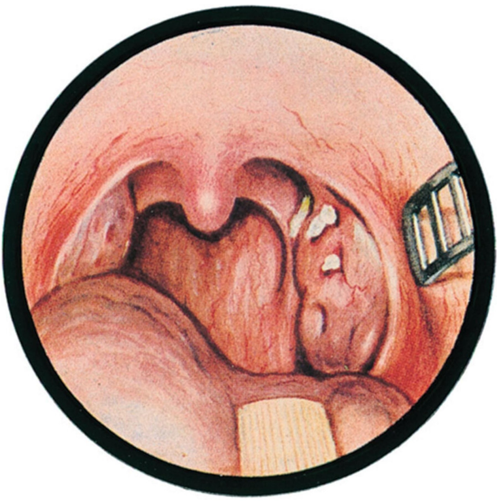
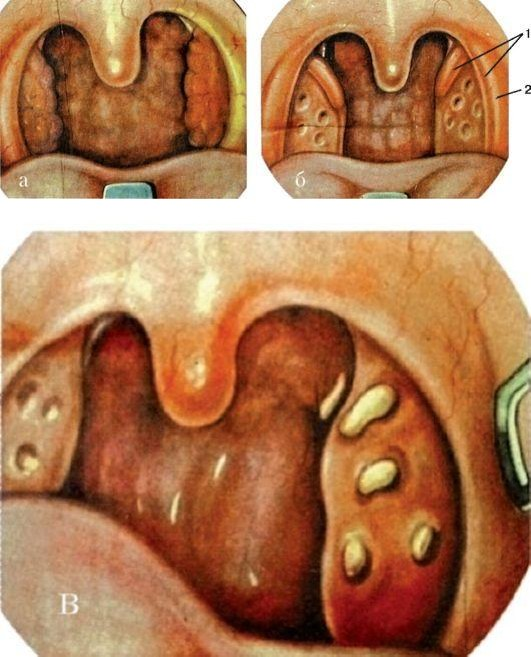
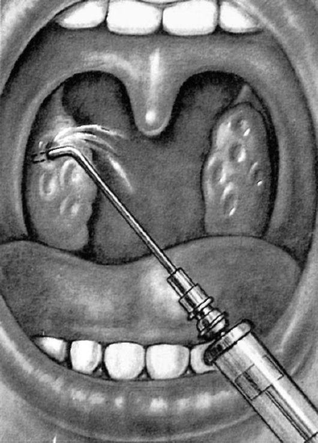
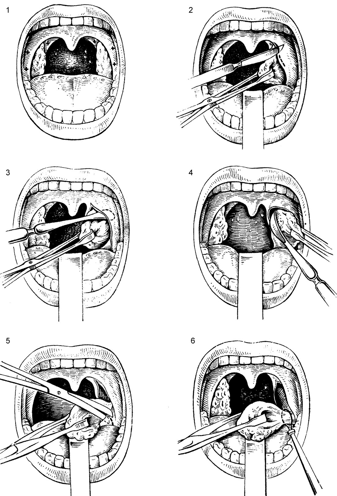
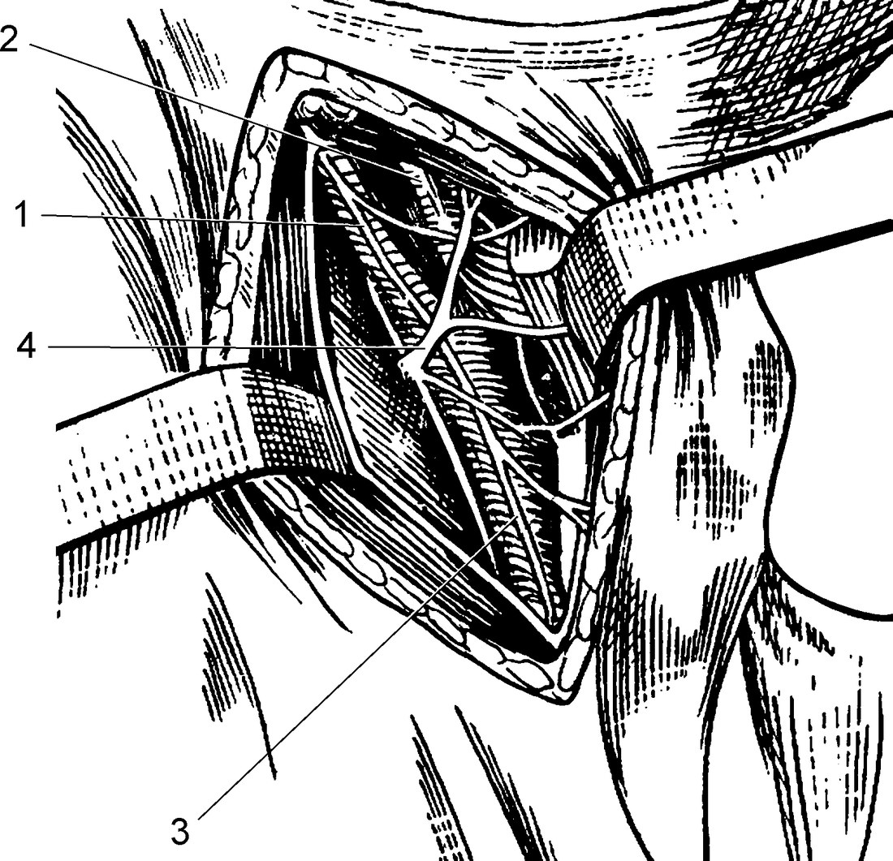
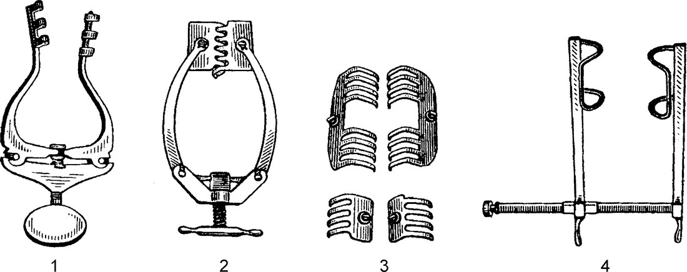
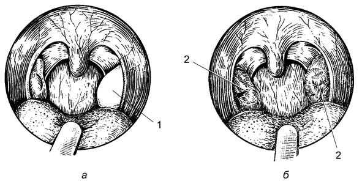
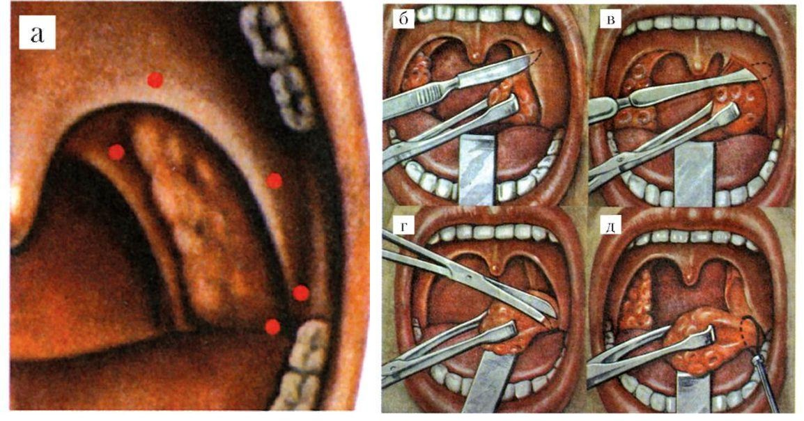

Хронический тонзиллит
Хронический тонзиллит: определение, классификация, этиология и патогенез
Хронический тонзиллит является одной из основных проблем не только в оториноларингологии, но и во многих других клинических дисциплинах, в его патогенезе главную роль играют аллергия, очаговая инфекция и недостаточность местного и системного иммунитета. Однако особое значение в возникновении хронического тонзиллита, по мнению многих авторов, имеет генетическая регуляция иммунного ответа нёбных миндалин на воздействие специфических антигенов. По данным обследования разных групп населения, в СССР во второй четверти XX в. заболеваемость хроническим тонзиллитом колебалась в пределах 4–10%, а в третьей четверти века этот показатель возрос до 15,8–31,1%. По данным В. Р. Гофмана и соавт. (1984), хроническим тонзиллитом страдает 5–6% взрослого населения и 10–12% детей. по: Бабияк и соавт., т. 1, с. 595
Заболевание представляет собой активный, с периодическими обострениями хронический воспалительный очаг инфекции в нёбных миндалинах с общей инфекционно-аллергической реакцией. Постоянная интоксикация из тонзиллярного очага инфекции, усиливающаяся при обострении процесса, нарушает функционирование всего организма и отягощает течение уже имеющихся общих заболеваний. Нередко хронический тонзиллит сам становится причиной общих и местных заболеваний, таких как ревматизм, болезни суставов, почек, паратонзиллит и др. по: Пальчун и соавт., с. 306
По данным отечественных и зарубежных авторов, распространённость хронического тонзиллита среди населения колеблется в широких пределах: у взрослых она составляет от 5–6 до 37%, у детей — от 15 до 63%. Нужно иметь в виду, что между обострениями, а также при безангинной форме хронического тонзиллита симптомы заболевания бывают во многом привычными и мало или совсем не беспокоят пациента, что значительно занижает действительную распространённость заболевания. Часто хронический тонзиллит выявляют лишь в связи с обследованием пациента по поводу какой-то другой болезни, в развитии которой хронический тонзиллит играет большую роль. Код по МКБ-10: J35.0 Хронический тонзиллит. по: Нац. руководство, 2016, с. 800
Классификация. В нашей стране действует классификация, принятая на VII Всесоюзном съезде оториноларингологов (1975), предложенная И. Б. Солдатовым, в соответствии с которой многочисленные клинико-морфологические разновидности хронического тонзиллита сведены к двум формам — компенсированный и декомпенсированный хронический тонзиллит. В 1978 г. В. Т. Пальчун «реанимировал» классификацию хронического тонзиллита Б. С. Преображенского (1954), несколько изменив и дополнив её. Согласно этой классификации, хронический тонзиллит разделяют на простую и токсико-аллергическую формы. В классификации перечислены все известные признаки хронического тонзиллита.
Простая форма характеризуется местными признаками хронического тонзиллита и у 96% — ангинами в анамнезе. При этой форме могут иметь место сопутствующие заболевания, которые, по В. Т. Пальчуну, «...не имеют единой этиологической основы с хроническим тонзиллитом; патогенетическая связь осуществляется через общую и местную резистентность». Токсико-аллергическая форма, по существу, детализирует понятие декомпенсированного хронического тонзиллита, предложенного И. Б. Солдатовым в 1975 г. По В. Т. Пальчуну (1978), она подразделяется на I и II степени. по: Бабияк и соавт., т. 1, с. 595
Различают 2 клинические формы хронического тонзиллита: простую и токсико-аллергическую, которая бывает двух степеней выраженности. Диагноз устанавливается с учётом наличия местных признаков и токсико-аллергических проявлений. Для простой формы хронического тонзиллита характерны местные фарингоскопические признаки: миндалины могут быть разрыхлены, но часто они небольшие, гладкие, в их лакунах, как правило, определяется патологический секрет, отмечается стойкая гиперемия, отечность краёв нёбных дужек, сращение и спайки миндалин с дужками и треугольной складкой, увеличение отдельных регионарных лимфатических узлов.
Токсико-аллергическая форма характеризуется не только наличием местных признаков, но, кроме того, и общими токсико-аллергическими проявлениями. При токсико-аллергической форме I степени могут быть периодические эпизоды субфебрильной температуры, быстрая утомляемость, слабость, разбитость, периодические боли в суставах, увеличение и болезненность при пальпации регионарных лимфатических узлов, неприятные ощущения в области сердца и т.д. При токсико-аллергической форме II степени значительно более выражены общие проявления, что позволяет говорить о сопряжённых с хроническим тонзиллитом заболеваниях — местных и общих. Местные сопряжённые заболевания — это паратонзиллит и парафарингит, общие — ревматизм, артрит, инфекционно-аллергические заболевания почек, острый и хронический тонзиллогенный сепсис. по: Пальчун и соавт., с. 306–307
Признаки, на которых основана классификация Б. С. Преображенского — В. Т. Пальчуна, национальное руководство приводит в развёрнутом виде. Простая форма хронического тонзиллита: для неё характерны только местные признаки и у 96% больных наличие ангин в анамнезе. Местные признаки:
- жидкий гной или казеозно-гнойные пробки в лакунах миндалин (могут быть с запахом);
- миндалины у взрослых чаще небольшие, могут быть гладкими или с разрыхлённой поверхностью;
- стойкая гиперемия краёв нёбных дужек (признак Гизе);
- отёчность краёв верхних отделов нёбных дужек (признак Зака);
- валикообразное утолщение краёв передних нёбных дужек (признак Преображенского);
- сращение и спайки миндалин с дужками и треугольной складкой;
- увеличение отдельных регионарных лимфатических узлов, иногда болезненных при пальпации (при отсутствии других очагов инфекции в этом регионе).
по: Нац. руководство, 2016, с. 801
Лечение простой формы консервативное. Наличие гнойного содержимого в лакунах после 2–3 курсов лечения — показание для тонзиллэктомии. Токсико-аллергическая форма I степени: для неё характерны местные признаки простой формы и общие токсико-аллергические реакции. Признаки:
- периодические эпизоды субфебрильной температуры тела;
- эпизоды слабости, разбитости, недомогания; быстрая утомляемость, сниженная трудоспособность, плохое самочувствие;
- периодические боли в суставах;
- увеличение и болезненность при пальпации регионарных лимфатических узлов (при отсутствии других очагов инфекции);
- функциональные нарушения сердечной деятельности непостоянны, могут проявляться при нагрузках и в покое, в период обострения хронического тонзиллита;
- отклонения от нормы лабораторных данных могут быть неустойчивыми и непостоянными.
по: Нац. руководство, 2016, с. 801–802
Лечение токсико-аллергической формы I степени консервативное. Отсутствие эффекта (гной в лакунах, токсико-аллергические реакции) после 1–2 курсов лечения — показание к тонзиллэктомии. Токсико-аллергическая форма II степени: для неё характерны местные признаки простой формы и общие токсико-аллергические реакции. Признаки:
- периодические функциональные нарушения сердечной деятельности (больной предъявляет жалобы, нарушения регистрируют на ЭКГ);
- сердцебиение, нарушения сердечного ритма;
- боли в области сердца или суставах бывают как во время ангины, так и вне обострения хронического тонзиллита;
- субфебрильная температура тела (может быть длительной);
- функциональные нарушения инфекционной природы в работе почек, сердца, сосудистой системы, суставов, печени и других органов и систем, регистрируемые клинически и с помощью лабораторных методов.
по: Нац. руководство, 2016, с. 802
Сопряжённые заболевания имеют с хроническим тонзиллитом общие инфекционные причины. Местные заболевания — паратонзиллярный абсцесс и парафарингит. Общие заболевания:
- острый и хронический (нередко с завуалированной симптоматикой) тонзиллогенный сепсис;
- ревматизм;
- приобретённые пороки сердца;
- инфекционно-аллергическая природа заболеваний мочевыделительной системы, суставов и других органов и систем.
по: Нац. руководство, 2016, с. 802
Лечение токсико-аллергической формы II степени хирургическое (тонзиллэктомия). по: Нац. руководство, 2016, с. 802
По В. И. Воячеку, «хронические формы миндаликовых заболеваний делятся на две основные: 1) дистрофии, главным образом гипертрофического типа, и 2) связанные с воспалительными и инфекционными процессами». Согласно В. И. Воячеку, первая форма является выражением так называемого миндаликового стереотипа — биологической необходимости лимфаденоидной ткани к функциональной (физиологической) гипертрофии для определённых, генетически обусловленных функций. Вторая форма является сочетанием продуктивных и воспалительных процессов, возникающих на фоне постепенной декомпенсации физиологической формы в связи с ростом вирулентности микробиоты и снижением напряжённости тканевого и системного иммунитета.
Этиология и патогенез. Известно, что как в норме, так и при хроническом тонзиллите нёбные миндалины содержат разнообразную микробиоту, в том числе и патогенную, и, по мнению В. Р. Гофмана и соавт. (1998), благодаря этому бактериологические и вирусологические исследования не имеют конкретного значения в диагностике хронического тонзиллита. При хроническом тонзиллите обнаружено до 30 сочетаний разных микробов, приоритет принадлежит зеленящему стрептококку или энтерококку, присутствие которого при хроническом тонзиллите выявлено в 75,2% случаев. Особое значение в возникновении хронического тонзиллита принадлежит стафилококковой флоре, дрожжеподобным грибам, аденовирусной инфекции, а в половине случаев к патогенной флоре присоединяются ассоциации непатогенной и условно-патогенной флоры.
Патогенез. По патогенезу различают две формы: а) хронический тонзиллит как следствие перенесённых в детстве многократных ангин, разрушивших механизмы тканевого иммунитета и создавших благоприятные условия для постоянного вегетирования в нёбных миндалинах патогенной флоры (фокальная инфекция); б) первично развивающийся хронический тонзиллит без острых ангинозных эксцессов. Обе формы развития хронического тонзиллита обусловлены рядом внешних и внутренних причин. По мнению многих исследователей, главной причиной возникновения хронического тонзиллита является анатомическое строение нёбных миндалин, и в частности наличие глубоких крипт, в которых скапливаются, размножаются и оказывают некробиотическое влияние на окружающую лимфаденоидную ткань ассоциации патогенной флоры.
Важным условием развития хронического воспаления в нёбных миндалинах являются анатомические условия, в которых они находятся: прикрытие лакун треугольной и полулунной складками, глубокие ниши нёбных миндалин и их ущемление между передней и задней нёбными дужками, наличие дополнительных ниш, в которых располагается миндаликовая ткань. Другим фактором, способствующим развитию хронического тонзиллита, является нарушение носового дыхания, что приводит к обдуванию лимфоидных образований глотки дыхательным воздухом и быстрому высушиванию слизи, содержащей и форменные элементы тканевой защиты, и биохимические факторы типа лизоцима. Способствуют возникновению хронического тонзиллита инфекционные заболевания (корь, скарлатина, дифтерия, краснуха, грипп), вызывающие интенсивную ответную воспалительную реакцию со стороны лимфоидных образований глотки и быстро нарастающую гиперплазию нёбных миндалин.
Вдыхание через рот охлажденного воздуха или употребление холодных напитков играет двоякую патогенетическую роль — непосредственно влияет на тканевые биохимические процессы (снижает или даже приостанавливает их) и вызывает ряд физиологических реакций (холодовый спазм сосудов, рефлекторное нарушение вегетативной регуляции трофических функций).
Наличие инфицированных аденоидов также способствует возникновению хронического тонзиллита, особенно у маленьких детей. Нередко удаление аденоидов способствует обратному развитию хронического тонзиллита и выздоровлению. У взрослых частой причиной развития хронического тонзиллита являются хронические риносинуситы, кариозные зубы, пародонтит. Как уже отмечалось ранее, базовым фактором, влияющим на развитие хронического тонзиллита, является наследственная предрасположенность к лимфатическому диатезу вообще и к хроническому тонзиллиту — в частности.
Изучая роль HLA-комплекса в патогенезе хронического тонзиллита и состояние тканевого и системного иммунитета организма, В. Р. Гофман, А. В. Черныш и Ю. Л. Шевченко (2000) пришли к заключению, что «...первичным звеном в патогенезе хронического тонзиллита является иммунодефицитное состояние организма». По мнению указанных авторов, само наличие хронического тонзиллита указывает на присутствие иммунодефицита, являясь как бы его визитной карточкой. Следующим звеном в патогенезе хронического тонзиллита является гиперплазия фолликулов как компенсация иммунодефицита, играющая и отрицательную роль в связи с уменьшением просвета крипт и ухудшением их дренажной функции. Далее к патогенезу хронического тонзиллита присоединяются инфекционно-токсический, аллергические, микробный и тканевый компоненты. по: Бабияк и соавт., т. 1, с. 596–598
Причина возникновения хронического тонзиллита, по данным национального руководства, — патологическое преобразование (развитие хронического воспаления) физиологического процесса формирования иммунитета в ткани нёбных миндалин, где имеющийся в норме ограниченный процесс воспаления стимулирует выработку антител.
Нёбные миндалины — часть иммунной системы, которая состоит из трёх барьеров: лимфокровяного (костный мозг), лимфоинтерстициального (лимфатические узлы) и лимфоэпителиального (лимфоидные скопления, в том числе миндалины, в слизистой оболочке различных органов: глотки, гортани, трахеи и бронхов, кишечника). Масса нёбных миндалин составляет незначительную часть (около 0,01) лимфоидного аппарата иммунной системы. Лимфоидная ткань пронизана многочисленными щелями — криптами, стенки которых покрыты 3–4 слоями эпителия, во многих местах островками эпителий отсутствует (участки так называемого физиологического ангизирования). Через эти деэпителизированные островки микроорганизмы проникают к криптам и контактируют с клетками миндалины. Каждая нёбная миндалина содержит 18–20 крипт, пронизывающих её паренхиму и, кроме того, древовидно разветвляющихся. Площадь поверхности стенок всех крипт огромна: около 300 см¹ (площадь глотки, например, равна 90 см¹).
Микроорганизмы в миндалину попадают не только через деэпителизированные островки, но и через эпителий стенок крипт, формируя в пристеночной области ограниченное, так называемое физиологическое, воспаление. Живые микроорганизмы, их мёртвые тела и токсины являются антигенами, которые стимулируют образование антител. Наиболее активно эти процессы протекают в детском и молодом возрасте. Иммунная система организма в норме удерживает активность физиологического воспаления в миндалинах на уровне не более чем достаточном для формирования антител к различным микробным агентам, поступающим в крипты. В силу определённых местных или общих причин, таких как переохлаждение, вирусные и другие заболевания (особенно повторные ангины), ослабляющих иммунитет, физиологическое воспаление в миндалинах активизируется, возрастает вирулентность и агрессивность микробов в криптах миндалин. Микроорганизмы преодолевают защитный иммунный барьер, ограниченное физиологическое воспаление в криптах становится патологическим, распространяясь на паренхиму миндалины.
Среди бактериальной флоры, постоянно вегетирующей в нёбных миндалинах и обусловливающей при известных условиях возникновение и развитие хронического тонзиллита, могут быть стрептококки, стафилококки и их ассоциации, а также пневмококки, палочка инфлюэнцы и др. Эти микроорганизмы начинают колонизировать миндалины сразу после рождения ребёнка, носительство отдельных штаммов может быть различным: от 1 мес до 1 года. В развитии хронического тонзиллита и его осложнений существенную роль играют β-гемолитический стрептококк группы А и зеленящий стрептококк, доля стрептококка как этиологического фактора хронического тонзиллита составляет у детей 30%, у взрослых — до 15%. Реже обнаруживают стрептококков серологических групп С и G. Важным фактором в развитии хронического тонзиллита считают предрасположенность к этому заболеванию в семьях, в которых отмечают более высокую частоту носительства стрептококка и распространённости хронического тонзиллита, чем в популяции.
Часто встречающийся при хроническом тонзиллите стафилококк следует рассматривать как сопутствующее инфицирование, но не как этиологический фактор в процессе развития очаговой инфекции. Вирусы не являются непосредственной причиной развития воспаления миндалин, они ослабляют противомикробную защиту, а воспаление возникает под воздействием микробной флоры. Наиболее часто возникновению хронического тонзиллита способствуют аденовирусы, вирусы гриппа и парагриппа, вирус Эпштейна — Барр, вирус герпеса, энтеровирусы I, II и V серотипов. В раннем детском возрасте вирусную инфекцию наблюдают чаще — до 4–6 раз в год.
В большинстве случаев начало хронического тонзиллита связано с одной или несколькими ангинами, после которых происходит хронизация острого воспаления в нёбных миндалинах. Условно-патогенная транзиторная микрофлора, вегетирующая на слизистой оболочке, в том числе и в криптах миндалин, в период ангины активируется, возрастает её вирулентность, и она проникает в паренхиму миндалины, вызывая инфекционно-воспалительный процесс. Нарушается местное кровообращение, повышается проницаемость сосудистой стенки, снижается уровень нейтрофилов, фагоцитирующих клеток, проявляется местная иммунодепрессия и, как следствие, происходит активация транзиторной микрофлоры, развивается острое, а затем хроническое воспаление.
Хронический тонзиллит — классический пример очаговой инфекции, в основе которой лежит развитие инфекционного агента в нёбных миндалинах и реакции на него в отдалённых органах и системах организма. Патогенез очаговой инфекции в миндалинах рассматривают по трём направлениям: локализация очага, характер инфекции и воспаления и защитные механизмы. Одним из объяснений исключительной активности метастазирования инфекции из хронического тонзиллярного очага считают наличие широких лимфатических связей миндалин с основными органами жизнеобеспечения. В патогенезе хронического тонзиллита особенно важны лимфатические связи с областью сердца, их наличие установлено в анатомических и патофизиологических исследованиях. Подтверждением этому могут служить ещё и эмбриологические данные о близости закладок сердца и глотки у зародыша. Весьма важны для понимания патологии лимфатические связи миндалин и мозговых центров: гипофиза, ганглиев блуждающего нерва и вегетативной нервной системы. Частота тонзиллоренальных осложнений в сотни раз меньше, чем сердечных или в целом ревматических.
Хроническое воспаление, в отличие от острого, не имеет стадийности, а граница, отделяющая острый процесс от хронического, нечёткая и определяется такой характеристикой, как уменьшение остроты воспаления. При этом последняя стадия — выздоровление — не наступает. Причиной такой незавершённости острого воспаления считают недостаточность (слабость) проявлений в очаге воспаления защитных свойств. Среди всех микроорганизмов, встречающихся в миндалинах при хроническом тонзиллите, только β-гемолитический и в какой-то мере зеленящий стрептококки способны формировать агрессивный по отношению к отдалённым органам очаг инфекции; другую микрофлору в криптах миндалин рассматривают как сопутствующую.
В патогенезе хронического тонзиллита существенную роль играют нарушения защитного механизма отграничения очага воспаления. Суть барьерной функции состоит в местном подавлении возбудителей инфекции и отграничении очага инфекции защитным клеточно-сосудистым валом. Это защитное свойство утрачивается при последовательных повторениях острого воспаления, снижении реактивности организма, агрессивной инфекции и др. Когда частично или полностью утрачена барьерная функция, очаг воспаления превращается во входные ворота для инфекции. При хроническом воспалении естественная роль нёбных миндалин в формировании иммунитета совершенно извращается: образуются новые антигены под влиянием патологических белковых комплексов (вирулентных микробов, эндо- и экзотоксинов, продуктов деструкции тканевых и микробных клеток и др.), что вызывает образование аутоантител против собственных тканей. по: Нац. руководство, 2016, с. 803–806
Хронический тонзиллит в учебнике Пальчуна, Магомедова, Лучихина
«Non progredi est regredi. Не идти вперед — значит идти назад». Хронический тонзиллит — стойкое хроническое воспаление нёбных миндалин, характеризующееся у подавляющего большинства больных рецидивирующими обострениями в виде ангин и общей токсико-аллергической реакцией, которая является часто реализуемым этиологическим фактором многих местных и общих заболеваний и катализатором патологических процессов в организме. Среди миндалин лимфаденоидного глоточного кольца хронический воспалительный процесс возникает, как правило, в нёбных миндалинах, поэтому под термином «хронический тонзиллит» подразумевают хроническое воспаление именно нёбных миндалин. Среди остальных миндалин хроническое воспаление встречается в глоточной миндалине у детей — хронический аденоидит. Весьма редким является воспаление язычной миндалины, а воспаление трубных (по величине маленьких) соотносят с боковым фарингитом. Хронический тонзиллит относится к распространенным заболеваниям, по данным различных авторов, среди взрослого населения его частота составляет от 4–10% случаев, а в детском возрасте — 12–15%.
Этиология. Изучение флоры в лакунах и на поверхности нёбных миндалин выявило более 30 сочетаний различных форм микробов. В глубине крипт миндалин чаще встречается монофлора, а на зевной поверхности — полифлора. Наиболее часто высеваются гемолитический стрептококк, зеленящий стрептококк, энтерококк, стафилококк, аденовирусы. Следует отметить, что возникновение хронического тонзиллита может быть связано и с активизацией непатогенной сапрофитирующей флоры верхних дыхательных путей при нарушении защитно-приспособительных механизмов организма. С этой точки зрения хронический тонзиллит может быть отнесен к так называемой группе собственно аутоинфекционных заболеваний, обусловленных эндогенной инфекцией — аутоинфекцией.
В патогенезе хронического тонзиллита играют роль многие факторы. Наиболее часто заболевание возникает после повторных ангин. Процесс обратного развития острого воспаления (ангины) в силу общих или местных причин не всегда приводит к полному выздоровлению, и болезнь переходит в хроническую форму. Предпосылками к возникновению и развитию хронического тонзиллита могут служить анатомо-топографические и гистологические особенности нёбных миндалин, наличие условий вегетирования в криптах микрофлоры. В частности, в отличие от других миндалин лимфаденоидного глоточного кольца в нёбных имеются глубокие щели — крипты, которые пронизывают толщу миндалины, ветвятся в ней; просветы их всегда содержат отторгнувшиеся эпителиальные клетки, лимфоциты и разнообразную микрофлору, что может приводить к их воспалению. Часть отверстий лакун прикрыта треугольной складкой Гиса, а часть сужена рубцовой тканью после острых воспалительных процессов в глотке, поэтому ухудшается дренаж крипт, что способствует хроническому воспалению. Наличие хронических заболеваний в полостях рта, носа и околоносовых пазух (кариес зубов, синусит и др.) приводит к инфицированию нёбных миндалин. Все это способствует возникновению и течению хронического тонзиллита. Миндалины участвуют в общих и местных иммунных реакциях посредством выработки антител при контакте с бактериальным агентом.
Многочисленные классификации хронического тонзиллита основаны на клинических, патоморфологических, симптоматических признаках (Луковского Л. А., 1941; Ундрица В. Ф., 1954; Солдатова И. Б., 1976 и др.). Однако в наибольшей мере современным представлениям о хронической очаговой инфекции, токсических и аллергических процессах при хроническом тонзиллите соответствует классификация Б. С. Преображенского (1970), которая несколько изменена и дополнена В. Т. Пальчуном (1974) (табл. 1). Хронический тонзиллит имеет две клинические формы: простую и токсико-аллергическую двух степеней выраженности. по: Пальчун, Магомедов, Лучихин, учебник, с. 294–297
Таблица 1. Классификация хронического тонзиллита по Преображенскому — Пальчуну (по данным учебника Пальчуна, Магомедова, Лучихина, табл. 3.2, с. 298–299)
| Форма хронического тонзиллита | Характеристика | Признаки | Лечение |
|---|---|---|---|
| Простая форма | Характеризуется только местными признаками и у 96% больных — ангинами в анамнезе. К сопутствующим заболеваниям относятся те, которые не имеют единой инфекционной основы с ХТ, патогенетическая связь осуществляется через общую и местную реактивность | Местные признаки: 1) жидкий гной или казеозно-гнойные пробки в лакунах миндалин (могут быть с запахом), у взрослых миндалины чаще небольшие, могут быть гладкими или с разрыхленной поверхностью; 2) признак Гизе — стойкая гиперемия краев нёбных дужек; 3) признак Зака — отечность краев верхних отделов нёбных дужек; 4) признак Преображенского — валикообразное утолщение краев передних нёбных дужек; 5) сращение и спайки миндалин с дужками и треугольной складкой; 6) увеличение отдельных регионарных лимфатических узлов, иногда болезненных при пальпации (при отсутствии других очагов инфекции в этом регионе) | Консервативное. Наличие гнойного содержимого в лакунах после 2–3 курсов лечения является показанием для тонзиллэктомии |
| Токсико-аллергическая форма I степени (ТАФ I) | Характеризуется местными признаками простой формы и общими токсико-аллергическими реакциями. Сопутствующие заболевания такие же, как при простой форме, — не имеют единой инфекционной основы с ХТ | Токсико-аллергические признаки ТАФ I: 1) периодическая субфебрильная температура; 2) периодические слабость, разбитость, недомогание, быстрая утомляемость, пониженная трудоспособность, плохое самочувствие; 3) периодические боли в суставах; 4) регионарные лимфоузлы увеличены и болезненны при пальпации (при отсутствии других очагов инфекции); 5) функциональные нарушения сердечной деятельности непостоянные, могут выявляться при нагрузках и в покое, в период обострения ХТ; 6) отклонения в лабораторных данных: показатели крови и иммунологические могут быть неустойчивы и непостоянны | Неэффективность консервативного лечения (гной в лакунах, токсико-аллергические реакции) после 1–2 курсов лечения является показанием к тонзиллэктомии |
| Токсико-аллергическая форма II степени (ТАФ II) | Характеризуется местными и общими признаками I степени с более выраженными токсико-аллергическими реакциями; при наличии заболевания, сопряженного с ХТ единым инфекционным фактором, всегда диагностируется II степень. Могут быть сопутствующие заболевания такие же, как при простой форме. Сопряженные заболевания имеют единые с ХТ этиологические и патогенетические факторы: а) местные — паратонзиллярный абсцесс, парафарингит, фарингит; б) общие — острый и хронический (нередко с завуалированной симптоматикой) тонзиллогенный сепсис, ревматизм, инфектартрит, приобретенные заболевания сердца, мочевыделительной системы, суставов и других органов и систем инфекционно-аллергической природы | Токсико-аллергические признаки ТАФ II: 1) функциональные нарушения сердечной деятельности периодически беспокоят больного, регистрируются на ЭКГ; 2) боли в области сердца или суставах бывают как во время ангины, так и вне обострения ХТ; 3) сердцебиение, нарушение сердечного ритма; 4) субфебрильная температура (может быть длительной); 5) функциональные нарушения инфекционного характера почек, сердца, сосудистой системы, суставов, печени и других органов и систем, регистрируемые клинически и с помощью лабораторных исследований | Тонзиллэктомия |
ХТ — хронический тонзиллит.
Хронический тонзиллит в учебнике Заболотного и соавт.
Хронический тонзиллит — хроническое воспаление нёбных миндалин (tonsillitis chronica) — часто наблюдается у детей, начиная с 3 лет, и у молодых людей. Однако заболевание может наблюдаться и у детей в возрасте до 3 лет, а также у лиц пожилого возраста. Хронический тонзиллит сопровождается многими осложнениями. Любой врач общей практики в своей деятельности ежедневно встречается с больными хроническим тонзиллитом и часто должен лечить его осложнение. Поэтому знание хронического воспаления нёбных миндалин обязательно для клинициста любого профиля.
Этиология. В криптах миндалин больных хроническим тонзиллитом чаще всего определяют β-гемолитический стрептококк, другие виды стрептококка, стафилококк. Высеянные из крипт миндалин возбудители у больных хроническим тонзиллитом имеют более выраженную патогенность и аллергизирующие свойства, чем такие же микробы, высеянные из крипт миндалин здоровых людей. В возникновении и поддержании хронического воспаления нёбных миндалин определенное значение имеют очаги хронической инфекции в близлежащих органах (кариозные зубы, альвеолярная пиорея, хронические ринит, синусит, аденоидит, фарингит), откуда начинается постепенное инфицирование миндалин. При хроническом тонзиллите наблюдается сужение устьев крипт миндалин за счет разрастания соединительной ткани. Это приводит к нарушению дренажной функции крипт, застою содержимого, создаются условия для культивирования микробов. Из нёбных миндалин, особенно у детей, часто выделяют аденовирусы, которые сами по себе не являются возбудителями хронического тонзиллита, но способствуют развитию его возбудителя — кокковой инфекции. Исследования показали, что у больных хроническим тонзиллитом наблюдаются нарушения местного и системного иммунитета, которые развиваются вследствие перенесения острых инфекций (дифтерии, скарлатины, кори и т. п.), переутомления, частых ангин, гиповитаминоза.
Патогенез. В развитии хронического тонзиллита и возникновении его осложнений можно выделить следующие факторы. Прежде всего это интоксикация организма вследствие всасывания токсинов микробов и продуктов хронического воспаления в миндалинах. Интоксикацией следует объяснять общую слабость, быструю утомляемость, головную боль, субфебрилитет, изменения функционального состояния других органов и систем. Образование пробок в криптах раздражает нервные окончания и вызывает нерезкую боль в горле, кашель, боль в области сердца, неприятный запах изо рта. У больных хроническим тонзиллитом отмечается сенсибилизация организма к бактериальным и тканевым антигенам, что характеризуется положительными кожно-аллергическими реакциями, реакцией лейкоцитолиза и бласттрансформации. Этим объясняется аллергическое и аутоаллергическое происхождение некоторых проявлений хронического тонзиллита и механизм возникновения таких инфекционно-аллергических осложнений, как ревматизм, нефрит, коллагенозы и т. д. Нёбные миндалины содержат значительное количество нервных волокон и окончаний, которые под влиянием хронического воспаления претерпевают дегенеративные изменения. Это сопровождается потоком патологических импульсов, поступающих в центральную и вегетативную нервную систему, и вызывает развитие вегетососудистых дистоний, вследствие которых происходит нарушение функционального состояния других органов и систем, а также появление неврозов и других заболеваний нервной системы. по: Заболотный и соавт., с. 338–339
Хронический тонзиллит у детей
Хронический тонзиллит — общее инфекционно-аллергическое заболевание с преимущественной локализацией воспалительного процесса в небных миндалинах. Распространенность. Хронический тонзиллит является распространенным заболеванием у детей, он неблагоприятно влияет на растущий организм, часто способствует развитию различных осложнений. С патологией миндалин связано более 80 видов заболеваний. Хроническим тонзиллитом страдает более 15,8% населения, из них 2–3% детей раннего возраста, 6–7% дошкольников и 8–9% школьников.
Этиология и патогенез. Хронический неспецифический тонзиллит — полиэтиологическое заболевание со сложным патогенезом. Патогенетической основой хронического тонзиллита служит соотношение инфекционного и аллергического факторов, варьирующих по значению в зависимости от остроты, компенсации или декомпенсации заболевания.
В возникновении хронического тонзиллита основную роль играют нарушение реактивности организма, патогенность микрофлоры в лакунах миндалин, бактериальная сенсибилизация и связанные с ними аутоиммунные процессы. Имеющаяся в небных миндалинах патогенная микрофлора на определенном этапе может оказаться пусковым фактором аутоиммунного механизма. Формирование хронического воспалительного очага в миндалинах и развитие тонзиллогенных процессов становятся результатом длительного взаимодействия инфекционного агента и макроорганизма. В полости рта имеются благоприятные условия для существования и размножения бактерий: десквамированный эпителий, остатки пищи, достаточная влажность, соответствующая температура, в связи с чем полость рта сравнивают с термостатом.
Большое значение имеет патогенная микрофлора лакун небных миндалин, преимущественно смешанная (до 30 сочетаний различных форм микроорганизмов) с преобладающей ролью β-гемолитического стрептококка серологической группы А и золотистого стафилококка или их ассоциации, а также вирусов гриппа, парагриппа, аденовирусов, энтеровирусов I, II и V серотипов. На поверхности миндалин микрофлора полиморфна, в лакунах обнаруживается преимущественно монофлора.
Вирусной инфекции придают большое значение в развитии заболевания у детей раннего возраста; вирусы не становятся непосредственной причиной воспалительных изменений в слизистой оболочке, но вызывают нарушение кровообращения, лимфообращения, создают условия для размножения бактерий и подготавливают почву для рецидивирующего течения хронического тонзиллита. У детей старше 5–7 лет повышается роль стрепто-, стафилококковой инфекции.
Наибольшее значение придают вегетирующему в глубоких отделах крипт β-гемолитическому стрептококку, который высевается из лакун у 70% детей с хроническим тонзиллитом, и у 93% больных ангиной. При сочетании хронического тонзиллита с метатонзиллярными осложнениями стрептококк выявляется в 10 раз чаще, чем при неосложненном хроническом тонзиллите.
При прохождении плода через родовые пути его ротовая полость уже заселена микроорганизмами. Даже если сразу после рождения внутренняя поверхность рта еще стерильна, то через несколько часов из полости рта уже можно высеять бактерии. До прорезывания зубов у детей в полости рта имеется преимущественно аэробная инфекция, после прорезывания появляются в большом количестве анаэробные бактерии. Иногда источником инфицирования грудных детей могут стать их родители с частыми обострениями хронического тонзиллита.
Возникновение хронического тонзиллита обусловлено нарушениями биологических процессов в небных миндалинах, где имеются благоприятные анатомо-топографические предпосылки к возникновению активного хронического воспаления: глубокие, узкие и густо ветвящиеся лакуны миндалин у детей, щелевидные ходы, многократно пронизывающие всю толщу небной миндалины, затрудняющие дренаж из глубоких отделов лакун; рубцовые изменения после воспалительных процессов кровеносных и лимфатических сосудов, реактивность фолликулов, состояние рецепторного аппарата.
При хроническом тонзиллите у детей все структурные элементы миндалин вовлечены в воспалительный процесс, а большая всасывающая поверхность лакунарного эпителия при таком строении и застое белковых масс, слизи, развитии колоний микроорганизмов в просветах лакун благоприятствует местной и общей сенсибилизации детского организма. Содержимое лакун вызывает раздражение слизистой оболочки и способствует возникновению воспалительного процесса, который может распространиться на паренхиму и капсулу миндалины.
При изъязвлении эпителия создаются благоприятные условия для проникновения микроорганизмов в ток крови, образующиеся спайки затрудняют опорожнение лакун; микроорганизмы, а также продукты обмена и разложения пораженных тканей приобретают антигенные свойства и служат источником сенсибилизации организма.
Сенсибилизация организма может происходить уже в ранние сроки заболевания хроническим тонзиллитом. Хронический очаг инфекции в миндалинах рассматривается как постоянный фактор общей сенсибилизации организма, который может служить причиной метатонзиллярных заболеваний и дополнительно нарушает и без того измененную реактивность организма.
Для развития и поддержания хронического воспаления миндалин играет решающую роль не столько вид возбудителя, сколько нарушение защитноприспособительных механизмов миндалин, изменение общей реактивности и сенсибилизация организма ребенка.
Большое значение в развитии хронического тонзиллита у детей имеет аллергическое изменение реактивности. В миндалинах происходит значительная продукция антител, часть которых фиксируется на ретикулоэндотелиальных элементах. При попадании в организм антигена наступает аллергическая реакция в виде обострения хронического тонзиллита. Как результат сложных нарушений иммунных механизмов развивается хроническая тонзиллярная инфекция. При хроническом тонзиллите у детей небные миндалины не способны выполнять барьерную функцию, а наоборот, становятся очагом инфекции, сенсибилизирующим весь организм.
Гиперергические изменения стенок сосудов, эозинофильная инфильтрация тканей миндалин, увеличение количества лимфоцитов и моноцитов (плазматизация клеточного состава) подтверждают большое значение аллергического компонента в патогенезе данного заболевания у детей.
Большое значение придают изменению гуморального иммунитета. Отмечают выраженные изменения показателей секреторных и сывороточных иммуноглобулинов. Значительно повышается содержание одного из факторов гуморального иммунитета — С-реактивного белка в сыворотке крови, отражающего активность воспалительного процесса в миндалинах. В основе его образования лежат процессы разрушения клеток, обусловленные бактериальной и вирусной инфекцией, а также патологическим состоянием небных миндалин. Тесты на С-реактивный белок при хроническом тонзиллите оказываются положительными у 60% детей.
Высокая чувствительность и объективность этих тестов делают их особенно ценными в выявлении скрытых малых фокальных очагов инфекции, играющих большую роль в патогенезе ряда системных болезней.
Большая роль в патогенезе хронического тонзиллита отводится гиперчувствительности замедленного типа. Увеличение антигенного раздражения лакун миндалин приводит к выраженному усилению ответа клеток тимусзависимой системы в виде массивной инфильтрации лимфоцитами слизистой оболочки миндалин и резкой активизации «движения» лимфоцитов.
При хроническом тонзиллите скопления «движущихся» лимфоцитов значительно более обширны и многочисленны, чем в норме. Об этом также свидетельствует частота положительных кожно-аллергических реакций на антигены стрептококка и стафилококка у детей, страдающих этим заболеванием. С началом инволюции тимуса, регулирующего реакции гиперчувствительности замедленного типа, уменьшается и число детей, больных хроническим тонзиллитом. Иммунные комплексы антиген — антитело обладают высокой хемотаксической активностью и повышают протеолитическую способность ферментов макрофагов, что приводит к лизису ткани миндалин, денатурации собственных тканевых белков, приобретающих антигенный характер. Попадая в кровь, они вызывают выработку аутоантител, которые фиксируются на клетках и повреждают их. Хронический тонзиллит чаще возникает у детей с различными отклонениями от нормального развития. Это последствия перинатальной патологии, алиментарная сенсибилизация при раннем искусственном вскармливании и избытке белков в пище, лимфатико-гипопластическая конституция, экссудативный диатез, аллергия, рахит, эндогенные интоксикации (кариозные зубы, пародонтозы, хронические гнойные синуситы), постоянное охлаждение слизистой оболочки глотки вследствие затруднения носового дыхания, неблагоприятные бытовые факторы, гиповитаминоз, лимфостаз в области регионарных лимфатических узлов, являющихся коллекторами лимфы для полости носа, носоглотки и небных миндалин, и другие факторы, снижающие защитные силы организма.
При хроническом тонзиллите такие миндалины служат источником тонзиллокардиального, тонзиллоренального и других патологических рефлексов. по: Богомильский, Чистякова, с. 295–298
Точка зрения зарубежных авторов
Нёбные миндалины парные, состоят из лимфоидной ткани и расположены в тонзиллярной ямке между передней и задней нёбными дужками, образованными нёбно-язычной и нёбно-глоточной мышцами. Вместе с аденоидами, язычными миндалинами, трубными миндалинами и диффузными скоплениями субмукозной лимфоидной ткани глотки они составляют кольцо Вальдейера. Гистологически миндалины состоят из скоплений лимфоцитов, расположенных фолликулярно в строме соединительной ткани; эпителиальная выстилка многослойная плоская, которая впячивается в паренхиму, образуя крипты. Микроорганизмы, выделяемые из миндалин, очень разнообразны; чаще всего с поверхности больной миндалины выделяется БГСА, который обнаруживается и почти у 40% бессимптомных лиц. При рецидивирующем тонзиллите преобладали Haemophilus influenzae и Staphylococcus aureus, включая MRSA, смешанная флора была довольно частой, β-гемолитические стрептококки выделялись реже.
Нет данных, что тонзиллэктомия приводит к нарушению иммунитета, вероятно, из-за обширного «резерва» иммунной системы. Роль бактерий и вирусов в этом процессе также спорна; данные говорят о том, что они могут действовать синергично, при этом присутствие некоторых латентных вирусов (в особенности вируса Эпштейна — Барр, аденовирусов и вируса простого герпеса) сенсибилизирует патогенные бактерии, случайно присутствующие на миндалинах бессимптомных лиц. по: Scott-Brown, т. 2, с. 435–436
Патологическая анатомия хронического тонзиллита
Морфологические изменения нёбных миндалин при хроническом тонзиллите столь же разнообразны, как и его патогенетические механизмы, и находятся в прямой корреляционной связи с последними. Основным морфологическим признаком хронического тонзиллита является так называемая твёрдая гипертрофия, обусловленная развитием соединительной ткани в инфицированных миндалинах между дольками, поэтому они представляются на ощупь плотными, спаянными рубцами с окружающими тканями, не поддаются «вывихиванию» из своих ниш. От «твёрдой» гипертрофии следует отличать «мягкую» гипертрофию, когда нёбные миндалины увеличены, но в них отсутствуют воспалительные изменения, а гипертрофия относится к нормогенетическому состоянию, обеспечивающему многочисленные физиологические и иммунные функции миндалин. Как отмечал Б. С. Преображенский, величина нёбных миндалин не является абсолютным признаком хронического тонзиллита, так как их увеличение может наблюдаться в ряде случаев, особенно у детей с лимфатико-гипопластическим диатезом.
Изменения в нёбных миндалинах при хроническом тонзиллите развиваются постепенно и чаще начинаются с поверхностно расположенных тканей, контактирующих с внешними патогенными факторами. Способствующим фактором в развитии изменений является строение и глубина лакун, особенно их разветвлённость в паренхиме миндалины. В части случаев лакуны могут достигать капсулы миндалины. В этих случаях особенно интенсивно развивается рубцовая ткань в перитонзиллярной области, что нарушает кровоснабжение миндалин и лимфоотток из них, усугубляя в них воспалительный процесс.
Важное клинико-диагностическое значение имеет патологоанатомическая классификация морфологических изменений, происходящих в нёбных миндалинах при хроническом тонзиллите, предложенная Б. С. Преображенским (1963). Согласно этой классификации, хронический тонзиллит может протекать в следующих формах: а) лакунарный, или криптогенный, хронический тонзиллит (tonsillitis chronica lacunaris), характеризующийся хроническим воспалением слизистой оболочки лакун и прилегающей паренхимы; проявляется признаком Зака; б) хронический паренхиматозный тонзиллит (tonsillitis chronica parenchimatosa), при котором основные изменения развиваются в паренхиме миндалины с образованием мелких или более крупных абсцессов, трансформирующихся впоследствии в рубцовую ткань. Иногда при хроническом тонзиллите в толще миндалины развивается хронический абсцесс, представляющий собой, как правило, наполненную гноем и казеозными массами крипту с облитерированным выходом на поверхность миндалины (abscessus intratonsillaris).
в) лакунарно-паренхиматозный (тотальный) хронический тонзиллит наблюдается при патоморфологических проявлениях форм а и б. Чаще всего хронический тонзиллит начинается лакунарным процессом, переходящим затем на паренхиму миндалины, поэтому формой в всегда завершается тотальное поражение нёбной миндалины, в патоморфологическом отношении приобретающей вид губки, строму которой составляет соединительная ткань, а содержание — гной, детрит, казеоз, тела погибших и действующих микроорганизмов, выделяющих в окружающую среду свои эндо- и экзотоксины; г) хронический склеротический тонзиллит — особая форма патологического состояния нёбных миндалин, являющаяся последней стадией развития хронического воспаления в паренхиме миндалины, для которой характерны многочисленные рубцовые изменения её паренхимы и капсулы с многочисленными мелкими и крупными инкапсулированными холодными абсцессами.
Как самостоятельная форма, не имеющая ничего общего с хроническим тонзиллитом, склерозирующая атрофия нёбных миндалин наблюдается в престарелом возрасте как одно из инволюционных возрастных проявлений лимфаденоидной ткани в организме. Она характеризуется замещением паренхимы миндалины соединительной тканью, значительным уменьшением нёбных миндалин в размерах, до полного исчезновения, атрофией слизистой оболочки глотки и рядом признаков, описанных ранее в разделе «Атрофический фарингит».
Сказанное ранее можно дополнить сведениями о том, как могут прогрессировать описанные морфологические формы хронического тонзиллита и каковы некоторые клинические проявления возникающих изменений. Так, при закупорке выводного отверстия крипты при криптогенном хроническом тонзиллите существенных общих и местных нарушений не наблюдается. Эта форма тонзиллита очень распространена. Единственными жалобами больных являются гнилостный запах изо рта и периодически возникающие гнойники в миндалинах при застое казеозных масс в лакунах. Однако именно эта форма часто осложняется возникновением ретенционных миндаликовых кист, которые возникают в глубине крипты, изолированной от зева фиброзной диафрагмой. Со временем содержимое ретенционной миндаликовой кисты подвергается дегидратации и пропитыванию солями кальция и, медленно увеличиваясь до размера лесного ореха и более, трансформируется в миндаликовый литиаз, ощущаемый при пальпации как плотное инородное тело.
Хронический паренхиматозный тонзиллит характеризуется периодическими обострениями, протекающими в форме острых вирусных, микробных или флегмонозных ангин. Эта же форма, достигнув состояния декомпенсированного хронического тонзиллита, играет роль фокальной инфекции при различных метатонзиллярных осложнениях. по: Бабияк и соавт., т. 1, с. 598–601
Лимфоциты составляют основную массу паренхимы миндалин, являются клетками воспаления, поэтому морфологически бывает трудно отличить здоровую ткань от воспаленной. С этим связано то обстоятельство, что для диагностики хронического тонзиллита биопсия и последующее гистологическое исследование не используются. Различают изменения со стороны эпителиального покрова, стенок крипт миндалин, паренхимы миндалин, а также паратонзиллярной клетчатки. Поражение эпителия стенок крипт проявляется в отторжении его островками на отдельных участках и массивной инфильтрацией лимфоцитами и плазматическими клетками. В просвете лакун обнаруживается жидкое гнойное содержимое, состоящее из слущенного эпителия, полиморфноядерных лейкоцитов, плазматических клеток, друз гриба, частиц пищи и др. Изменения паренхимы миндалины выражаются процессами как гиперплазии, так и инволюции фолликулов, образованием в них инфильтратов с последующим возникновением микроабсцессов. В заключительных стадиях активного воспалительного процесса происходит разрастание соединительной ткани, замещающей лимфаденоидную ткань. В паратонзиллярной клетчатке и капсуле миндалины также наблюдаются процессы разрастания соединительной ткани, которые сопровождаются образованием гнездных инфильтратов вокруг мелких сосудов, наиболее выраженных у верхнего полюса миндалины. по: Пальчун, Магомедов, Лучихин, учебник, с. 296–297
Морфологические изменения, происходящие в результате хронического тонзиллита, можно разделить на несколько групп.
- Во многих участках, особенно в области крипт, покровный эпителий десквамирован и содержимое крипт непосредственно прилегает к паренхиме миндалин. В других участках наблюдается разрастание эпителия и его ороговение, в криптах миндалин есть пробки, состоящие из вылущенного эпителия, его детрита, лимфоцитов, нейтрофильных лейкоцитов и остатков пищи. Устья крипт сужены.
- Изменения в паренхиме миндалин в начале заболевания характеризуются размножением фолликулов и гипертрофией органа. Одновременно в миндалине появляются мелкоклеточные инфильтраты, состоящие из лимфоцитов, плазматических клеток и гистиоцитов. Параллельно с этим происходят изменения в кровеносных и лимфатических сосудах. Периваскулярная инфильтрация вызывает запустение сосудов или разрушение их стенки, повышение проницаемости. Аналогичные изменения происходят в лимфатических сосудах, что вызывает нарушение лимфооттока из миндалины и способствует возникновению хронического воспалительного процесса в регионарных лимфатических узлах. Инфильтраты сдавливают фолликулы, что приводит к их гибели. На месте инфильтрата происходит разрастание соединительной ткани в виде рубцовых тяжей. Может наблюдаться метаплазия этой рубцовой ткани в хрящевую или даже в костную. Таким образом, в течение многих лет происходит гибель лимфоидных фолликулов и развитие соединительной рубцовой ткани в миндалине. Описанные изменения наблюдаются у здоровых лиц в зависимости от возраста, но у больных они более выражены.
- Образуются рубцы и спайки капсулы с нёбными дужками и фасцией, покрывающей верхнюю мышцу — сжиматель глотки.
- Наблюдаются патологические изменения нервного аппарата миндалин. Дегенеративные изменения происходят как в мякотных, так и в безмякотных нервных стволах. Все эти дистрофические изменения нервных элементов приводят к нарушению трофики тканей миндалин, изменениям рецепторной функции и нервно-рефлекторных влияний на другие органы и системы.
по: Заболотный и соавт., с. 339–340
Некоторые пациенты страдают хроническим дискомфортом в горле, сопровождающимся выделением зловонного белого детрита из крипт миндалин. Иногда этот детрит может уплотняться, кальцифицироваться и образовывать тонзиллолит. Нет данных о связи с идентифицируемой патологией миндалин у таких больных. по: Scott-Brown, т. 2, с. 437
Клиническая картина и диагностика хронического тонзиллита
Симптомы и клиническое течение. Основной особенностью хронического тонзиллита является неспецифичность некоторых симптомов. Так, субъективные симптомы во многом совпадают с таковыми при различных формах хронического фарингита. По величине нёбные миндалины классифицируют по трём степеням, однако размеры и внешний вид не всегда отражают истинное состояние миндалин: существуют миндалины абсолютно нормального вида, и всё же в них может содержаться источник хронической инфекции, обусловливающий метатонзиллярные осложнения. Однако в большинстве случаев хронический тонзиллит проявляется рядом субъективных и объективных симптомов, которые дают основание различать две его клинические формы — компенсированный и декомпенсированный хронический тонзиллит — и в зависимости от этого определять тактику и стратегию лечения больного.
При компенсированном хроническом тонзиллите макроскопически выявляются некоторые признаки хронического воспаления, однако процесс этот ограничен территорией нёбных миндалин, не распространяется за её пределы, не проявляется ангинозными обострениями и тем более перитонзиллярными осложнениями. Такое состояние миндалин обусловлено равновесием между локальным тканевым иммунитетом и общей реактивностью организма, с одной стороны, и протекающим в миндалинах воспалительным процессом — с другой. При декомпенсированном хроническом тонзиллите местные признаки, как правило, отчётливо выражены, некоторые из них типичны только для этой формы и отсутствуют при компенсированной форме, часто возникают обострения в виде ангин, перитонзиллитов, перитонзиллярных абсцессов, регионарных лимфаденитов, а в клинически запущенных случаях — метатонзиллярные осложнения на расстоянии.
Субъективные симптомы характеризуются периодически возникающими болями в области миндалин при глотании и разговоре, покалыванием в них, жжением, сухостью, дискомфортом и ощущением инородного тела в горле. Как правило, эти признаки при компенсированном хроническом тонзиллите не сопровождаются повышением температуры тела, но в некоторых случаях, особенно при декомпенсированной форме, может наблюдаться постоянный или периодически возникающий субфебрилитет. В этот период появляются слабость, недомогание, повышенная утомляемость, которые нередко сопровождаются ноющими болями в суставах и в области сердца. Появление субъективных симптомов на расстоянии свидетельствует о переходе компенсированной формы хронического тонзиллита в декомпенсированную.
В других случаях больные ощущают в глотке выраженные жжение и першение, вызывающие у них приступы сильного кашля (раздражение глоточных веток блуждающего нерва) — один из симптомов лакунарной формы хронического тонзиллита; во время кашля из расширенных лакун выделяются в полость рта казеозные массы. Нередко больные сами выдавливают их из миндалин при помощи пальца или чайной ложки. Запах этих «гнойных пробок» чрезвычайно неприятен; его гнилостный характер свидетельствует о наличии в криптах нёбных миндалин фузоспириллёзной флоры. У ряда больных наблюдают симптом рефлекторной боли в ухе — покалывание и «постреливание» в нём.
Объективные симптомы выявляются при эндоскопическом обследовании глотки и наружном обследовании области регионарных лимфоузлов. При этом применяют осмотр, пальпацию, пробу с вывихиванием миндалины, пробу с выдавливанием из лакун казеозных масс, зондирование лакун, забор материала для бактериологического исследования, включая аспирационную пункцию миндалины. При осмотре прежде всего обращают внимание на величину нёбных миндалин, цвет слизистой оболочки, состояние её поверхности и окружающих тканей. Объективные признаки собственно хронического тонзиллита определяют не ранее чем через 3–4 недели после завершения обострения или ангины.
Согласно описаниям Б. С. Преображенского, при фолликулярной форме паренхиматозного хронического тонзиллита на поверхности миндалин под эпителием обнаруживают «жёлтоватые пузырьки», указывающие на перерождение фолликул и замещение их мелкими кистоподобными образованиями, заполненными «мёртвыми» лейкоцитами и погибшими микробными телами. При лакунарной форме определяются расширенные выводные отверстия лакун, в которых содержатся белого цвета казеозные массы. При надавливании шпателем на латеральную часть передней нёбной дужки и на область верхнего полюса миндалины из неё, как фарш из мясорубки, выделяются казеозные массы или жидкий гной.

При осмотре нёбных миндалин нередко можно обнаружить ряд признаков хронического тонзиллита, отражающих вовлечённость в воспалительный процесс окружающих анатомических образований: а) симптом Гизе (Guisez, 1920) — гиперемия передних дужек; б) симптом Зака (1933) — отёчность слизистой оболочки над верхним полюсом нёбных миндалин и верхних частей нёбных дужек; в) симптом Преображенского (1938) — дугообразная инфильтрация и гиперемия верхних половин дужек и междужечного угла. При хроническом тонзиллите, как правило, развивается регионарный лимфаденит, определяемый пальпацией позади угла нижней челюсти и по переднему краю грудино-ключично-сосцевидной мышцы. Лимфоузлы при пальпации могут реагировать болезненностью, а при пальпации ретромандибулярных узлов — иррадиацией боли в соответствующее ухо.
Важное диагностическое значение имеет приём пальпации и вывихивания нёбных миндалин. При пальпации оценивают эластичность, податливость (мягкость) миндалины или, напротив, её плотность, ригидность, содержимое паренхимы. Кроме того, при помощи пальпации можно определить наличие в паренхиме миндалины или в непосредственной близости к её нише крупного пульсирующего артериального сосуда, что необходимо учитывать как фактор риска кровотечения при операциях тонзиллотомии и тонзиллэктомии. Если при акцентированном надавливании шпателем на латеральную часть передней нёбной дужки миндалина не выступает из своей ниши, а под шпателем ощущается плотная ткань, это свидетельствует о спаянности миндалины с тканями ложа, т. е. о хроническом склеротическом тонзиллите, а также и о трудностях экстирпации миндалины при её экстракапсулярном удалении. Зондирование крипт, осуществляемое при помощи специального изогнутого пуговчатого зонда Г. Г. Куликовского, позволяет определить глубину крипт, их содержимое, наличие стриктур. по: Бабияк и соавт., т. 1, с. 601–604
Одним из наиболее достоверных признаков заболевания считают наличие ангин в анамнезе. При этом у больного обязательно нужно выяснить, каким повышением температуры тела сопровождаются боли в горле и в течение какого периода времени. Ангины при хроническом тонзиллите могут быть ярко выражены (сильная боль в горле при глотании, значительная гиперемия слизистой оболочки глотки, с гнойными атрибутами на нёбных миндалинах соответственно формам, фебрильная температура тела и др.), но у взрослых нередко такой классической симптоматики ангины не бывает. В таких случаях обострения хронического тонзиллита протекают без выраженной остроты всех симптомов: температура соответствует малым субфебрильным значениям (37,2–37,4 °С), боль в горле при глотании незначительная, наблюдают умеренное ухудшение общего самочувствия. Длительность заболевания обычно составляет 3–4 дня. Такая картина ангины характерна для больных ревматизмом. Однако невыраженная манифестация обострений хронического тонзиллита нисколько не уменьшает агрессивности патологического процесса в отношении возникновения токсико-аллергических осложнений.
В клинической картине хронического тонзиллита характерна повторяемость ангин, чаще 2–3 раза в год, нередко 1 раз в несколько лет, и только у 3–4% больных ангин вовсе не бывает. Для ангин другой этиологии (не как обострение хронического тонзиллита) характерно отсутствие их повторяемости. При хроническом тонзиллите наблюдают умеренно выраженные симптомы общей интоксикации, такие как периодическая или постоянная субфебрильная температура тела, потливость, повышенная утомляемость, в том числе умственная, нарушение сна, умеренные головокружение и головная боль, снижение аппетита и др.
Фарингоскопические признаки возникают вторично: выделяющееся из крипт на поверхность миндалины гнойное содержимое, являясь сильным раздражителем, вызывает локальное воспаление, поэтому края нёбных дужек бывают гиперемированы, инфильтрированы и отёчны. По этой же причине при хроническом тонзиллите, как правило, бывает катаральный или гранулёзный фарингит. Регионарный лимфаденит в виде увеличения лимфатических узлов у углов нижней челюсти и вдоль грудино-ключично-сосцевидной мышцы также свидетельствует об инфекции в вышележащих отделах, чаще всего в миндалинах. Конечно, во всех этих случаях инфекция может исходить не только из нёбных миндалин, но и из больных зубов, дёсен, глотки и др.
Токсико-аллергическая форма всегда сопровождается регионарным лимфаденитом — увеличением лимфатических узлов у углов нижней челюсти и впереди грудино-ключично-сосцевидной мышцы. Наряду с определением увеличения лимфатических узлов необходимо отметить их болезненность при пальпации, наличие которой указывает на вовлечение их в токсико-аллергический процесс. Разумеется, что для клинической оценки необходимо исключить другие очаги инфекции в этом регионе (зубах, дёснах, околоносовых пазухах и др.). по: Нац. руководство, 2016, с. 802, 806–807
Диагноз и дифференциальный диагноз. Диагностика хронического тонзиллита при тщательно собранном анамнезе, внимательном эндоскопическом и пальпаторном обследовании, при учёте всех выявляемых признаков не вызывает особых затруднений. Дифференциальный диагноз проводят: а) с острым первичным тонзиллитом (вульгарной ангиной), после которого (если это не было обострением хронического тонзиллита) через 2–3 недели каких-либо органических признаков хронического тонзиллита не выявляется; б) с гипертрофической миндаликовой формой вторичного сифилиса, которая проявляется внезапным и быстрым увеличением объёма всех солитарных лимфаденоидных образований кольца Пирогова — Вальдейера, сопровождающимся кожными проявлениями этой стадии болезни; в) с простой гипертрофической формой туберкулёза миндалин (чаще одной из них) с характерным налётом и шейным и медиастинальным лимфаденитом. по: Бабияк и соавт., т. 1, с. 604
Диагностика и клиническая картина в учебнике Пальчуна, Магомедова, Лучихина
Необходимо отметить, что объективные и субъективные признаки хронического тонзиллита не всегда бывают одновременно, однако здесь важна клиническая значимость каждого из них и совокупная оценка всех симптомов. Нельзя диагностировать хронический тонзиллит в момент обострения (ангины), поскольку все жалобы и фарингоскопические признаки будут отражать остроту процесса, а не хроническое его течение.
Наиболее достоверными признаками хронического тонзиллита являются гнойное содержимое в криптах и данные анамнеза, указывающие на частые перенесенные ангины. Обычно обострения хронического тонзиллита бывают 2–3 раза в год, реже ангины возникают 5–6 раз, однако даже однократные ежегодные ангины следует считать частыми. Нередко больные любое побаливание в горле без других признаков склонны трактовать как ангину, поэтому в каждом конкретном случае необходимо уточнять характер перенесенного воспаления, особенности лечения и др. Встречаются и так называемые безангинные формы, когда на фоне выраженных фарингоскопических признаков хронического процесса ангин у больного не бывает. В таких случаях допустимо считать, что хронический процесс в миндалинах течет на фоне измененной реактивности организма. Другими словами, отсутствие в анамнезе ангин не говорит об отсутствии хронического тонзиллита; считают, что «безангинная форма» хронического тонзиллита бывает у 4% больных. по: Пальчун, Магомедов, Лучихин, учебник, с. 297–299
Фарингоскопическая картина позволяет выявить местные признаки длительного воспаления в миндалинах. Изменения со стороны дужек возникают в результате их длительного раздражения гнойным содержимым из лакун и возникновением местного воспаления. К этим признакам относят:
- Сращения и спаянность передних и задних дужек с самой миндалиной. Зонд или элеватор, введенный между дужками и тканью миндалины, наталкивается на спаянность между краями дужек и миндалиной или облитерацию верхнего полюса миндалины (надминдаликовая ямка).
- Признак Зака — отечность в области верхнего угла, образованного передними и задними дужками (рис. 3.20, а).
- Признак Б. С. Преображенского — гиперплазия и инфильтрация краев верхних отделов передних и задних дужек (рис. 3.20, б).
- Признак Гизе — гиперемия передних дужек (рис. 3.20, б).

Эти признаки не всегда выражены, их появление в той или иной мере может сопровождать хронический фарингит. Величина миндалин не играет существенную роль в диагностике хронического тонзиллита и может варьировать в зависимости от индивидуальных и конституциональных особенностей. У детей и реже у взрослых гипертрофия нёбных миндалин может являться вариантом развития, выражением лимфатической конституции или аллергического состояния. Однако гиперплазия миндалин может способствовать развитию хронического тонзиллита. Важным признаком хронического тонзиллита является наличие в криптах миндалин жидкого, густого казеозного или в виде пробок гнойного содержимого, иногда с неприятным запахом (рис. 3.20, в).
Обнаружить содержимое лакун удается с помощью метода выдавливания. Для этого одним шпателем врач отдавливает язык книзу, как при фарингоскопии, а другим шпателем мягко надавливает на переднюю дужку так, что сдавливает миндалину. Этим методом необходимо пользоваться осторожно, так как при излишне грубом давлении можно ранить слизистую оболочку нёбной дужки. Наличие гноя в лакунах является существенным признаком хронического тонзиллита. Методы зондирования, диагностического вымывания или отсасывания содержимого лакун используются реже. Одним из важных симптомов хронического тонзиллита является увеличение (особенно с болезненностью) регионарных лимфоузлов вдоль переднего края грудино-ключично-сосцевидной мышцы и у угла нижней челюсти. Этот признак имеет решающее значение лишь в том случае, если нет других воспалительных процессов в области головы. Лабораторные методы диагностики, такие как анализы крови, бактериологические, цитологические исследования и др., не играют существенной роли для диагностики заболевания.
Таким образом, при диагностике хронического тонзиллита необходимо основываться не на одном каком-либо симптоме, хотя и ярко выраженном, а на сумме местных и общих признаков: данных анамнеза, объективных симптомов и др., которые позволяют поставить точный диагноз. Однако есть два признака хронического тонзиллита, каждый из которых сам по себе с большой достоверностью свидетельствует о хроническом тонзиллите, — это гнойное содержимое в криптах и повторяемость ангин.
Клинические проявления и жалобы больного хроническим тонзиллитом зависят от его формы (см. табл. 1). При простой форме могут быть частые ангины — 1–2 раза в год, в промежуточные периоды общее состояние больного остается хорошим. Ангины могут быть чаще или реже, это не уменьшает их диагностическую достоверность, поскольку другие (помимо хронического тонзиллита) причины вульгарных ангин (спорадические и эпидемические) не характеризуются повторяемостью. Со стороны других органов при простой форме нет связанных с хроническим тонзиллитом выраженных нарушений, отсутствует интоксикация организма. При простой форме хронического тонзиллита возможно наличие сопутствующих заболеваний. К ним относятся те, которые не имеют единой этиологической основы с хроническим тонзиллитом и протекают как отдельные самостоятельные заболевания. Однако хронический тонзиллит через общую реактивность организма отягощает сопутствующие заболевания. И, наоборот, эти заболевания неблагоприятно отражаются на течении хронического тонзиллита. К сопутствующим заболеваниям относятся, например, гипертоническая болезнь, гипертиреоз, сахарный диабет, туберкулез, эпилепсия, болезни желудочно-кишечного тракта и др.
При токсико-аллергической форме хронического тонзиллита наступают те или иные связанные с ним гематологические, биохимические, иммунологические и другие общие патологические реакции. Выраженность этих изменений может быть разная, поэтому различают I и II степени токсико-аллергических нарушений. Токсико-аллергическая форма I (ТАФ I) отражает клинически регистрируемые нарушения защитно-приспособительных механизмов организма больного. Критериями этой формы, наряду с теми, что имеются при простой форме, являются симптомы интоксикации и аллергизации, обусловленные образованием в организме токсинов, аутоаллергенов и т. д. У больных с ТАФ I могут появляться субфебрильная температура тела, повышенная утомляемость, в том числе и умственная, общая слабость, болевые ощущения со стороны сердца, тахикардия, аритмии, боли в суставах. Иногда больных беспокоят боли и ломота в области поясницы. У больных с ТАФ I хронического тонзиллита периодически возможны и некоторые гематологические сдвиги: ускорение СОЭ, небольшой лейкоцитоз, изменение биохимических показателей крови (диспротеинемия) и др. При объективном исследовании могут быть выявлены тахикардия, нарушение ритма сердечной деятельности, чаще типа экстрасистолии. На ЭКГ встречаются нарушения в проводниковой системе сердца, изменения ритма сердца, формы и величины зубцов, однако при отсутствии выраженных органических изменений сердца. Эти изменения чаще бывают в период обострения, носят, как правило, функциональный характер и проходят в период ремиссии заболевания.
Токсико-аллергическая форма II (ТАФ II) — при этой форме общая реакция организма, болевая симптоматика со стороны сердца, суставов, почек и др., а также нарушения со стороны сердечно-сосудистой, выделительной систем, опорно-двигательного аппарата встречаются в разных вариантах и являются признаком частых и интенсивных токсико-аллергических влияний, систематически исходящих из пораженных миндалин. Сдвиги лабораторных показателей, наблюдаемые в момент обострения тонзиллита, носят в той или иной мере постоянный характер и вне обострения. Нарушения со стороны сердечно-сосудистой, почечной системы и др. могут регистрироваться и при отсутствии обострения хронического тонзиллита. Наличие сопряженных заболеваний является определяющим фактором ТАФ II хронического тонзиллита. К числу сопряженных, т. е. взаимосвязанных причинно-следственными, этиологическими отношениями с хроническим тонзиллитом, относятся многие заболевания: ревматизм, нефрит, неспецифический полиартрит, эндокардит и др. Для всех этих заболеваний характерен общий возбудитель — β-гемолитический стрептококк. Инфекционно-аллергический процесс, лежащий в основе этих заболеваний, тесно связан с очаговой, торпидно протекающей стрептококковой инфекцией, локализующейся чаще всего именно в нёбных миндалинах. Кроме того, частые обострения хронического тонзиллита (ангины) обусловливают тот инфекционно-аллергический фон, который является пусковым фактором в развитии сопряженных заболеваний. по: Пальчун, Магомедов, Лучихин, учебник, с. 299–304
Клиническая картина, диагностика и классификация в учебнике Заболотного и соавт.
Больные хроническим тонзиллитом жалуются на частую ангину. Если больной 1–2 раза в год болеет ангиной, это определяется как частая ангина. Начало заболевания характеризуется значительным повышением температуры тела, выраженной интоксикацией, резкой болью в горле, в дальнейшем ангина сопровождается менее выраженной общей реакцией (субфебрильная температура), нерезкой болью в горле. Такие больные переносят ангину легко, зачастую продолжают работать. Это свидетельствует о снижении реактивности организма. Но существуют больные хроническим тонзиллитом, которые никогда не болели ангиной. Это так называемая безангинная форма хронического тонзиллита.
Между повторными заболеваниями ангиной многие больные жалуются на общую слабость, недомогание, головную боль, неприятные ощущения в горле, возможна нерезкая боль в горле, иррадиирующая в ухо, боль в области сердца, неприятный запах изо рта. У некоторых больных длительное время наблюдается субфебрильная температура тела. Общее состояние у большинства больных нарушено незначительно. Во время осмотра возможно выявление широкого красного или белого дермографизма. Пульс лабильный, наблюдаются глухость сердечных тонов, шум в сердце. На ЭКГ у некоторых больных определяются диффузные изменения миокарда, нарушение сердечного ритма. При исследовании крови чаще всего определяют лейкопению с относительным лимфоцитозом, в моче возможны следы белка.
Фарингоскопическая картина характеризуется нерезкой гиперемией слизистой оболочки миндалины и нёбных дужек. Размеры миндалин варьируют — от атрофических, скрытых за дужками, до резко увеличенных (III степени). Оба эти признака не являются характерными для данного заболевания. Патогномоническими объективными симптомами хронического тонзиллита являются рубцовые спайки между миндалиной и передней нёбной дужкой, жидкий гной или казеозные пробки в криптах миндалин, которые выделяются из них после нажатия шпателем на переднюю дужку. У многих больных хроническим тонзиллитом отмечают гиперемию и валикообразное утолщение краев нёбных дужек: признак Гизе — стойкая гиперемия краев передних дужек, признак Преображенского — валикообразное утолщение краев передней и задней дужек, признак Зака — отек краев верхних отделов нёбных дужек, охватывающий верхний полюс миндалин. Указанные выше признаки являются результатом нарушения крово- и лимфообращения у воспалительного очага и раздражения слизистой оболочки краев нёбных дужек гнойными выделениями из крипт. Кроме того, у больных хроническим тонзиллитом наблюдается хронический регионарный лимфаденит. При этом на шее, по переднему краю грудино-ключично-сосцевидной мышцы, на уровне угла нижней челюсти пальпируется цепочка увеличенных, плотных, малоболезненных лимфоузлов (признак Корицкого, или валик Корицкого).
Дифференциальную диагностику хронического тонзиллита следует проводить с гипертрофией нёбных миндалин, хроническим фарингитом, хроническими заболеваниями зубов и окружающих тканей (хронический пульпит, хронический периодонтит). Гипертрофия нёбных миндалин чаще всего наблюдается у детей в возрасте от 3 до 7 лет, но их резкое увеличение встречается также у детей младшего возраста и у взрослых. Большинство детей не страдают от этой патологии. В результате резкого увеличения нёбных миндалин может произойти нарушение ротового дыхания, глотания, речевой функции. В отличие от хронического тонзиллита при наличии гипертрофии нёбных миндалин дети не болеют ангиной, у них нет признаков интоксикации, при осмотре глотки отсутствуют объективные признаки хронического тонзиллита. В случае гипертрофии нёбных миндалин заметна нерезкая гиперемия слизистой оболочки миндалин и дужек, так как они травмируются пищевым комком. Миндалины гипертрофированы, т. е. выступают из-за дужек. Если расстояние от края передней дужки до средней линии зева условно разделить на 3 части, то в том случае, если миндалина занимает 1/3 этого расстояния, определяется гипертрофия I степени, если она занимает 2/3 — гипертрофия II степени, а когда миндалина достигает средней линии зева, — гипертрофия III степени.
У больных хроническим тонзиллитом возможна гипертрофия миндалин даже III степени. В возрасте старше 7 лет у большинства детей гипертрофированные миндалины уменьшаются. Поэтому при нерезкой гипертрофии, отсутствии жалоб лечение можно не проводить. Если миндалины резко гипертрофированы, наблюдаются нарушения дыхания, глотания, речи. В таком случае проводят операцию — тонзиллотомию (отсекают большую часть миндалины с помощью тонзиллотома Матье гильотинного типа). Операция, как правило, проводится амбулаторно.
Больные хроническим фарингитом, как было указано выше, предъявляют жалобы на неприятные ощущения, периодическую боль в горле, периодически у них происходят обострения с повышением температуры тела. Поэтому на вопрос врача о частоте ангины они отвечают, что у них часто или постоянно болит горло. Нередко в таком случае врач записывает в амбулаторной карточке, что у больного часто бывает ангина. Необходимо очень четко собирать анамнез. Следует выяснить у больного, какая была ангина — фолликулярная или лакунарная. Необходимо отметить, что у больных хроническим тонзиллитом могут быть различные формы хронического фарингита. Во время объективного обследования нужно выяснить, есть ли у больного объективные признаки хронического тонзиллита. Все это помогает правильно поставить диагноз.
Если больной страдает хроническим пульпитом, периодонтитом, хронический воспалительный процесс развивается в глубоко размещенных тканях (в пульпе зуба или близлежащих к нему тканях). Эти заболевания характеризуются резко выраженной интоксикацией, возможны субфебрильная температура тела, нерезкая боль, отдающая в горло, ухо. Аналогичные жалобы наблюдаются и в случае хронического тонзиллита. Диагностика затруднена еще и тем, что при наличии этих заболеваний коронка зуба может быть без изменений, постукивание по зубу безболезненное. В таком случае проводят рентгенографию соответствующего альвеолярного отростка, где можно выявить разрежение костной ткани вокруг зуба.
Классификация хронического тонзиллита. Течение хронического воспаления нёбных миндалин у разных больных не одинаково. Предложено много классификаций, в том числе основанных на этиологии и патологоанатомической картине. Самыми популярными оказались клинические классификации. Л. А. Луковский (1941, 1963) предложил подразделять все виды хронического тонзиллита на 3 формы: компенсированную, субкомпенсированную и декомпенсированную. С точки зрения Б. С. Преображенского (1964), нужно выделить следующие формы хронического тонзиллита: простой хронический тонзиллит и токсико-аллергическая форма тонзиллита I и II степени. На VIII съезде оториноларингологов бывшего СССР принята классификация хронического тонзиллита, предложенная И. Б. Солдатовым (1975). Согласно этой классификации, различают две клинические формы этого заболевания: компенсированную и декомпенсированную. Компенсированная форма характеризуется лишь местными признаками заболевания, барьерная функция миндалин и реактивность организма еще в состоянии локализовать хронический воспалительный процесс в органе, и не возникают общие реакции организма. Поэтому больные хроническим тонзиллитом этой формы не болеют ангиной, у них отсутствуют тонзиллогенная интоксикация и осложнения; в связи с этим при наличии декомпенсированной формы необходимо указать, чем проявляется декомпенсация. Исходя из этой классификации, диагноз хронического тонзиллита формулируется следующим образом: хронический тонзиллит, компенсированная форма; хронический тонзиллит, декомпенсированная форма — рецидивы ангины, паратонзиллит, ревматизм.
Связь хронического тонзиллита с другими заболеваниями. Хронический тонзиллит может быть осложнен разными заболеваниями. В литературе приводится почти 100 нозологических единиц, связанных с хроническим тонзиллитом. Нередко у больных хроническим тонзиллитом развивается вторичный иммунодефицит, способствующий возникновению или ухудшению течения многих заболеваний. Например, ребенок болеет хроническим тонзиллитом и туберкулезным бронхоаденитом. Если вылечить хронический тонзиллит, то у ребенка улучшается течение туберкулезного бронхоаденита. Однако это не означает, что хронический тонзиллит является причиной туберкулезного бронхоаденита, т. к. его единственным возбудителем является палочка туберкулеза. Такая взаимосвязь существует со многими заболеваниями: псориазом, симптоматической эпилепсией и т. п. Прямую этиологическую связь с хроническим тонзиллитом имеют инфекционно-аллергические заболевания: ревматизм, коллагенозы, нефрит, пиелонефрит, неспецифический инфекционный полиартрит, аллергические дерматозы, возбудителем которых является β-гемолитический стрептококк группы А. по: Заболотный и соавт., с. 340–344
Классификация, клиническая картина и диагностика хронического тонзиллита у детей
Классификация. По клиническому течению различают (с учетом главных факторов развития заболевания — реактивности организма и барьерной функции миндалин) компенсированную и декомпенсированную формы. По гистоморфологическим признакам в зависимости от локализации различают следующие типы процессов в небных миндалинах.
Лакунарный с локализацией основного процесса в криптах. Крипты в связи с их закупоркой расширены, заполнены казеозными массами с примесью лейкоцитов, лимфоцитов, плазматических клеток. Эпителий крипт разрыхлен, истончен, местами отсутствует, часть его изъязвлена. В подэпителиальном слое видны расширенные мелкие сосуды. Нередко отмечается рост грануляций. Центральная зона фолликулов резко ограничена, периферическая имеет утолщение в той части фолликула, которая обращена к просвету крипты. Паренхиматозный с поражением лимфоидной ткани миндалин с очагами размягчения и резкой инфильтрации периферической зоны фолликулов лейкоцитами и плазматическими клетками. Смешанный лакунарно-паренхиматозный тонзиллит: выражен глубокий склеротический процесс, отмечается резкая лимфоидная инфильтрация, вся миндалина пронизана массивными соединительнотканными тяжами, определяется периваскулярный склероз.
Клиническая характеристика. Жалобы на рецидивы заболевания, частое повышение температуры тела, периодически появляющиеся боли при глотании, а также боли в области шейных лимфатических узлов, гнилостный запах изо рта, сухой навязчивый кашель, неприятные ощущения в горле (рефлекторные симптомы при хроническом тонзиллите).
В анамнезе обычно имеются указания на повторные тяжелые ангины с интоксикацией, нередко с длительным последующим субфебрилитетом, а также паратонзиллярные абсцессы и метатонзиллярные заболевания (заболевания внутренних органов, возникшие после ангины).
Существует ряд местных признаков. Увеличенные небные миндалины не являются признаком заболевания. На хронический тонзиллит указывает ряд патологических изменений миндалин. Миндалины могут быть гипертрофированными, атрофичными или нормального размера. Часто миндалины разрыхлены или рубцово изменены и уплотнены.
Рыхлость миндалин обусловлена постоянным воспалением их паренхимы и свойственна детям младшего возраста. У детей старшего возраста и взрослых миндалины чаще плотные, что связано с длительностью заболевания и частотой ангин, в процессе которых лимфоидная ткань небных миндалин начинает замещаться соединительной тканью. Вследствие рубцовых изменений поверхность миндалин становится неровной, бугристой.
Лакуны миндалин расширены, имеют патологическое содержимое (жидкий гной и гнойные пробки). Пробки в лакунах состоят из слущенного эпителия, лейкоцитов, слизи, сапрофитирующих микроорганизмов и продуктов их разложения. Действуя как инородное тело, они вызывают вокруг себя воспалительный процесс, способствуют отторжению эпителия с образованием постоянных физиологических ран, через которые проникают бактерии. Нередко пробки настолько расширяют лакуны, что они сообщаются друг с другом, и зонд, введенный в одну лакуну, может быть выведен из другой. В патологически измененных миндалинах пробки представляют собой размягченную казеозную массу, напоминая гной, и не всегда обнаруживаются при осмотре. Для того чтобы их найти, надавливают шпателем на наружную часть передней дужки и вращательным движением слегка вывихивают миндалину. При этом обнажаются устья лакун и облегчается выделение гнойных пробок или жидкого гнойного содержимого. С помощью пуговчатого зонда обследуют длину лакун, степень их сращения и определяют их содержимое.
У детей гнойные пробки и жидкий гной в лакунах миндалин всегда указывают на воспалительный процесс. В отличие от взрослых у здоровых детей слущивание эпителия в лакунах миндалин не приводит к образованию пробок (так как лакуны миндалин у детей чаще неглубокие).
Морфологическая картина ткани миндалин при хроническом тонзиллите представляет собой следующее. Отмечается бурно прогрессирующая плазматизация лимфоидной ткани с накоплением в плазматических клетках РНК. Выявляется последовательное отражение стадий развития патологического процесса: хронический лакунарный и лакунарно-паренхиматозный тонзиллит на начальной стадии заболевания; активная альтерация и образование воспалительных инфильтратов в паренхиме на стадии хронического паренхиматозного тонзиллита; усиленное разрастание соединительной ткани на последней стадии хронического паренхиматозно-склеротического тонзиллита.
Периваскулярная инфильтрация сопровождается запустеванием просвета сосудов, снижением их мышечного тонуса и повышением проницаемости стенок. Деформируются и частично облитерируются лимфатические сосуды, что нарушает лимфоотток из миндалин, ведет к застойным и воспалительным изменениям в регионарных лимфатических узлах. Изменение нервного аппарата миндалин проявляется деформацией рецепторов с признаками раздражения в виде «невриномы окончаний», сопровождается извращением рецепторной функции миндалин и углублением нарушения их барьерной роли. Достоверным местным признаком хронического тонзиллита служат кисты и нагноившиеся фолликулы.
Рубцовые спайки между миндалинами и небными дужками диагностируются посредством проводимого между ними пуговчатого зонда. При этом края передних дужек не дифференцируются. Сращения миндалин с дужками указывают на перенесенные воспалительные процессы, при которых происходит эрозирование эпителия с последующим формированием спаек.
Изменения дужек возникают в результате нарушения крово- и лимфообращения в хронически воспаленной миндалине. Признак Зака — отечность верхнего угла, образованного передней и задней дужками. Признак Преображенского — валикообразное утолщение, краевая инфильтрация небных дужек. Признак Гизе — краевая гиперемия передних дужек. Регионарные зачелюстные лимфатические узлы при хроническом тонзиллите увеличены, уплотнены, чувствительны при пальпации, прощупываются по отдельности, а не в виде сплошной массы. В ряде случаев у больного выявляются деструктивные изменения в окружающих миндалину тканях (рецидивирующие паратонзиллиты), в толще миндалин формируются кисты.
Своеобразное анатомическое строение, локализация, широкие кровеносные, лимфатические и нервные связи небных миндалин обусловливают многообразие не только местных, но и общих проявлений хронической инфекции в них. Течение хронического тонзиллита зависит от того, является ли он только местной болезнью или служит очаговой инфекцией, ведущей к поражению отдельных органов или всего организма.
При компенсированной форме хронического тонзиллита реактивность организма обеспечивает ограничение хронического воспалительного процесса в пределах небных миндалин с местными клиническими проявлениями без выраженных общих нарушений. Дети, как правило, жалоб не предъявляют. Периодически ощущаются неловкость в глотке, неприятный запах изо рта.
Нарушения функций внутренних органов нет. При компенсированном тонзиллите доминируют инфекционно-аллергические реакции. Отмечается высокий уровень антител в крови больных с сенсибилизацией лейкоцитов к антигенам клеточно-структурных элементов воспалительно измененных миндалин, бактериям, токсичным продуктам микробного метаболизма и гиалуронидазе. По мере увеличения длительности и тяжести заболевания проявляется тенденция к формированию аутоиммунного статуса. Некомпенсированная форма возникает в результате нарушения защитно-приспособительных механизмов организма.
Наряду с выраженными местными симптомами хронического воспаления миндалин появляются признаки декомпенсации. Отмечается рецидивирующее течение ангин. Появляются общие токсико-аллергические симптомы: тонзиллогенная интоксикация (общая слабость, длительное недомогание, ухудшение аппетита, стойкий субфебрилитет, периодически артралгии, боли в области сердца, мышечные боли, периферический полиаденит, поражение паратонзиллярной области; функциональные расстройства или заболевания отдаленных органов и систем). Выявляются кардиальные расстройства токсико-инфекционного, токсико-аллергического или нервно-рефлекторного происхождения из-за нервно-рефлекторных связей между миндалинами и сердцем (тонзиллокардиальный синдром), миндалинами и почками (тонзиллоренальный синдром). Часто выявляются гематологические, биохимические и иммунные сдвиги. Отмечаются выраженные нарушения гуморального звена иммунитета, проявляющиеся нарастанием титров противострептококковых антител и более частым повышением содержания IgA по сравнению с уровнем IgG. Эти данные используют для дифференциальной диагностики ревматических и неревматических поражений сердца, а также для выработки тактики лечения больных совместно оториноларингологом и педиатром. Преобладают аутоиммунные реакции, ответственные за прогрессивное развитие заболевания, отягощенное системными осложнениями. Декомпенсированный хронический тонзиллит определяют как многофакторный аутоиммунный процесс, от выраженности которого зависят системные осложнения. Значение аллергических реакций при этом существенно снижается.
При сохранении предельно высоких титров аутоантител к антигенам соединительной ткани небных миндалин учитываются реакции на антигены клеточно-структурных элементов внутренних органов. Это обусловлено однотипностью антигенного состава липополисахаридов соединительнотканной стромы небных миндалин и интерстициальной ткани внутренних органов (особенно почек и миокарда). Декомпенсированный хронический тонзиллит определяется как «пусковой патогенетический фактор развития системных осложнений».
Наряду с инфекционно-аллергическим и аутоиммунным факторами в патогенезе тонзиллогенных заболеваний большое значение придают нервно-рефлекторным связям между измененными миндалинами и внутренними органами. Толчком для появления этого состояния («разрешающим фактором») может стать любое ослабление организма (инфекционное заболевание, охлаждение, психическая травма). Миндалины являются входными воротами для инфекции, которая проникает в организм по кровеносным и лимфатическим сосудам.
При хроническом декомпенсированном тонзиллите, особенно у детей раннего и дошкольного возраста, формируется хроническая тонзиллогенная интоксикация с локальными объективными проявлениями хронического тонзиллита, выраженным нарушением общего состояния, длительным или постоянным субфебрилитетом, слабостью, повышенной утомляемостью, снижением аппетита, похуданием, бледностью кожных покровов, болями в суставах, периферическим полиаденитом, функциональными изменениями в сердце.
Возникновение и развитие ряда заболеваний обусловлено хроническим декомпенсированным тонзиллитом. Это коллагеновые болезни (эндокардит, ревмокардит, ревматоидный артрит, системная красная волчанка, инфекционный полиартрит, узелковый периартериит, склеродермия, дерматомиозит), которые особенно часто встречаются у детей. Наибольшее значение придают ревматизму и диффузному гломерулонефриту, имеющим аллергически-гиперергический генез. Общими для них являются этиологическая роль гемолитического стрептококка, серологическая характеристика, сенсибилизация к стрептококку, изменения общей иммунной реактивности и непосредственная хронологическая связь развития заболеваний сердца и почек с перенесенной ангиной. С тонзиллитом связаны ряд заболеваний кожи (псориаз, экзема, полиморфная экссудативная эритема), диффузный гломерулонефрит, струмит, тиреотоксикоз, поражение периферических нервов (плексит, радикулит), дисфункция гипофиза и коры надпочечников, неврологические заболевания (арахноидит, арахноэнцефалит, диэнцефальный синдром, энцефаломиелополиневрит, невралгия языкоглоточного нерва), частые бронхиты, острое воспаление легких, обострение хронической пневмонии.
Особенности развития и клинического течения хронического тонзиллита у детей младшего возраста состоят в отсутствии ангин в анамнезе, частых рецидивах острой респираторной инфекции при выраженности местных признаков хронического тонзиллита и общей интоксикации организма. Б.С. Преображенский назвал эту форму воспаления миндалин безангинным хроническим тонзиллитом. Он наблюдается у 4% больных. Его возникновению способствуют нарушение реактивности организма, широкое применение антибиотиков. Эта форма заболевания представляет определенные диагностические трудности.
Морфологические проявления хронического тонзиллита у детей младшего возраста: признаки острого воспалительного процесса на фоне хронического воспаления в миндалинах — изъязвления покровного эпителия, кровоизлияния, лейкоцитарная инфильтрация. Период между ангинами настолько мал, что восстановительные процессы не успевают завершиться, а нарушение покровного эпителия создает предпосылки новых обострений. В процесс, как правило, вовлечены все структурные элементы миндалины (покровный эпителий и эпителий лакун, паренхима, соединительная ткань миндалины и капсула).
В отличие от взрослых и детей старшего возраста хронический тонзиллит у детей первых лет жизни сопровождается более выраженной реакцией всего организма. Преобладает роль вирусной инфекции.
Диагностика. Диагноз хронического тонзиллита устанавливают на основании жалоб, совокупности данных анамнеза, объективного исследования, клинического течения заболевания и лабораторных данных.
При изучении анамнеза основное внимание уделяют давности заболевания хроническим тонзиллитом, частоте и характеру его обострений, наличию и выраженности симптомов интоксикации как во время ангин, так и в межангинный период, тонзиллогенным осложнениям, эффективности проводившегося ранее лечения.
Для диагностики хронического тонзиллита необязательно наличие всех местных объективных признаков, могут выявляться только некоторые из них в различных сочетаниях. Наиболее важное значение имеют грубые локальные патологические изменения ткани миндалин, гнойное содержимое лакун, стойкие воспалительные изменения небных дужек.
При изучении содержимого лакун и отпечатков с поверхности миндалин обнаруживают патогенную микрофлору, снижение фагоцитарной активности лейкоцитов, увеличение количества полиморфно-ядерных и появление дегенеративных форм лейкоцитов, уменьшение числа лимфоцитов.
Диагностическое значение имеют изменения иммунологических показателей сыворотки (снижение уровня иммуноглобулинов, титров противострептококковых антител, комплемента, пропердина), дисбаланс иммунного статуса: перераспределение количества Т- и В-лимфоцитов и их субпопуляций, циркулирующие иммунные комплексы, сенсибилизация гранулоцитов к бактериальным аллергенам. Диагноз безангинного хронического тонзиллита устанавливают на основании местных изменений миндалин с реакцией регионарных лимфатических узлов, общей интоксикации, изменений внутренних органов, свойственных хроническому тонзиллиту. Дифференциальная диагностика. Компенсированную форму хронического тонзиллита следует дифференцировать с хроническим фарингитом, при котором отмечаются изменения слизистой оболочки задней стенки глотки.
При дифференциальной диагностике хронического воспаления миндалин и фарингомикоза необходимо учитывать следующие признаки. При фарингомикозе на фоне гиперемированной слизистой оболочки задней стенки глотки выявляется творожистый налет. Фарингомикоз обычно не сопровождается нарушением общего состояния, чаще наблюдаются незначительные местные симптомы в виде першения в горле. При микологическом исследовании выявляются грибы.
При туберкулезе миндалин выявляют инфильтраты, язвы с неровными, подрытыми краями на фоне бледной слизистой оболочки глотки. Туберкулез миндалин обычно возникает на поздней стадии туберкулеза легких. Диагностике помогают рентгенография грудной клетки, пробы на туберкулез, мазки с миндалин.
Известные трудности представляет разграничение тонзиллогенной и туберкулезной интоксикации. При хронической туберкулезной интоксикации есть бронхиты в анамнезе, определяются разной величины и плотности безболезненные периферические лимфатические узлы с явлениями периаденита, соответствующие изменения в легких, положительные туберкулиновые пробы. Злокачественные опухоли миндалин быстро растут и распадаются, регионарные лимфатические узлы на ранних стадиях заболевания увеличены, результаты гистологической верификации положительные. по: Богомильский, Чистякова, с. 298–304
Дифференциальная диагностика хронического тонзиллита
Дифференциальный диагноз проводят (продолжение перечня): г) с гиперкератозом глотки и нёбных миндалин, при котором выделенные «кератиновые пробки» при микроскопическом исследовании представляются в виде напластований слущенного эпителия; д) с фарингомикозом, при котором колонии грибов находятся на поверхности миндалины в виде белых небольших конусовидных образований; е) с вялотекущим миндаликовым абсцессом, создающим впечатление гипертрофии нёбной миндалины; процесс односторонний, выявляется пункцией нёбной миндалины с последующим её удалением; ж) с миндаликовым петрификатом, образующимся в результате пропитывания солями кальция миндаликового абсцесса и определяемого на ощупь или при ощупывании острым предметом (ланцетовидным скальпелем или иглой).
з) с инфильтративной формой рака или саркомы миндалины на начальных стадиях их развития; как правило, эти злокачественные опухоли поражают одну миндалину; окончательный диагноз устанавливают при помощи биопсии; и) с лимфогранулематозом (болезнь Ходжкина), при котором, наряду с увеличением нёбных и других миндалин глотки, происходит увеличение лимфоузлов шеи, поражение селезёнки и других лимфоидных образований организма; к) с лимфолейкозом, первым проявлением которого является гиперплазия лимфаденоидного кольца глотки, особенно нёбных миндалин, увеличивающихся до взаимного соприкосновения. Внешний вид их синюшный, бугристый; быстро наступает системное поражение лимфоидных образований организма, в крови — выраженный лимфоцитоз; л) с гигантским шиловидным отростком, давящим изнутри на капсулу нёбной миндалины, причиняя болезненность при глотании и поворотах головы в сторону увеличенного отростка. по: Бабияк и соавт., т. 1, с. 605
Асимметрия миндалин не является абсолютным показанием к тонзиллэктомии, но как у детей, так и у взрослых врачи должны помнить о возможности новообразования (лимфомы). В одном исследовании по измерению реального размера при кажущейся асимметрии у детей значимой разницы в размере не выявлено. В целом видимый размер миндалин плохо коррелирует с поражением в них: существует широкая вариабельность степени, в которой миндалины погружены между нёбными дужками, что может создавать ложное впечатление о размере. Асимметричные миндалины вызывают подозрение на новообразование, особенно если поверхность одной из миндалин неровная или изъязвлена. Лимфома может возникать в миндалинах как у взрослых, так и у детей; у взрослых наиболее частой злокачественной опухолью является плоскоклеточный рак.
Сифилис и туберкулёз миндалин потенциально трудны для диагностики. Поражение при сифилисе классически имеет форму язвы, как бы «вырезанной пробойником», но проявления вариабельны, как и при туберкулёзе. Следует иметь в виду дифференциальный диагноз с новообразованием, окончательный диагноз ставится по биопсии поражения. по: Scott-Brown, т. 2, с. 437
Осложнения хронического тонзиллита
Осложнения, возникающие при хроническом тонзиллите, подразделяют на местные и общие (перитонзиллярные и метатонзиллярные). К местным осложнениям относятся: а) перитонзиллит с периодически возникающими перитонзиллярными абсцессами; б) обострения паренхиматозного тонзиллита в виде периодически возникающих ангин; в) регионарный лимфаденит; г) интратонзиллярные солитарные и множественные абсцессы; д) перерождение паренхиматозной ткани в рубцовую с утратой миндалинами их специфических местных и общих иммунных функций и др.
К общим осложнениям относятся: а) острый тонзиллярный сепсис, причинами которого могут быть грубое выдавливание из лакун казеозных пробок (механическое нарушение гистогематического барьера) или нарушение барьерных функций в результате инфекционно-токсического поражения клеточных мембран как со стороны очага инфекции, так и со стороны венозных миндаликовых сплетений и лимфатических сосудов; б) хрониосепсис, возникающий также в результате нарушения функций гистогематических барьеров под влиянием хронического инфекционно-аллергического воздействия очаговой инфекции, гнездящейся в нёбных миндалинах; в) «а» и «б» в итоге могут обусловить токсико-аллергическое поражение органов и систем на значительном расстоянии от очага инфекции (септический эндокардит, ревматизм, инфекционный неспецифический полиартрит, нефрит, пиелит, холецистит и ряд других заболеваний). Среди метатонзиллярных осложнений особого внимания заслуживает патология щитовидной железы. Б. С. Преображенский выявил корреляционную связь между хроническим тонзиллитом и различными заболеваниями этой железы, чаще всего с тиреотоксикозом.
Хронический тонзиллит, начинаясь как локальный аутоиммунный процесс инфекционно-аллергического характера, по мере разрушения защитных барьеров и развития общей токсико-аллергической реакции преобразуется в системный патологический процесс, захватывающий многие органы, которые сначала сопротивляются с помощью внутренних гомеостатических механизмов воздействию патогенных факторов, а затем, при истощении этих механизмов сами становятся источником инфекции — и таким образом порочный круг замыкается с образованием так называемой патологической функциональной системы (Бабияк В. И. и соавт., 2002), начинающей действовать по своим внутренним законам, в результате чего без лечебного вмешательства извне организм обречён на саморазрушение.
Нефрит тонзиллогенного характера проявляется постоянной альбуминурией и возникает при ангине или перитонзиллярном абсцессе. Острый нефрит возникает в 50% случаев после ангины или обострения хронического тонзиллита. Очаговый гломерулонефрит тонзиллогенного характера возникает в 75–80%. Миндаликовый очаг поддерживает альбуминурию и гематурию до тех пор, пока этот очаг не ликвидирован. Тонзиллогенные ренальные осложнения следует относить к тонзиллогенной нефропатии, что доказывается тем, что после тонзиллэктомии порочный круг разрывается и почки приходят в состояние нормы (если в них не произошли необратимые изменения).
Ревматизм. Роль хронического тонзиллита в возникновении ревматизма известна давно. У большинства больных началу заболевания или его рецидиву предшествуют ангина, фарингит, ринит или скарлатина. Г. Ф. Ланг связывал ревматизм с аллергизацией организма стрептококковой инфекцией, в частности гнездящейся в нёбных миндалинах. По его данным, тонзиллогенный ревматизм наблюдается в трети случаев ревматической инфекции. Обычно ревматические явления возникают в период от 3–4 дней до 2–3 недель после заболевания ангиной или обострения хронического тонзиллита, не отличающегося особенностями клинических проявлений, иногда даже без регионарного лимфаденита.
Учитывая, что сама ревматическая инфекция во многих случаях обусловлена наличием хронического тонзиллита, следует считать установленным, что поражение небных миндалин имеет прямое отношение к возникновению инфекцион но аллергического (септического) эндокардита и миокардита. Так, во время или непосредственно после ангины или обострения хронического тонзиллита выявляются патологические изменения ЭКГ. Тесная связь (рефлекторная и гуморальная) миндалин с сердечной системой (проводящей и соединительной тканями) установлена и экспериментальным путем. Введение скипидара в небные минда лины подопытным животным вызывало характерные ЭКГ изменения, в то время как воздействие на конечность таких изменений ЭКГ не вызывало.
Одним из наиболее частых сердечных осложнений хронического тонзиллита является тонзиллокардиальный синдром, или тонзиллогенная дистрофия миокарда, вызванная интоксикацией веществами, выделяющимися в кровь при хроническом тонзиллите или частых ангинах, и сенсибилизацией миокарда к этим веществам. Больные жалуются на одышку и сердцебиение при физической нагрузке (реже — в покое), иногда — на ощущение перебоев в работе сердца. Объективные признаки непостоянны, часто наблюдается тахикардия, выслушивается систолический шум на верхушке сердца, экстрасистолы. На ЭКГ выявляют нарушения проводимости, экстрасистолию, изменения зубца Т. Тонзиллокардиальный синдром может предшествовать тонзиллогенному миокардиту, проявляющемуся более выраженными нарушениями сердечной деятельности с признаками общего воспаления (повышение СОЭ, лейкоцитоз, положительная проба на С-реактивный белок и др.).
Основываясь на учении об очаговой инфекции, многие авторы в 30-е гг. XX в. увлекались теорией «воротной инфекции», приписывая миндалинам чуть ли не глобальную роль в возникновении многих заболеваний. Они повально удаляли нёбные миндалины как «рассадник инфекции» при различных инфекционно-аллергических заболеваниях, не имея представления о важнейших функциях этого органа, особенно на ранних стадиях постнатального онтогенеза. по: Бабияк и соавт., т. 1, с. 605–607
Лечение хронического тонзиллита
Лечение определяется стадией развития воспалительного процесса и подразделяется на три вида — консервативное, «полухирургическое» и хирурги ческое. Кроме специальных методов, направленных непосредственно на минда лины, применяют и общие методы, включающие элементы этиологического, патогенетического и симптоматического воздействия как непосредственно на очаг хронического воспаления, так и на те органы и системы, заболевания которых обусловлены тонзиллогенной инфекцией. В последнем случае компетентное лечение обеспечивают соответствующие специалисты (кардиологи, ревматологи, нефрологи, эндокринологи, фтизиатры и др.).
Применяется главным образом при неосложненных формах хронического тонзиллита. Оно в первую очередь заключается в ликвидации хронических экстра тонзиллярных очагов инфекции в полости рта (кариес зубов, пиорея, хронический гингивит, пародонтит) и лишь затем — в систематическом вымывании из крипт казеозных масс и гноя различными антисептическими растворами при помощи шприца и специальной миндаликовой канюли с изогнутым концом. В качестве промывной жидкости используют растворы фурацилина, йодинола, гипер тонического раствора натрия хлорида, цитраля и др. Эффективным средством при лакунарной форме является 0,25–1% раствор карбамида пероксида — комплекс мочевины с перекисью водорода (1–4 таблетки на стакан теплой воды) или раствор фугентина (см. далее).
При промывании лакун удается промыть лишь те крипты, в которые можно ввести наконечник канюли, что составляет не более 1–2% всех крипт. Поэтому значительно более эффективно очищение лакун с помощью вакуум отсоса, при котором специальное присасывающее приспособление покрывает бульшую часть поверхности миндалины и импульсным отсасыванием с одновременной подачей промывной жидкости охватывает все находящиеся под отсосом лакуны и мелкие крипты. Ю. Б. Преображенский (1990) рекомендует проводить 12–15 промываний через день. Мы рекомендуем после промывания лакун или вакуум отсоса орошать миндалины препаратом с выраженной антисептической активностью «Стрепсилс Плюс», выпускаемым во флаконах со спрей дозатором; а также вызывающим местную анестезию содержащимся в нем лидокаином. Анестезирую щее вещество прерывает рефлекторную импульсацию из миндалин и блокирует тонзиллярные патологические рефлексы. Этот же препарат с различными добав ками (лимон, целебные травы, витамин С, мед, эвкалипт, ментол), выпускаемый в виде таблеток для рассасывания, применяют при обострениях хронического тонзиллита и ангинах.
Для купирования тонзиллокардиального синдрома можно применять новокаиновые околоминдаликовые блокады, которые ослабляют патологические рефлекторные реакции, участвующие в развитии патологических процессов. Этот эффект новокаина, помимо местно анестезирующего действия на чувствительные рецепторы, основан на уменьшении образования в патологических тканях ацетилхолина и гистаминоподобных веществ, снижении периферических холинореактивных систем, блокировании патологических реакций тонзилляр ного порочного круга. Кроме того, новокаин обладает противовоспалительным действием. Новокаиновые блокады перитонзиллярной области можно сочетать с инфильтрационной терапией растворенными в новокаине препаратами пенициллинового ряда. Для пролонгирования действия новокаина и растворенного в нем антибиотика рекомендуют добавлять в него 0,1% раствор адреналина гидрохлорида (по 1 капле на 2–5–10 мл раствора новокаина).
Местное медикаментозное лечение дополняют физиотерапевтическим: УФ облучение миндалин через специальный тубус («тубус кварц»), УВЧ терапия на область регионарных лимфатических узлов, ультразвуковая и лазерная терапия.
При декомпенсированных формах хронического тонзиллита (токсико аллергических, по Б. С. Преображенскому и В. Т. Пальчуну) и наличии противопоказаний к радикальному хирургическому лечению наряду с методами местного воздействия проводят комплексную терапию методами, направленными на ликвидацию хронической интоксикации, укрепление местного и общего иммунитета, укрепление гистогематических барьеров (снижение проницаемости капилляров и сосудов для токсинов и инфекции), устранение патогенной микробиоты. Для этих целей может быть рекомендован ряд методов и медикаментозных средств.
При выраженной общей интоксикации и явлениях тонзиллогенного хронио сепсиса возможно применение плазмафереза, показания к которому определяют ЛОР специалист и специалист по экстракорпоральной терапии. Эффективность плазмафереза при декомпенсированных формах хронического тонзиллита определяется удалением из цельной крови фрагментов белков, иммунных комплексов, макроглобулинов, антител и других факторов, обусловливающих разви тие токсико аллергических метатонзиллярных тканевых и гуморальных осложнений, при этом в организм пациента возвращаются все нормальные элементы крови. Плазмаферез значительно улучшает иммунный статус, способствует коррекции состава крови и уменьшает интоксикацию, повышает чувствительность к последующей медикаментозной (иммунопротекторной и антибактериальной) терапии, возможно, оптимизирует подготовку больного к радикальному хирургическому лечению и более благоприятному течению послеоперационного периода. Плазмаферез применяют также при ревматоидном артрите — одном из наиболее частых метатонзиллярных осложнений.
Одним из средств комплексного воздействия на организм при различных гуморальных метатонзиллярных осложнениях является официнальный препарат «Вобэнзим», обладающий иммуномодулирующим, противовоспалительным, противоотечным, фибринолитическим и антиагрегантным действием. Препарат показан при многих заболеваниях, в том числе при ревматоидном артрите, внесу ставном ревматизме, острых и хронических воспалениях ВДП. Выпускается в таблетках, покрытых растворимой в кишечнике оболочкой, применяется внутрь за 30 мин до еды (при этом его не следует раскусывать) по 3–10 таблеток 3 раза в сутки, запивая 150 мл воды. Препарат повышает эффективность антибиотикотерапии и обеспечивает профилактику дисбактериоза кишечника.
«ИРС 19» — дозированный аэрозоль для интраназального применения, содержит лизат инактивированных бактерий многих видов; обладает иммуномодулирующим действием, стимулируя продукцию секреторных иммуноглобулинов типа А и фагоцитоз, повышает содержание лизоцима в слизистой оболочке ВДП. Показан для профилактики и лечения инфекционно воспалительных заболеваний ЛОР органов и органов дыхания (ринит, фарингит, острый и хронический тонзиллит, ларингит), а также для профилактики ОРЗ, гриппа и т. п. Применяется при подготовке к оперативному вмешательству на ЛОР органах для предотвра щения послеоперационных осложнений воспалительного характера и оптимизации течения послеоперационного периода. Взрослым и детям с 3 месячного воз раста для профилактики назначают по 1 дозе в каждую половину носа 2 раза в сутки в течение 2 недель; при ангинах и обострениях хронического тонзиллита — по 1 дозе в каждую половину носа 2–5 раз в сутки до исчезновения симптомов инфекции. Во время инстилляции препарата не закидывать голову!
«Бронхо мунал» («Бронхо мунал П» для детей) — 1 капсула содержит лиофилизированный лизат бактерий, чаще всего вызывающих инфекции дыхательных путей; обладает иммуномодулирующим действием. Стимулирует макрофаги, увеличивает количество циркулирующих Т лимфоцитов и антител IgA, IgG и IgM на слизистых оболочках организма, в том числе на поверхности небных миндалин и ВДП. Препарат стимулирует естественные механизмы защиты организма от инфекционных заболеваний дыхательных путей, уменьшает тяжесть течения, повышает гуморальный и клеточный иммунитет. Применение: внутрь утром натощак в остром периоде по 1 капсуле в течение 10 дней. Детям назначают «Бронхо мунал П». Если ребенок не может проглотить капсулу, ее вскрывают и содержимое растворяют в небольшом кличестве жидкости (чай, молоко, сок). При необходимости «Бронхо мунал» возможно применять с антибиотиками.
«Имудон» — таблетки для рассасывания, содержащие смесь лизатов многих бактерий, вызывающих острые и хронические воспалительные заболевания слизистой оболочки глотки, ее лимфаденоидной ткани и дыхательных путей в це лом. Стимулирует выработку антител и фагоцитарную активность макрофагов. Противопоказан детям до 6 лет. Показания: инфекционно воспалительные заболевания полости рта и глотки, а также профилактика и лечение инфекционных осложнений до и после тонзиллэктомии, удаления и имплантации зубов и др. Таб летку держат во рту, не разжевывая, до полного рассасывания. При остром и обострении хронического тонзиллита и других перечисленных заболеваний взрос лым и подросткам старше 14 лет — 8 таблеток в сутки; детям от 6 до 14 лет — 6 таблеток в сутки. Для профилактики хронических воспалительных заболева ний (в том числе обострений хронического тонзиллита) взрослым и детям старше 6 лет назначают 6 таблеток в сутки в течение 20 дней и более. Для предоперцион ной подготовки за одну неделю до вмешательства — по 8 таблеток в сутки, после операции — 8–10 таблеток в сутки в течение 1 недели. При хроническом рецидивирующем тонзиллите в компенсированной и субкомпенсированной стадиях рекомендуют проводить 2–3 курса в год.
Антибактериальная терапия составляет основной элемент комплексного ле чения при хроническом тонзиллите, однако еще Б. С. Преображенский (1963) указывал, что: «Общее лечение хронического тонзиллита сульфаниламидными препаратами и антибиотиками существенного эффекта не дает, но эти средства с успехом применяются в лечении обострений, т. е. при ангинах». В настоящее время в связи с появлением новых поколений антибиотиков это положение пере сматривается, но с учетом концепции полиэтиологичности хронического тонзиллита и мультифакторности его патогенеза.
Современные сульфаниламиды и антибиотики при обострении хронического тонзиллита и вульгарных первичных ангинах и их осложнениях имеют решающее значение в лечении этих заболеваний. Сульфаниламиды обладают в основ
Препараты сульфаниламидного ряда представляют собой производные сульфа ниловой кислоты. Обладают широким спектром противомикробного действия. Они блокируют акцепцию микроорганизмами парааминобензойной кислоты (ПАБК) — облигатного материала для их роста и размножения — и останавливают синтез фолата . Представим препараты выбора сульфаниламидного ряда, применяемые в лечении гнойно воспалительных заболеваний ЛОР органов.
«Сульфадиметоксин». Обладает противомикробным, антибактериальным действием (бактериостатик), относительно медленно всасывается из ЖКТ. Показан при ангине, гайморите, отите, менингите, воспалительных заболеваниях ВДП и др. Применение: внутрь 1 раз в сутки: в 1 й день 1–2 г, в последующие дни по 0,5– 1 г в сутки. Детям — 0,25 мг/кг в сутки в 1 й день и 12,5 мг/кг в сутки — в последующие дни.
«Сульфадимидин». Обладает противомикробным, антибактериальным действием (бактериостатик), хорошо проникает в ткани, в том числе в легкие и ликвор. Показан при пневмококковых, менингококковых стрептококковых инфекциях, заболеваниях, вызванных кишечной палочкой: ангина, гайморит, отит, менингит, вос палительные процессы дыхательных путей и др. Применение: внутрь, взрослым — по 1 г 4–6 раз в сутки; детям — из расчета 0,1 г/кг на 1 прием, затем — по 0,25 г/кг каждые 4, 6, 8 ч.
«Сульфамонометоксин». Обладает тем же действием, что и предыдущие два препарата. После приема внутрь быстро всасывается и равномерно распределяется по тканям. Показан при ангинах, рожистом воспалении и других инфекциях. Применение: внутрь, взрослым — по 0,5–1 г 5–6 раз в день; детям до 1 года — по 0,05–0,1 г на прием, 2–5 лет — по 0,2–0,3 г, 6–12 лет — по 0,3–0,5 г. В смеси с норсульфазолом, пенициллином и эфедрином иногда применяют местно при острых гнойных ринитах.
«Сульфаниламид». Обладает противомикробным и противопротозойным действием. Быстро и полно всасывается в ЖКТ. Показан при ангинах, рожистом воспалении, раневой инфекции и др. Применение: внутрь, взрослым — по 0,5 г 5– 6 раз в день; детям до 1 года — по 0,05–1 г на прием, 2–5 лет — по 0,2–0,3 г, 6– 12 лет — по 0,3–0,5 г.
Антибиотики относятся к химиотерапевтическим веществам, образуемым микроорганизмами и получаемым из тканей растений и животных, а также к их производным и синтетическим аналогам, избирательно подавляющим возбудителей инфекционных болезней или развитие злокачественных опухолей. Массовое применение антибиотиков в течение десятилетий в мировом масштабе привело к значительному снижению заболеваемости многими инфекционными болезнями и смертности от них. Основная проблема, препятствующая успеху лечения антибиотиками, — способность микроорганизмов вырабатывать к ним устойчивость. Широкое распространение устойчивых форм микробов, прежде всего к пенициллину, стрептомицину, тетрациклину, обусловливает необходимость внедрения в практику новых эффективных препаратов, а также рационального применения существу ющих на основе предварительной идентификации возбудителей и определения их чувствительности к антибиотикам (антибиотикограмма).
Бета-лактамные антибиотики, объединяющие пенициллины и цефалоспорины, обладающие бактерицидным действием и высокой активностью в отношении грамположительных бактерий. Эти антибиотики способны проникать в клетки организма и воздействовать на находящихся внутри их возбудителей. Характеризуются низкой токсичностью и хорошей переносимостью даже при длительном применении в больших дозах, при этом устойчивость к ним микроорганизмов в процессе лечения развивается медленно.
Препараты пенициллинового ряда «Амоксициллин» — полусинтетический антибиотик группы пенициллинов III поколения, обладающий бактерицидным действием благодаря ингибиции транс пептидазы и нарушению синтеза пептидогликана (опорный белок клеточной стен ки микроорганизма в период деления и роста, вызывает лизис микроорганизмов). Проникает в большинство тканей, кроме неизмененного гематоэнцефалического барьера. Показания: инфекции дыхательных путей и ЛОР органов (бронхит, пневмония, ангина, острый средний отит, фарингит, синусит) и других органов и систем. Применение: внутрь, взрослым и подросткам старше 10 лет — по 500–700 мг 2 раза в сутки; детям от 3 до 10 лет — 375 мг 2 раза или 350 мг 3 раза в сутки. «Амоксиклав». 1 таблетка, покрытая оболочкой, содержит амоксициллина 250 или 500 мг и калиевой соли клавулановой кислоты 125 мг. Порошок для приготовления 100 мл суспензии для приема внутрь (во флаконах темного стекла), со держит 125 и 31,25 мг или 250 и 62, 5 мг (для приготовления суспензии форте) активных веществ соответственно. Лиофилизированный порошок во флаконах по 500 или 1000 мг амоксициллина и 100 и 200 мг калиевой соли клавулановой кислоты соответственно для приготовления инъекционного раствора. Обладает действием амоксициллина и ингибирует бета лактамазы (клавулановая кислота образует с бета лактамазами стойкий инактивированный комплекс и защищает амоксициллин от потери антибактериальной активности). Активен в отношении многих грамположительных и грамотрицательных аэробов и ряда анаэробов. Показания: тонзиллит, фарингит, синусит, острый и хронический средний отит и другие воспалительные заболевания дыхательных путей, мочеполовых органов и др. Применение: внутрь, взрослым и детям с массой тела более 40 кг — по 375 или 625 мг массы таблетки (в зависимости от тяжести инфекции) каждые 8 ч. Суспензия и раствор для инъекций назначается детям и взрослым в дозировках соответственно возрасту, по инструкции, прилагаемой к упаковке препарата. «Ампициллин». Полусинтетический антибиотик группы пенициллинов III поколения, обладающий бактерицидным действием. Активен в отношении широко го спектра грамположительных и грамотрицательных микроорганизмов. Разру шается пенициллиназой, кислотоустойчив, возможно применение внутрь. В ЖКТ всасывается 30–40% дозы. Показания: ангина, обострение хронического тонзиллита, фарингит, отит, синусит, менингит, инфекционные заболевания дыхатель ных путей и др. Применение: внутрь, независимо от приема пищи, разовая доза для взрослых — 0,5 г, суточная — 2–3 г. При инфекциях среднетяжелого течения вводят в/м взрослым по 0,25–0,5 г каждые 6–8 ч. При тяжелых инфекциях — по 1– 2 г внутрь каждые 4–6 чили в/в по 0,5 г каждые 6 ч. Детям до 1 месяца не назнача ют, в более старшем возрасте применяют из расчета суточной дозы 100–200 мг/кг массы тела. Суточную дозу делят на 4–6 приемов внутрь. Продолжительность лечения зависит от тяжести состояния и эффективности терапии (от 5–10 дней до 2–3 недель).
«Тароментин». Выпускается в таблетках и порошке для инъекций. 1 таблетка содержит амоксициллина 250 или 500 мг и клавулановой кислоты 125 мг (см. «Амоксиклав»). Препарат не следует вводить в/м. Показания: тонзиллит, фарингит, синусит, ларингит, отит и др. Применяется для антибиотикопрофилактики в хирургии: при операции до 1 ч — в/в однократно 1,2 г во время вводного наркоза, при более длительных вмешательствах — до 4 доз в течение первых 24 ч и не скольких дней после операции.
Цефалоспорины «Цефтриксон». Обладает бактериостатическим действием (угнетает транспеп тидазу, нарушает биосинтез мукопептида клеточной стенки бактерий). Обладает широким спектром действия, может действовать на мультирезистентные штаммы, толерантные к пенициллинам и цефалоспоринам первых поколений и аминогликозидам (стрептомицин, канамицин, гентамицин и др.). Показания: инфек ции верхних и нижних дыхательных путей, ЛОР органов и др. Применение: в/м и в/в. Взрослым и детям старше 12 лет 1–2 г 1 раз в сутки, при необходимости — до 4 г в два введения через 12 ч. Способ приготовления раствора указан в инструкции к препарату. Из препаратов цефалоспоринового ряда для лечения ангин и обострений хронического тонзиллита, а также лечения хронического тонзиллита вне обострения при наличии противопоказаний к радикальному хирургическому лечению могут быть рекомендованы следующие: «Цефтриабол», «Цефтриаксон», «Цефтизок сим», «Цефалотим» и др., а также препараты противомикробного действия в комбинациях. «Фугентин». Выпускается в виде капель для носа и уха. Содержит гентамицин (активен в отношении большинства грамположительных и грамотрицательных бактерий, в том числе резистентных штаммов) и фузидин (потенцирует действие гентамицина на стафилококки, в том числе устойчивые к другим антибиотикам, бактериостатически влияет на коринбактерии, пептостафилококки, пептостреп тококки, пропионобактерии, клостридии и др.). Показания: гнойновоспалитель ные заболевания уха, горла (хронический тонзиллит), носа и его придаточных пазух; применяется в качестве профилактики инфекционных осложнений при оперативном вмешательстве на придаточных пазухах носа. Применение: капли в ухо и нос; при хроническом тонзиллите 2–3 мл растворяют в 100–200 мл дистиллированной воды или изотонического раствора натрия хлорида и промывают лакуны, ежедневно 5 дней. «Гентамицин». Комплекс антибиотиков, продуцируемых Micromonospora purpurea (Грамицидин С1, С2 С1А). Обладает широким спектром действия в отношении грамположительных и грамотрицательных бактерий (в том числе синегнойной и кишечной палочек, протея, стафилококков и др.). Показания: ЛОР заболевания, вызванные чувствительными к данному препарату микроорганизмами, и др. Применение: в/м, в/в и местно в виде капель и полосканий горла.
Нередко при хроническом тонзиллите и других ЛОР заболеваниях, не требу ющих интенсивного подавления патогенной флоры, могут быть применены гомеопатические средства, благотворно влияющие на трофические процессы в соответствующих органах.
«Лимфомиозот» — капли для приема внутрь, содержащие 17 ингредиентов. Показания: хронические гипертрофические воспалительные процессы, в том числе с признаками аллергизации организма (увеличение лимфатических узлов, экссудативный диатез, аденоиды, хронический гипертрофический тонзиллит и др.). Применение: внутрь по 10 капель 3 раза в сутки.
«Эуфорбиум композитум Назентропфен С» — спрей для носа, содержит 8 гомеопатических средств, в комплексе оказывающих противовоспалительное, ре паративное, противоаллергическое действие. При воспалительных проявлениях одновременно применяют «Траумель С», «Энгистол». Наряду с противовоспалительным действием оказывает благотворное трофическое действие на слизистую оболочку. Показания: риниты различного генеза (вирусные, бактериальные, аллергические, гиперпластические, атрофические), озена, сенная лихорадка, аденоиды, хронический тонзиллит, заболевания уха и слуховой трубы. Применение: интраназально впрыскивают в каждую половину носа по 1–2 дозы 3–5 раз в сут ки; детям до 6 лет — по 1 дозе 3–4 раза в сутки. Возможно применение детям до 1 года (1 доза 2 раза в сутки).
Завершая раздел о консервативном лечении хронического тонзиллита, следует заметить, что эффект такого лечения не наступает сразу, а нарастает постепенно и требует нескольких курсов в комбинации с назначением витаминов, общих укрепляющих физиотерапевтических мероприятий, соблюдения рационального режима труда и отдыха, исключения бытовых и профессиональных вредностей. Консервативное лечение целесообразно проводить в санаторно курортных условиях. Успеху консервативного лечения во многом способствуют предварительно проведенные полухирургические методы, направленные на оптимизацию состояния миндаликовой ткани и ее очищение от продуктов хронического воспаления и микробиоты.
Они эффективны лишь в тех случаях, когда проводятся по соответствующим показаниям и при отсутствии значительных патологических изменений паренхимы миндалин и метатонзиллярных осложнений. По существу их следует относить к вспомогательному способу, оптимизирующему последующее консервативное лечение. Прежде всего оно направлено на раскрытие лакун и облегчение их опорожнения от детрита, осумкованных гнойников и ликвидации замкнутых пространств в тканях миндалины. Для этого ранее применялись гальванокаустика, диатермокоагуляция и рассечение лакун. В настоящее время сохраняет актуальность лишь рассечение лакун при лакунарной форме хронического тонзиллита.
Применяют один из двух способов — рассечение лакуны специальным узким изогнутым в виде косы скальпелем (лакунотом) или методом гальванокаустики. В обоих случаях накануне вмешательства целесообразно промыть лакуны, осво бодив их от содержимого. Непосредственно перед вмешательством лакуны еще раз промывают небольшим количеством антисептического раствора (фурацилин или антибиотик) и после аппликационной анестезии применяют один из указан ных способов. При использовании лакунотома его лезвие вводят глубоко в ла куну, стараясь достичь ее дна, и движением кнаружи рассекают ее, тем самым расщепляют миндалину по ходу крипты. Такую же манипуляцию проделывают и с остальными доступными этому способу лакунами. Во избежание срастания ране вых поверхностей их в течение нескольких дней смазывают 5% раствором ляписа.
Если лакуна не рассечена до самого ее дна, создается опасность изоляции не рассеченной ее части рубцовой тканью и образования замкнутого пространства — закрытого очага инфекции и аллергизации организма. В этих случаях тонзиллит постепенно приобретает характер декомпенсированного и состояние больного ухудшается. Те же возможные последствия лакунотомии и правила применимы и ко второму способу — рассечение лакун при помощи гальванокаутера. Преимуществом этого способа является практически полное отсутствие кровотечения и необходимости смазывать раневые (ожоговые) поверхности рассеченных стенок лакуны раствором ляписа.
Лакунотомия методом гальванокаустики осуществляется следующим образом. После описанной подготовки в лакуну вводят изогнутый под прямым углом пуговчатый зонд Куликовского (рис. 16.25, 7, 8) и по нему, начиная от входа в лакуну, постепенно расчленяют ее раскаленным каутером до самого конца зонда. При необходимости гальванокаутер продвигают в глубину еще на 2–3 мм (не более!), чтобы достичь дна крипты. по: Бабияк и соавт., т. 1, с. 607–615
![Рис. 16.25. Инструменты для проведения оперативных вмешательств на небных миндалинах: 1 — зажим с кремальерой и короткими игольчатыми зубьями на конце вокруг чашевидных лапок с отверстиями посредине для захвата небной миндалины во время ее отсечения; 2 — зажим однозубый по Микуличу для захвата небной миндалины во время ее удаления; 3 — щипцы носовые по Брюнингсу, используются для захвата верхнего полюса миндалины после его высепаровки и отделения небной миндалины ложкой распатором (10); 4 — тонзиллотом Тилинга—Бохона для отсечения небной миндалины при тонзиллэктомии; 5 — петля для от сечения небной миндалины по Брюнингсу; 6 — тонзиллотом Матье для отсечения небной миндалины при тонзиллотомии; 7 — миндаликовый зонд Куликовского для зондирования лакун, вставляющийся в ручку (8); используется также при рассечении лакун методом гальванокаустики; 8 — ручка с винтовым зажимом для ватодержателя, гортанных и носоглоточ ных зеркал, а также для миндаликового зонда Куликовского; 9 — ножницы Купера; 10 — ложка распатор для высепаровки небных миндалин: а — ложка; б — крючковидный распатор для отделения небных миндалин от дужек](img/tb-tonz-instrumenty.jpg)
Цель лечения и показания к госпитализации
Цель лечения — подавление воспаления. Как правило, госпитализации не требуется. по: Нац. руководство, 2016, с. 808
Эффективность лечения хронического тонзиллита оценивается следующими факторами:
- ликвидацией или уменьшением числа обострений (ангин);
- исчезновением или уменьшением фарингоскопических признаков;
- исчезновением или уменьшением токсико-аллергических симптомов хронического тонзиллита.
по: Пальчун, Магомедов, Лучихин, учебник, с. 304
Лечебная тактика в зависимости от формы
Таблица 2. Лечебная тактика при разных формах хронического тонзиллита (по тексту национального руководства, с. 809–810, и учебника Пальчуна, Магомедова, Лучихина, с. 304)
| Форма хронического тонзиллита | Лечебная тактика |
|---|---|
| Простая форма | Консервативное лечение 10-дневными курсами 2–3 раза в год (в течение 1–2 лет). При отсутствии эффекта после 2–3 курсов и тем более при повторных ангинах — тонзиллэктомия |
| Токсико-аллергическая форма I степени | Начать с консервативной терапии (1–2 курса); лечение не должно быть затянуто. При отсутствии выраженного положительного эффекта — тонзиллэктомия |
| Токсико-аллергическая форма II степени | Сразу радикальное хирургическое лечение — удаление миндалин: форма опасна быстрым прогрессированием и необратимыми последствиями |
При простой форме заболевания проводят консервативное лечение в течение 1–2 лет 10-дневными курсами. В тех случаях, когда по оценке местных симптомов эффективность недостаточная или возникло обострение (ангина), может быть принято решение о повторном курсе лечения. Однако отсутствие убедительных признаков улучшения и тем более возникновение повторных ангин считают показанием к удалению нёбных миндалин.
При токсико-аллергической форме I степени хронического тонзиллита ещё можно проводить консервативное лечение, однако активность хронического тонзиллярного очага инфекции уже очевидна, а общие тяжёлые осложнения вероятны в любое время. В связи с этим консервативное лечение при данной форме хронического тонзиллита не должно быть затянуто, если не наблюдают существенного улучшения. Токсико-аллергическая форма II степени хронического тонзиллита опасна быстрым прогрессированием и необратимыми последствиями. по: Нац. руководство, 2016, с. 809
Учебник Заболотного и соавт. и руководство Богомильского и Чистяковой пользуются классификацией И. Б. Солдатова (компенсированная и декомпенсированная формы). У детей при компенсированной форме заболевания и при противопоказаниях к хирургическому вмешательству проводится консервативное лечение; хирургическое лечение показано при декомпенсированной форме и безуспешности консервативного лечения хронического тонзиллита. по: Богомильский, Чистякова, с. 304, 307
Консервативное лечение
Лечение необходимо начинать с санации полости рта, носа и околоносовых пазух, глотки и др. По показаниям следует провести общеукрепляющее лечение (витамины, физиотерапевтические процедуры, иммуностимулирующая терапия, десенсибилизация). по: Нац. руководство, 2016, с. 809
Перед консервативным комплексом терапии необходимо провести санацию всех очагов хронической инфекции в прилегающих участках (кариозные зубы, пародонтоз, хронический ринит, синуит, аденоидит). В связи с сенсибилизацией организма к бактериальным и тканевым антигенам необходимо в течение 1–1,5 мес назначать гипосенсибилизирующую терапию (препараты кальция, антигистаминные препараты). по: Заболотный и соавт., с. 344
Наиболее распространённым консервативным методом лечения хронического тонзиллита считают промывание лакун миндалин по Н. В. Белоголовову2 различными растворами (сульфацетамидом, перманганатом калия, мирамистином, аскорбиновой кислотой и др.), а также иммуностимулирующими средствами: левамизолом, интерфероном, лизоцимом и др. Курс лечения состоит из 10 процедур промывания, обычно верхних и средних лакун. Более эффективным считают промывание под отрицательным давлением с помощью приборов «Утёс» и «Тонзиллор». Затем поверхность миндалин смазывается раствором люголя или 5% раствором колларгола. по: Нац. руководство, 2016, с. 809

Под контролем зрения поочерёдно через каждую лакуну в крипту вводится тонкая специальная канюля, соединённая со шприцем, и под давлением антисептическим раствором вымывают содержимое лакун. Промывают, как правило, 2–3 крипты верхнего полюса миндалины. Эти крипты своими ответвлениями обычно связаны с другими, поэтому происходит промывание и дренирование многих крипт. Курс лечения состоит из 10–15 промываний, которые проводятся через день. Промывание растворами антибиотиков не имеет преимуществ, а отрицательного их влияния нельзя избежать, поэтому нецелесообразно вводить в крипты антибиотики. После промывания смазывают поверхность миндалины раствором Люголя, йодинола, 5% колларголом.
Необходимо указать, что фармакологические свойства лекарственного вещества, в том числе и антибиотика, решающего значения в механизме действия лекарственных процедур не имеют. Основной эффект оказывается чисто механическим вымыванием содержимого лакун и восстановлением их дренирующей функции. Методы полоскания слизистой оболочки глотки антисептиками, отсасывания, выдавливания содержимого лакун специальным крючком в лечебной практике мало применяются, поскольку они малоэффективны и травматичны.
Некоторые авторы предлагают вводить лекарственные вещества в ткань самой миндалины и околоминдаликовую клетчатку, для чего используются различные антибиотики, ферменты, гормоны, анестетики и др. Эффективность этих методик не подтверждена, и всегда сохраняется опасность внесения инфекции при прохождении иглы через инфицированные ткани миндалины и абсцедирования, что встречалось в практике, поэтому данный метод не рекомендуется к применению. по: Пальчун, Магомедов, Лучихин, учебник, с. 304–305
Промывают лакуны 1 раз в день в течение 10 дней дезинфицирующими растворами. Производят лечебное пломбирование лакун — введение в них лекарственных паст: в лакуны после промывания вводят антисептическую пасту, которая долго остаётся там в виде своеобразных пломб, оказывая бактериостатическое действие на патогенную микрофлору. Пасту вводят 1 раз в 1–2 нед (всего 5–7 раз). Внутриминдаликовые инъекции антибиотиков не нашли применения в детской практике. по: Богомильский, Чистякова, с. 305–306
Физиотерапия
Назначают сантиметровую волновую терапию аппаратами «Луч-2», «Луч-3» или ультразвуковое воздействие с помощью аппарата «ЛОР-1А», «ЛОР3», «УЗТ-13-01-Л». Отдельным курсом проводят ультрафиолетовое облучение миндалин. Одновременно на регионарные лимфатические узлы назначают 10 сеансов УВЧ. Применяют также воздействие на миндалины магнитным полем с помощью аппарата «Полюс-1», что способствует стимуляции антителопродукции в миндалинах и факторов неспецифической резистентности.
Наряду с другими физическими методами, применяют аэрозоли и электроаэрозоли биологически активных препаратов: сока каланхоэ, 3% водно-спиртовой эмульсии прополиса, улучшающих барьерные функции миндалин и оказывающих бактерицидное действие. Используют также низкоэнергетические гелий-неоновые лазерные установки в красном и инфракрасном диапазонах и установки низкоинтенсивного некогерентного красного света (ЛГ-38, ЛГ-52, «Ягода» и др.). по: Нац. руководство, 2016, с. 809
Противопоказаниями к физиотерапевтическим процедурам являются декомпенсация сердечно-сосудистой системы, стенокардия, беременность, онкологические заболевания. по: Пальчун, Магомедов, Лучихин, учебник, с. 305
Среди различных методов консервативного лечения нёбных миндалин важное место занимают физиотерапевтические процедуры:
- Ультрафиолетовое облучение может применяться наружным (на область регионарных лимфатических узлов) и внутриротовым методом непосредственно на миндалины через специальный тубус. Курс лечения состоит из 10–15 сеансов. УФ-облучение повышает резистентность миндалин, улучшает барьерную функцию, стимулирует местные и общие иммунологические процессы, оказывает антимикробный эффект.
- УВЧ (СВЧ), лазер — на подчелюстную область производится ежедневно, курс 10–12 сеансов; воздействуя на миндалины и лимфатические узлы, вызывает расширение мелких кровеносных сосудов и прилив крови к очагу воспаления.
- Использование ультразвуковых аэрозолей, с помощью которых производится направленное осаждение лекарственных препаратов на слизистую оболочку миндалин. В качестве лекарственных веществ могут быть использованы 1% раствор гидроксиметилхиноксалиндиоксида, суспензия гидрокортизона, гумизоль, лизоцим, сок каланхоэ и др. Проводится 8–12 процедур через день, по 10–15 мин каждая.
- Лечебная грязь и озокерит в виде аппликаций (температура 42–45 °С) продолжительностью 15 мин, 10–12 воздействий на курс. По данным многих исследователей, эти природные факторы обладают гипосенсибилизирующим, противовоспалительным эффектом.
- Рентгенотерапия при хроническом тонзиллите не получила широкого распространения и в настоящее время представляет лишь исторический интерес.
Важным компонентом консервативного лечения при хроническом тонзиллите являются средства, повышающие резистентность организма: витамины С, В, Е, К, биостимуляторы (апилак, алоэ и др.), иммунокорректоры (азоксимера бромид, дезоксирибонуклеат натрия и др.), вакцины (лизаты бактерий и др.). по: Пальчун, Магомедов, Лучихин, учебник, с. 307–308
Эффективность консервативного лечения
При благоприятных результатах курсы консервативной терапии проводятся 2–3 раза в год. Эффективность комплексного консервативного лечения составляет до 75%, однако в последующие сроки симптомы заболевания появляются вновь. По исследованиям многих авторов, даже внешнее выздоровление нёбных миндалин не свидетельствует о прекращении влияния очага инфекции на организм, что считают потенциальной угрозой развития ревматизма. Положительные результаты консервативного лечения ХТ имеют лишь временный оздоравливающий эффект: вылечить заболевание консервативными методами, как правило, не удаётся.
Таким образом, консервативное лечение хронического тонзиллита рассматривают лишь в качестве паллиативного метода. Вылечить хронический тонзиллит можно лишь за счёт полной элиминации хронического очага инфекции посредством двусторонней тонзиллэктомии. Клинический опыт и научные данные свидетельствуют об отсутствии серьёзных общих и местных отрицательных последствий для организма после удаления нёбных миндалин. по: Нац. руководство, 2016, с. 810
Курсы консервативной терапии целесообразно проводить дважды в год — весной и осенью. Эффективность комплексной консервативной терапии достигает 71–85% (И. Б. Солдатов, 1986). Следует отметить, что консервативное лечение — довольно длительный процесс, который часто бывает не доведён до конца по вине как пациента, так и врача. по: Заболотный и соавт., с. 345
Полухирургические и органосберегающие методы
Полухирургические методы лечения хронического тонзиллита в настоящее время применяются редко и также представляют только исторический интерес. К ним относятся методы выжигания всей миндалины с помощью накаливающегося наконечника — так называемая гальванокаустика. Ограниченно применяется криохирургический метод: учитывая отсутствие кровотечения и малую болезненность, этот метод может использоваться у больных с системными заболеваниями крови, при повышенной кровоточивости, а также у ослабленных больных, когда имеются противопоказания к тонзиллэктомии по общесоматическому статусу. Следует учитывать, что криохирургический метод предполагает несколько этапов в течение 1,5 мес, при этом не всегда удаётся произвести полное удаление миндалин.
Ограниченно применяется криохирургический метод. Криотонзиллотомия — метод вымораживания миндалин с помощью криоаппликатора, в замкнутой системе которого циркулирует жидкий азот при температуре −195 °С. Учитывая отсутствие кровотечения и малую болезненность, этот метод может использоваться у больных с системными заболеваниями крови, при повышенной кровоточивости, а также у ослабленных больных, когда имеются противопоказания к тонзиллэктомии по общесоматическому статусу. Следует учитывать, что криохирургический метод предполагает несколько этапов в течение 1,5 мес, при этом не всегда удается произвести полное удаление миндалин. по: Пальчун, Магомедов, Лучихин, учебник, с. 305, 308
Хирургическое лечение
Хирургическое лечение (тонзиллэктомию) проводят при неэффективности консервативной терапии и при токсико-аллергической форме II степени хронического тонзиллита. Прогноз, как правило, благоприятный. по: Нац. руководство, 2016, с. 810
Показаниями к тонзиллэктомии являются следующие формы хронического тонзиллита:
- хронический тонзиллит простой или токсико-аллергической формы I степени при отсутствии эффекта от консервативного лечения;
- хронический тонзиллит токсико-аллергической формы II степени;
- хронический тонзиллит, осложнённый паратонзиллитом, или наличие в анамнезе паратонзиллярных абсцессов;
- тонзиллогенный сепсис.
по: Пальчун, Магомедов, Лучихин, учебник, с. 308–309
Удаление миндалин (тонзиллэктомию) у детей проводят по строгим показаниям, особенно у детей младшего возраста, так как в детском возрасте максимально проявляется иммунная активность миндалин. Вопрос о хирургическом лечении в каждом случае решается индивидуально. по: Богомильский, Чистякова, с. 307
Противопоказанием к тонзиллэктомии является:
- Наличие порока сердца с явлениями выраженной сердечной недостаточности II–III степени.
- Тяжелая степень сахарного диабета, при наличии кетонурии.
- Хронические заболевания почек с выраженной почечной недостаточностью.
- Гемофилия и другие заболевания кроветворной системы, сопровождающиеся геморрагическим диатезом.
- Активная форма легочного туберкулеза.
Временно противопоказана операция при наличии кариозных зубов, острых воспалительных заболеваний (в том числе при ангине), во время менструаций, в последние недели беременности. по: Пальчун, Магомедов, Лучихин, учебник, с. 309
Профилактика и диспансерное наблюдение
Профилактика основана на общих принципах укрепления общего и местного иммунитета, санации верхних дыхательных путей и зубочелюстной системы. Необходимы постепенное общее и местное закаливание холодом, правильно организованные контрастные души всего тела или ванночки только для рук и ног, витаминизированное и рациональное питание, индивидуально подобранная физкультура. Однако эти мероприятия не гарантируют предупреждение развития хронического тонзиллита.
В раннем выявлении и лечении хронического тонзиллита первостепенное значение имеют профилактические осмотры и диспансеризация. При своевременном диагностировании начальной стадии (простой формы) хронического тонзиллита у детей и взрослых, когда давность заболевания невелика и развитие очага инфекции ещё не произошло, возможно полное выздоровление. Профилактические осмотры необходимы 2 раза в год (весной и осенью), одновременно проводят курсы консервативного лечения. С диспансерного учёта пациента можно снять только через 3 года после исчезновения всех признаков заболевания.
Нужно проводить скрининг на хронический тонзиллит у больных ревматизмом, сердечно-сосудистыми заболеваниями, при болезнях суставов, почек. При общих хронических заболеваниях наличие хронического тонзиллита в той или иной мере может активизировать эти заболевания как хроническая очаговая инфекция, поэтому в данных случаях также необходимо обследование на хронический тонзиллит. по: Нац. руководство, 2016, с. 800–801
Лечение в учебнике Заболотного и соавт.
Все методы лечения хронического тонзиллита подразделяют на консервативные и хирургические. Консервативные методы обычно применяют комплексно, то есть действуют одновременно на этиологические и патогенетические механизмы заболевания. В связи с сенсибилизацией организма к бактериальным и тканевым антигенам необходимо в течение 1–1,5 мес назначать гипосенсибилизирующую терапию (препараты кальция, антигистаминные препараты). Одновременно следует проводить стимулирующую терапию: алоэ по 1 мл каждый день на протяжении 30 дней и витаминотерапию. Важным компонентом в комплексном лечении хронического тонзиллита является промывание крипт миндалин дезинфицирующими растворами (нитрофурал, раствор йода с поливиниловым спиртом, гидроксиметилхиноксалиндиоксид, антибиотики, к которым наиболее чувствительна микрофлора крипт) с помощью специальной канюли. Промывание крипт проводят вначале ежедневно, детям — через день, на курс — 10–12 процедур. Во время комплексного консервативного лечения широко применяют физиотерапевтические методы: тубус-кварц, УВЧ, ультразвук, низкоэнергетический лазер и т. п. Для воздействия на регионарные лимфатические узлы и поврежденные вегетативные ганглии шеи назначают электрофорез калия йодида, 2% раствора прокаина, дифенгидрамина в виде воротника по Щербаку и т. п. С этой же целью назначают грязевые аппликации в виде воротника.
Долгое время главным методом хирургического лечения хронического тонзиллита была тонзиллэктомия — полное удаление нёбных миндалин. После того как была доказана важная роль миндалин в формировании местного и системного иммунитета, многие оториноларингологи считают, что тонзиллэктомию необходимо проводить только по четким показаниям в том случае, если имеются тяжелые тонзиллогенные осложнения и ликвидировать хронический воспалительный процесс в миндалинах консервативными или органосберегающими хирургическими методами не удается. Тонзиллэктомию проводят в ЛОР-отделениях под местной анестезией или с помощью эндотрахеального или назотрахеального наркоза. К хирургическим методам относятся также органосберегающие операции, такие как криохирургическое лечение. Суть метода заключается в том, что с помощью специальных криогенных аппаратов проводят глубокое замораживание нёбных миндалин, в результате которого возникает крионекроз и постепенное отторжение их части. Эта операция получила название криотонзиллотомии. по: Заболотный и соавт., с. 344–345
Лечение хронического тонзиллита у детей
Лечение. Борьба с тонзиллярной очаговой инфекцией рассматривается не как санация лимфоидного аппарата глотки, а как общеклиническая проблема оздоровления и укрепления организма. Консервативное и хирургическое лечение хронического тонзиллита направлено на ликвидацию индуцированных иммунопатологических (инфекционно-аллергических и аутоиммунных) процессов, что может служить эффективной профилактикой системных осложнений. Для определения лечебной тактики необходимо уточнение формы хронического тонзиллита. Комплексное консервативное лечение включает 4 основных компонента: санацию всех гнойных очагов и лечение сопутствующих заболеваний ЛОР-органов; общее воздействие, направленное на повышение реактивности организма; местное лечение миндалин; физиотерапию.
Прежде всего устраняют факторы, способствующие возникновению ангин, проводят санацию полости рта, носа, околоносовых пазух и носоглотки, восстанавливают нарушенное носовое дыхание (аденотомия, устранение искривления перегородки носа и гипертрофии носовых раковин, лечение синусита). Большое внимание обращают на повышение естественной резистентности организма, для чего необходимы правильная организация режима, рациональное питание с физиологическим количеством белков животного происхождения, закаливающие процедуры (лечебная гимнастика, спорт, витамины, климатотерапия), адаптогенная и стимулирующая тканевая терапия.
Назначают экстракт элеутерококка, пентоксил, пантокрин, нуклеинат натрия, метилурацил, апилак, гамма-глобулин; инъекции алоэ, ФиБС, стекловидного тела, препараты железа, средства рефлекторного воздействия, гипосенсибилизирующие препараты, витамины, аминокапроновую кислоту, специфическую гипосенсибилизацию. Широко используют иммунотропные средства и фармакологические препараты, включающие естественные и синтетические иммуномодуляторы. Проводят иммунокорригирующую терапию аутосывороткой и левамизолом, средством, близким по механизму действия к препаратам тимуса (в таблетках).
Левамизол оказывает выраженное иммуномодулирующее и противоаллергическое действие, потенцирует и восстанавливает иммунный ответ с увеличением числа активных и общих Т-лимфоцитов в миндалинах (увеличение индекса иммунореактивности) и способен до известной степени усиливать миграцию Т- и В-лимфоцитов и их кооперативное взаимодействие. Выраженное действие на клеточные иммунные механизмы оказывают гормоны тимуса, в частности тимозин — фактор вилочковой железы, стимулирующий Т-систему иммунитета. Аутосеротерапия проводится аутосывороткой, которую в течение 10 дней вводят внутрикожно по 0,2 мл в область предплечья и заушные области.
Для стимуляции образования эндогенного интерферона внутримышечно вводят продигиозан по 50 мг с интервалом 3 дня по 3 инъекции на курс лечения в сочетании с дипосфеном. Возможно усиление иммуногенеза при использовании пентоксила или некоторых природных соединений (мумие). Среди средств вакцинотерапии хронического тонзиллита у детей используется антилимфоцитарная сыворотка (АЛС), подавляющая реакцию гиперчувствительности замедленного типа (в малых дозах оказывает иммуномодулирующее действие). Местно применяют антитимоцитарную сыворотку (АТС), оказывающую антиаллергическое и противовоспалительное действие.
Местную санацию небных миндалин осуществляют путем консервативного воздействия. Производят аспирацию содержимого лакун с помощью специального вакуум-колпачка. Вакуум-колпачки для аспирации содержимого лакун соединены с электроотсосом, а также с емкостью лекарственным раствором. Одновременно производят аспирацию содержимого лакун и воздействие на них лекарственным раствором.
Промывают лакуны 1 раз в день в течение 10 дней дезинфицирующими растворами (нитрофурал, гидроксиметилхиноксалиндиоксид, этакридина лактат, сульфацетамид, перманганат калия, раствор йода с поливиниловым спиртом, хлорид йода, 0,25% раствор формалина, 15% раствор прополиса, сальвин, новоимманин, пелоидин, настойка софоры японской). Указанные растворы оказывают выраженное бактерицидное и бактериостатическое действие на стафилококки, стрептококки, кишечную палочку и другие микроорганизмы.
Выраженный иммуностимулирующий эффект дают орошение небных миндалин и промывание лакун лизоцимом и 1% раствором левамизола. Местное применение левамизола позволяет создать локально эффективную концентрацию препарата, избегая нежелательных побочных влияний на другие органы и системы, наблюдаемых при его приеме внутрь. Производят лечебное пломбирование лакун — введение в них лекарственных паст.
При хроническом тонзиллите у детей преобладает ассоциация стафилококка со стрептококком, поэтому для местного лечения применяют препараты, лечебное действие которых обусловлено антитоксическими антистафилококковыми антителами. Для промывания лакун и смазывания миндалин используют гипериммунную антистафилококковую плазму. Внутримышечно вводят антистафилококковый иммуноглобулин. Для смазывания миндалин используют 1% раствор Люголя, 2% раствор коллоидного серебра или раствор йода с поливиниловым спиртом, 40% раствор прополиса и интерфероновую мазь. Для продления действия антисептических паст их можно вводить внутрилакунарно.
Наиболее часто применяют этониевую, грамицидиновую пасты и различные антисептические лекарственные препараты на парафино-бальзамической основе. Этониевая паста включает этоний, прокаин, витамин А, парафин и оливковое масло. Обладает широким спектром действия на бактериальную флору. Витамин А благоприятно влияет на эпителий лакун миндалин, способствуя его регенерации. Прокаин ослабляет рефлекторные патологические процессы. Основа парафино-бальзамической пасты состоит из равных количеств парафина и винилина, способствует регенерации тканей и восстановлению эпителия. Для приготовления антисептических паст к парафино-бальзамической основе добавляют различные антисептики. Наиболее эффективны против микробных ассоциаций миндалин хинозол и грамицидин.
В лакуны после промывания вводят антисептическую пасту, которая долго остается там в виде своеобразных пломб, оказывая бактериостатическое действие на патогенную микрофлору. Пасту вводят 1 раз в 1–2 нед (всего 5–7 раз). Благоприятное действие антисептических паст при внутрилакунарном введении обусловлено их длительным непрерывным действием на микрофлору лакун, предупреждением повторного поступления в организм микробных агентов, защитой патологически измененной слизистой оболочки от вредных внешних воздействий; механической очисткой лакун от воспалительного экссудата. Сочетание этого метода со специфической и неспецифической гипосенсибилизирующей терапией, иммунотерапией, физиотерапией, общеукрепляющим лечением значительно повышает терапевтический эффект.
При хроническом тонзиллите у детей широко применяют физиотерапевтическое лечение, которое оказывает общее стимулирующее действие на весь организм и местное на ткани, раздражая рефлексогенные зоны миндалины и улучшая гемодинамику.
Наиболее часто используют токи УВЧ, СВЧ, воздействие гелий-неоновым лазером на регионарные лимфатические узлы в подчелюстной зоне, ультрафиолетовое облучение миндалин через тубус (ультрафиолетовые лучи оказывают бактерицидное и гипосенсибилизирующее действие), электрофорез хлорида кальция, дифенгидрамина на тонзиллярную область, ультрафонофорез интерферона, гидрокортизона, экстракта алоэ, пелоидина. 40% раствора прополиса, аэрозоли лизоцима, фитонцидов, грязелечение. Курсы консервативной терапии проводят 2 раза в год, весной и осенью. Лечение должно начинаться в раннем детском возрасте, уже после первых ангин или респираторных заболеваний, особенно рецидивирующих. При хроническом тонзиллите без осложнений достаточно широко используют щадящие методы хирургического лечения, особенно при противопоказаниях к тонзиллэктомии.
Гальванокаустика заключается в прижигании и рассечении лакун по всей доступной длине электрической петлей электрокоагулятора. В настоящее время этот метод лечения у детей используется редко в связи с возможностью формирования рубцов, изолирующих гнойные очаги, расположенные глубже, вследствие чего миндалины становятся источником инфицирования и интоксикации организма с развитием тонзиллогенных осложнений.
Применяют также диатермокоагуляцию, лакунотомию, выскабливание лакун, криовоздействие на миндалины, лазерную и ультразвуковую деструкцию. Тонзиллотомия — частичное удаление миндалин производится при их выраженной гиперплазии с помощью тонзиллотома. Тонзиллотом накладывают на выступающую часть миндалины так, чтобы она вошла в кольцо тонзиллотома до уровня небной дужки, затем ткань миндалины фиксируют вилкой (для предупреждения аспирации ампутированного фрагмента миндалины) и отсекают. Недостаток тонзиллотомии — неполное удаление миндалины и возможность формирования изолированных рубцами гнойных очагов без их естественного дренирования, что может усилить влияние тонзиллярной инфекции на внутренние органы и паратонзиллярную область.
Осложнения тонзиллотомии: паренхиматозное кровотечение, которое останавливают тампонадой операционной раны, сосудистое кровотечение, при котором удаляют миндалину полностью с последующим наложением зажима Кохера на кровоточащий сосуд, инфицирование операционной раны с развитием регионарного гнойного лимфаденита, анафилактическая реакция на анестезирующее средство.
К щадящим видам хирургических вмешательств относятся крио- и лазеродеструкция миндалин. Их используют преимущественно в тех случаях, когда оперативное вмешательство на миндалинах противопоказано (болезни крови). Криовоздействие на миндалины осуществляется криоаппликаторами с парожидкостной циркуляцией азота, обеспечивающей стойкое охлаждение наконечника криоаппликатора до −196 °С. При этом пользуются защитными тубусами. Применяют также криозонды, охлажденные в жидком азоте (без циркуляции жидкого азота). В результате криовоздействия возникает крионекроз лимфоидной ткани с последующим постепенным ее отторжением и нежным рубцеванием. Лазеродеструкцию ткани миндалин производят под наркозом с помощью хирургического CO₂-лазера или контактного лазера на парах меди.
Удаление миндалин (тонзиллэктомию) проводят по строгим показаниям, особенно у детей младшего возраста, так как в детском возрасте максимально проявляется иммунная активность миндалин.
Показания к тонзиллэктомии: повторные ангины, протекающие тяжело, с высокой температурой и длительным последующим субфебрилитетом, объективные признаки хронического тонзиллита, безуспешность консервативного лечения, метатонзиллярные заболевания внутренних органов. Особые показания к тонзиллэктомии представляют заболевания бронхолегочной системы (рецидивирующая и хроническая пневмония, бронхоэктатическая болезнь). При бронхиальной астме, особенно при атопической форме, показания к тонзиллэктомии строго ограничиваются. Удаление миндалин у больных туберкулезом рекомендуют в фазе стабилизации туберкулезного процесса, после рассасывания свежих очагов и инфильтративных изменений на фоне противотуберкулезного лечения. Сахарный диабет не является противопоказанием к тонзиллэктомии.
Необходимы очень тщательная подготовка к операции и правильный выбор момента хирургического вмешательства на фоне пролонгированного и быстро действующего инсулина, по возможности под систематическим контролем уровня глюкозы крови и мочи. Обязательными условиями тонзиллэктомии у детей с сахарным диабетом являются отсутствие кетоза, одновременное проведение антибактериальной и гемостатической терапии. У больных ревматизмом тонзиллэктомия производится после курса антиревматического лечения или в неактивной фазе заболевания, а при гипертонической болезни — на фоне применения гипотензивных средств.
В настоящее время считают показанной тонзиллэктомию у детей — носителей коринебактерий дифтерии. В патогенезе длительного дифтерийного бактерионосительства наряду с другими факторами значительную роль играет патологическое состояние лимфоидного кольца глотки. Основным условием для хирургического лечения хронического тонзиллита является носительство нетоксигенной коринебактерий дифтерии. К решению вопроса о хирургическом лечении хронического тонзиллита у детей с метатонзиллярными заболеваниями нужно подходить строго индивидуально. Окончательное решение принимает оториноларинголог совместно с педиатром.
Показания к тонзиллэктомии включают также тонзиллогенную интоксикацию у детей раннего возраста, тонзиллогенный хрониосепсис, геморрагический васкулит, капилляротоксикоз, иммунные гемопатии в стадии ремиссии, рецидивирующие и хронические заболевания уха, гортани, околоносовых пазух, паратонзиллярный абсцесс, развившийся на фоне хронического тонзиллита, и парафарингеальные флегмоны тонзиллярного происхождения, тиреотоксикоз у больных хроническим тонзиллитом.
Противопоказания к операции. К абсолютным противопоказаниям относятся болезни крови (острые и хронические лейкозы, геморрагические диатезы), кроме капилляротоксикоза и иммунных гемопатии; различные сосудистые аномалии глотки (аневризма, подслизистая пульсация сосуда); тяжелые нервно-психические заболевания; активная форма туберкулеза легких; декомпенсированные состояния при заболеваниях сердца, почек, легких и печени; тяжелая форма сахарного диабета.
Относительные временные противопоказания к тонзиллэктомии: острые инфекционные заболевания или продромальные признаки детских инфекций; острые воспалительные заболевания и обострение хронических воспалительных заболеваний внутренних органов; острые воспалительные заболевания и обострение хронических воспалительных заболеваний ЛОР-органов; туберкулезная интоксикация и туберкулезный бронхаденит (подготовка к операции проводится под руководством фтизиатра); менструация; кариозные зубы; фурункулез, острые дерматиты или обострение хронических дерматитов; выраженная кетонурия у больных сахарным диабетом; период эпидемических вспышек гриппа и полиомиелита; носительство токсигенной коринебактерий дифтерии. Сроки операции после инфекционных заболеваний такие же, как при аденотомии. по: Богомильский, Чистякова, с. 304–308
Хронический тонзиллит в учебнике Солдатова, Гофмана
Хронический тонзиллит — хроническое воспаление нёбных миндалин, при поражении других миндалин указывается локализация — хронический аденоидит, тонзиллит язычной миндалины. Существует много классификаций хронического тонзиллита. В настоящее время наиболее признанной является классификация И. Б. Солдатова, утвержденная VII Всесоюзным съездом отоларингологов. По этой классификации выделяют две формы хронического тонзиллита: компенсированную и декомпенсированную, хотя В. И. Воячек считал, что термины «компенсированный» и «декомпенсированный» тонзиллит не раскрывают механизмов клиники и патогенеза заболевания. Диагноз хронического тонзиллита достаточно труден, поскольку его злокачественность не определяется частотой ангин в год (1–2 раза в год). Больной может перенести 2–3 ангины за всю жизнь и иметь метатонзиллярные заболевания, приводящие к инвалидизации. Объективные симптомы также носят непостоянный характер: спаянность дужек с миндалинами, их отечность, утолщение, гиперемия. Более достоверны два симптома — наличие казеозных пробок в лакунах и увеличение регионарных (передних шейных) лимфоузлов. Обострение хронического тонзиллита всегда протекает в виде ангины. Хронический тонзиллит и ангина все-таки разные заболевания, с разным патогенезом, патоморфологической картиной, и часто метатонзиллярные заболевания возникают у больных с редкими ангинами, более того, признана безангинная форма хронического тонзиллита. Поэтому ошибочно называть ангину обострением хронического тонзиллита, тем более что лечение этих заболеваний также различно.
Возраст больных хроническим тонзиллитом практически не ограничен, болеет одинаковое количество мужчин и женщин, количество больных 2,5% по РФ, а в больших городах до 4,4%. Практически стабильно в ЛОР-стационарах от 13 до 24% больных с хроническим тонзиллитом, из них 98% оперируется (тонзиллэктомия), что говорит о слабой результативности консервативного лечения: антибиотики, сульфаниламиды, десенсибилизирующие препараты, ингаляционная, гормональная терапия, специальные смеси (мефидит, ангиноль), десятки препаратов оказались неэффективными. Некоторые авторы рекомендуют также вдыхание паров формалина, рентгено- и радиотерапию, криотерапию, гальванокаустику миндалин. Эти методы, однако, не нашли широкого применения в ЛОР-практике. Более обнадеживающими оказались: промывание лакун миндалин тонкой канюлей на шприце физиологическим раствором либо антибиотиком, облучение миндалин ультрафиолетовыми лучами (так называемый «тубусный кварц»), фонофорез на кожу боковых поверхностей шеи с гидрокортизоном, лазерное облучение миндалин. Однако и эти методы не дают стойкого эффекта, поэтому основным методом лечения хронического тонзиллита является хирургический — тонзиллэктомия.
Поскольку диагностика хронического тонзиллита сложна, непростым бывает и решение об операции. По формуле «при сомнении решение принимается в пользу больного», особенно при паратонзиллитах и метатонзиллярных заболеваниях, хотя бы и с редкими ангинами в анамнезе, или в случае с частыми ангинами, субфебрилитетом у больного, с частыми недомоганием, слабостью, снижением работоспособности (тонзиллэктомия по ЛОР-показаниям). Поскольку метатонзиллярных заболеваний по разным авторам называется от 15 до 50, вопрос об их количестве остается спорным, все же нельзя достоверно утверждать, что ревматические и другой этиологии поражения сердца и суставов, нефрит и пиелонефрит, холецистит, гастрит, заболевания бронхов и легких, токсический зоб, диэнцефальный синдром патогенетически связаны с хроническим тонзиллитом. Поэтому в таких случаях говорят о смешанных показаниях — отоларингологических и терапевтических. Катамнез у таких больных после операции показывает ее благоприятное влияние на течение терапевтического заболевания у 60% больных. Гораздо осторожнее нужно подходить к тонзиллэктомии у детей, поскольку у них миндалины несут, как известно, более активную функцию и служат мощным защитным органом. по: Солдатов, Гофман, гл. 3
Хронический тонзиллит в учебнике Овчинникова, Гамова
Термином «хронический тонзиллит» обозначают хроническое воспаление нёбных миндалин, хотя аналогичный процесс может развиться и в других миндалинах (например, в глоточной, язычной). Хронический тонзиллит — весьма распространенное заболевание как у взрослых (преимущественно в возрасте до 30 лет), так и у детей. Воспалительный процесс в миндалинах в большинстве случаев обусловлен эндогенным инфицированием. Бактериальная флора нёбных миндалин полиморфна. С большим постоянством встречаются β-гемолитический стрептококк группы А, золотистый стафилококк, пневмококк, аденовирусы (I, II и V серотипы). В патогенезе хронического тонзиллита решающую роль играет реактивность организма. Изменение общей и местной иммунологической реактивности организма определяет возникновение, течение и исход воспалительного процесса в миндалинах. Заболевание развивается при нарушении равновесия между организмом и вегетирующими в миндалинах бактериями. На реактивность (способность всех возбудимых систем организма, в основном нервной, отвечать компенсаторно-защитными реакциями) влияет ряд факторов внешней и внутренней среды: охлаждение, качественно неполноценное питание, переутомление, перенесенное инфекционное заболевание. Огромное значение при этом имеет аллергическая перестройка организма под влиянием патогенной флоры миндалин и других воздействий. Бактериальная аллергия к стрептококкам установлена у 83% больных хроническим тонзиллитом. При этом у больных хроническим тонзиллитом с частыми обострениями аллергия выражена значительно сильнее, чем у больных с редкими обострениями. Следует отметить большое экономическое значение этого заболевания, так как оно приводит к длительной потере трудоспособности из-за его частых рецидивов, многочисленных осложнений со стороны внутренних органов.
Таким образом, хронический тонзиллит — не только хроническое воспаление лимфоидной ткани нёбных миндалин, но более сложный процесс с рядом как местных, так и общих признаков, возникающих в период обострения и вне обострения заболевания, на фоне аутоаллергизации организма. Особенность строения нёбных миндалин с глубокими и извитыми лакунами, проникающими в толщу паренхимы миндалин, создает условия для возможности ассимиляции ими чужеродного белка, токсинов, выделяемых многочисленными микроорганизмами, проникающими в полость рта с пищей и вдыхаемым воздухом. В связи с этим в нёбных миндалинах может возникнуть аллергический «фон», на котором развивается ряд воспалительных заболеваний в ответ на неспецифическое раздражение. В таких случаях местное или общее переохлаждение, которое можно расценивать как неспецифический раздражитель, приводит к развитию воспаления в тканях нёбных миндалин или вследствие сенсибилизации организма в отдаленных органах (почки, миокард, суставы). Воспалительный процесс в миндалинах обусловливает картину той или иной ангины. В результате возникают дополнительные неблагоприятные условия для дренирования лакун миндалин, так как вследствие гибели эпителия в лакунах образуются раневые поверхности, что приводит в дальнейшем к появлению в лакунах спаек и сращений. Это еще больше затрудняет отток содержимого из лакун миндалин, в них скапливаются элементы пищи, слущивающийся эпителий, микроорганизмы, т. е. возникают условия для вялотекущего воспаления в миндалинах с продолжающимися процессами аллергизации организма. по: Овчинников, Гамов, с. 194–196
Хроническое воспаление миндалин может сопровождаться различными видами патологоанатомических изменений. Иногда могут наблюдаться изолированные формы таких изменений, но чаще — смешанные формы. Все возможные варианты патологоанатомических изменений при хроническом тонзиллите разработаны отечественными учеными — оториноларингологом В. Н. Заком и патологоанатомом В. Т. Талалаевым.
- Лакунарная форма хронического тонзиллита. Максимум воспалительных изменений приходится на стенки и содержимое лакун. Слущивающийся плоский эпителий, разлагающиеся лимфоциты, микроорганизмы, фибрин накапливаются в лакунах и превращаются в гнойный кашицеобразный детрит с неприятным запахом, образуя так называемые пробки миндалин. «Пробки» выделяются из миндалин даже при легком надавливании на нее.
- Паренхиматозная форма хронического тонзиллита. Лакуны могут не содержать детрита, а основные очаги воспаления располагаются в паренхиме миндалины, вызывая картину нагноения отдельных фолликулов, как при фолликулярной ангине, однако на поверхности миндалин никаких изменений не видно. При этой форме отдельные хронически нагноившиеся фолликулы инкапсулированные, иногда частично обызвествленные, располагаются на самой различной глубине в миндаликовой ткани.
- Паратонзиллярная (склерозирующая) форма хронического тонзиллита. Изменения локализуются в области соединительнотканной капсулы, отделяющей миндалину от боковой стенки глотки. После перенесенного воспалительного процесса в толще стенки капсулы могут оставаться микроабсцессы.
Чаще всего у одного больного хроническим тонзиллитом наблюдаются все три формы. Однако в одних случаях отмечается преобладание хронических лакунарных воспалительных явлений, в других случаях — хронических паренхиматозных, в третьих — паратонзиллярных изменений.
Симптоматика хронического тонзиллита не всегда бывает четкой, имеется много признаков, по совокупности которых можно поставить диагноз. В связи с этим при постановке диагноза хронического тонзиллита должны учитываться жалобы больных, данные анамнеза и тщательного (иногда неоднократного) обследования нёбных миндалин. Больные могут жаловаться на частые ангины (до 2–3 раз в год и чаще), протекающие с высокой температурой тела; общую слабость, повышенную утомляемость, пониженную работоспособность, потливость, беспричинную головную боль, субфебрильную температуру тела по вечерам, на связь заболеваний сердца, суставов, почек с перенесенной ангиной; неприятный запах изо рта, откашливание «пробок» (казеозных масс), образующихся в лакунах миндалин; ощущение неловкости или «инородного тела» в горле, незначительную периодически возникающую боль при глотании, иногда отдающую в ухо. При пальпации регионарных лимфатических узлов (в области угла нижней челюсти) отмечаются их припухлость и болезненность. по: Овчинников, Гамов, с. 196–197
При фарингоскопии (в так называемый безангинный, холодный, период) могут определяться следующие местные объективные симптомы:
- «Пробки», гной в лакунах миндалин при надавливании на них шпателем.
- Иногда сквозь эпителий зевной поверхности миндалин видны нагноившиеся фолликулы в виде точек желтоватого цвета.
- Спайки между нёбными дужками и миндалинами.
- Утолщение и гиперемия краев нёбных дужек.
- Регионарный шейный лимфаденит (увеличенные и болезненные при пальпации лимфатические узлы в области угла нижней челюсти).
Увеличение нёбных миндалин для постановки диагноза не играет никакой роли. Диагноз хронического тонзиллита может быть установлен как при гипертрофированных, так и при скрытых за нёбными дужками атрофированных миндалинах (иногда при таких «атрофичных» миндалинах наблюдаются различные тяжелые осложнения). Изменений в периферической крови в период ремиссии, как правило, не выявляется. Не у каждого больного хроническим тонзиллитом все перечисленные признаки бывают выраженными. Иногда диагноз устанавливают на основании лишь отдельных симптомов или сочетания 2–3 из них. Хотя повторяющиеся ангины служат важным критерием для обоснования диагноза, однако существуют формы хронического тонзиллита, при которых ангин не бывает (так называемые безангинные формы хронического тонзиллита, в генезе которых важную роль играют возрастание патогенности разнообразной вегетирующей микрофлоры в лакунах миндалин, аллергизация, или сенсибилизация, организма и аутоинфицирование).
Осложнения хронического тонзиллита (ревматизм, ревматоидный полиартрит и др.) встречаются очень часто. Приблизительно в 80% случаев хронический тонзиллит является причиной острого или хронического гломерулонефрита, способствует отягощению заболевания и переходу острого гломерулонефрита в хронический. Оториноларингологическое лечение, например тонзиллэктомия, не излечивает больного от гломерулонефрита, но способствует эффективности лекарственного, диетического, климатического лечения заболеваний почек, суставов, сердца.
Для дифференциации клинических форм хронического тонзиллита предложены различные классификации. Согласно классификации И. Б. Солдатова (1975), хронический тонзиллит подразделяют на «компенсированную» и «декомпенсированную» формы. С учетом главных факторов генеза заболевания (реактивность организма и барьерная функция миндалин) эти формы трактуются следующим образом. При «компенсированной» форме имеются лишь местные признаки хронического воспаления миндалин, барьерная функция которых и реактивность организма еще таковы, что уравновешивают, выравнивают состояние местного воспаления, т. е. компенсируют его, поэтому выраженной общей реакции не возникает. «Декомпенсированная» форма характеризуется не только местными признаками хронического воспаления миндалин, но и проявлениями декомпенсации в виде рецидивирующих ангин, паратонзиллитов, паратонзиллярных абсцессов, различных патологических реакций, заболеваний отдаленных органов и систем. Важной особенностью рассматриваемой классификации является принцип формулировки диагноза. При этом необходимо указывать не только клиническую форму хронического тонзиллита, но если она декомпенсированная, то и конкретный вид или виды декомпенсации: например, «Хронический тонзиллит, декомпенсированная форма — рецидивы ангин, тиреотоксикоз». по: Овчинников, Гамов, с. 197–199
Пример компенсированного хронического тонзиллита:
- Ангины с повышенной температурой тела повторяются не чаще 2 раз в год, протекают без местных и общих осложнений.
- Ангин в анамнезе нет, но при исследовании миндалин в их лакунах обнаруживается много гнойного отделяемого, «пробок». Регионарные лимфатические узлы увеличены.
Примеры декомпенсированного хронического тонзиллита:
- Ангины с высокой температурой тела повторяются чаще 2 раз в год, протекают тяжело (лакунарная и фолликулярная ангины). Проводимое консервативное лечение неэффективно: ангины продолжают повторяться в любое время года. Осложнений ангин нет.
- Частые ангины, на фоне одной из которых возникает осложнение в виде нефрита, ревмокардита и т. д.
- В анамнезе ангин нет, но при исследовании миндалин обнаруживается скопление гноя и «пробок» в лакунах миндалин. Больной страдает ревмокардитом.
- В анамнезе несколько ангин, одна из которых осложнилась паратонзиллярным абсцессом.
Выбор метода лечения при хроническом тонзиллите осуществляется с учетом его клинической формы и видов декомпенсации. Консервативное лечение проводят при компенсированной форме, декомпенсации, проявляющейся рецидивами ангин, а также больным, которым противопоказано хирургическое лечение. Консервативные методы лечения направлены на санацию лакун нёбных миндалин, восстановление защитных функций организма. Для этого широко используют промывание лакун миндалин антисептическими растворами, когда вместе с промывной жидкостью из лакун удаляют гнойные пробки, гнойный детрит, некротические массы. После промывания лакун миндалин их поверхность и сами лакуны смазывают раствором Люголя. Промывание можно сочетать с физиотерапевтическим лечением, ультрафиолетовым облучением через тубус, токами УВЧ или СВЧ на область регионарных лимфатических узлов. При необходимости такой курс лечения (12–15 промываний) повторяют через 4–6 мес. Из других методов физиотерапевтического лечения применяют низкочастотный ультразвук, низкоэнергетический гелий-неоновый лазер, электрофорез, систему «Тонзилор», обеспечивающую промывание лакун нёбных миндалин, отсасывание из лакун патологического содержимого, импрегнирующую с помощью ультразвука лекарственные средства в паренхиму миндалин и лакуны. Курс лечения 5–6 процедур.
Хирургические методы лечения включают тонзиллэктомию — экстракапсулярное удаление нёбных миндалин под местной инфильтрационной анестезией или под наркозом, криохирургическое воздействие на миндалины при наличии противопоказаний к оперативному вмешательству обычного типа (болезни крови — гемофилия, тромбоцитопения и др.), криоультразвуковую или лазерную хирургию миндалин. В послеоперационном периоде после тонзиллэктомии назначают строгий постельный режим, жидкую нераздражающую пищу. После выписки больного из стационара на 5–6-й день после операции рекомендуют не мыть голову горячей водой, исключить физические нагрузки (в целях избежания поздних кровотечений); пища должна быть негрубая. Через 2 нед после операции, когда тонзиллярные ниши полностью очищаются от фибринозных налетов, больному разрешают обычный пищевой режим и трудовую деятельность. по: Овчинников, Гамов, с. 199–201
Точка зрения зарубежных авторов
В немецком руководстве хронический тонзиллит лечат во всех случаях, когда он отвечает критериям местного патологического процесса. Консервативные меры — полоскания, смазывания, отсасывание — пользы не приносят. Даже антибиотики в лучшем случае благоприятно влияют на местный процесс и риск распространения инфекции лишь на время приёма: после их отмены патогенетический механизм вновь активируется, поскольку анатомические условия не изменились. Поэтому единственным радикальным методом лечения хронического тонзиллита авторы считают тонзиллэктомию; это относится и к больным с сопутствующими нарушениями свёртывания крови, которым перед операцией требуется заместительная терапия, особая хирургическая техника и тщательное наблюдение в течение нескольких дней. по: Behrbohm и соавт., разд. 3.3.3.3
Британские авторы отмечают, что при рецидивирующих острых тонзиллитах эпизоды могут постепенно стихать или продолжаться несколько лет; каждый эпизод лечат в зависимости от его тяжести, а доказательств пользы длительного приёма антибиотиков при этом состоянии нет. Критерии направления на тонзиллэктомию приведены в разделе «Тонзиллэктомия: показания и противопоказания». по: Scott-Brown, т. 2, гл. 38, с. 437
Тонзиллэктомия: показания и противопоказания
Хирургическое лечение при хронических заболеваниях нёбных миндалин практиковалось со времён Гиппократа и Цельса. Цельс Авл Корнелий, живший в конце I в. до н. э. и в первой половине I в. н. э., удалял нёбные миндалины ногтем указательного пальца или вырезал их скальпелем при «сопротивлении» рубцово-изменённой капсулы. Около 1550 г. французский врач Гюйемо (Guillemeau) первым предложил для удаления гипертрофированных миндалин использовать проволочную петлю, принцип которой дошёл до наших дней.
В период раннего Средневековья вплоть до XIV в. наблюдалась повальная тенденция к удалению миндалин как панацеи от многих болезней (кстати, реаними рованная некоторыми терапевтами во второй половине XX в.). Около 1550 г. французский врач Гюйемо (Guillemeau) первым предложил для удаления гипертрофированных миндалин использовать проволочную петлю, принцип которой дошел до наших дней. Около 1900 г. этот метод был усовершенствован итальян цем Ficano и французом Vacher.
Современное отношение к удалению миндалин основано на разработанных в конце XIX и в первой половине XX в. положениях о показаниях и противопоказаниях к этой операции, в основе которых лежат научно обоснованные достижения медицинской науки в области гематологии, учения о токсико аллергических состояниях организма, об очаговой инфекции и ее роли в возникновении заболе ваний внутренних органов и т. п. При определении показаний к тонзиллэктомии врач должен владеть «диалектикой диагностики», т. е. использовать принцип старых русских врачей — «размышления у постели больного», что означает аналитический подход к хроническому тонзиллиту (как и к любому другому заболева нию) и предстоящему лечению как к системному процессу, в котором фигурируют такие факторы, как общее состояние больного, состояние его отдельных органов и систем, особенно имеющих тесные анатомо физиологические связи с объектом хирургического воздействия, выбор оптимального способа лечения, возможные последствия хирургического вмешательства. Нередко такой правильный подход к выработке тактики и стратегии лечения при хроническом тонзиллите подменя ется принципом (а вернее беспринципным подходом) «нет миндалин — нет проблемы» — и больного «приговаривают» к небезразличному для его организма необязательному во многих случаях удалению миндалин. Далее мы рассмотрим с клинических позиций некоторые положения о показаниях и противопоказаниях к тонзиллэктомии, имеющих, на наш взгляд, важное дидактическое значение не только для молодых, начинающих оториноларингологов, но и для некоторых опытных врачей, стоящих у «конвейера» платных медицинских услуг.
Показания к тонзиллэктомии многочисленны, но не менее многочисленны и противопоказания к ней. Несоблюдение строгих показаний (противопоказаний) к тонзиллэктомии и ее проведение нередко превращают больного с относительно благоприятным течением хронического тонзиллита в больного, постоянно страдающего «горловыми заболеваниями», канцерофобией, невротическим синдромом.
В отношении показаний к тонзиллэктомии все больные могут быть разделены на три группы. В первую группу — самую многочисленную — входят больные, у которых периодически возникают обострения заболевания в виде ангин, перитонзиллярных абсцессов, лишающих их трудоспособности и постепенно ухудшающих общее состояние. Вторую группу представляют больные с различными заболева ниями, этологически и патогенетически связанными с хроническим тонзиллитом и его периодическими осложнениями. Это тонзиллогенные риниты, синуситы, конъюнктивиты, дакриоциститы, шейные лимфадениты, фарингиты, ларингиты, трахеобронхиты, гастроэнтериты, аппендициты, колиты и др. В третью группу входят больные с метатонзиллярными осложнениями, возникающими «на рас стоянии», обусловленными наличием инфекционно аллергического очага инфек ции в небных миндалинах (инфекционные полиартриты, сердечно сосудистые и почечные осложнения, поражения нервной системы и др.).
При определении показаний к тонзиллэктомии при «ревматических» осложнениях необходимо различать подлинный ревматизм (первичный, атопическое заболевание соединительной ткани) от тонзиллогенного инфекционного полиартрита. Практически, однако, в повседневной практике эти два состояния не дифференцируют, и наличие, с одной стороны, признаков хронического тонзиллита, а с другой — ревматического заболевания служит поводом для выполнения тонзиллэктомии. Только при ревматизме это оперативное вмешательство не редуци рует ревматический процесс и нередко, напротив, обостряет его, зато при поражении суставов буквально через несколько часов после операции боли в суставах исчезают, подвижность в них увеличивается и наступает выздоровление.
При декомпенсированной форме хронического тонзиллита и наличии сердеч но сосудистых заболеваний тонзиллэктомия может быть назначена только после тщательного обследования сердечно сосудистой системы и при необходимости проведения реабилитационных в отношении этой системы мероприятий (см. противопоказания).
При заболеваниях почек тонзиллогенного характера тонзиллэктомию прово дят в первую очередь, поскольку ренальная терапия при сохранении первичного очага инфекции малоэффективна.
При эндокринных нарушениях (тиреотоксикоз, дисменорея, диабет и др.), если они обусловлены токсико аллергическим влиянием хронического тонзиллита, удаление небных миндалин может привести к некоторому улучшению эндокрин ного статуса.
При кожных заболеваниях (стрептодермии, экземы, хроническая крапивница, эритродермия, псориаз и др.) тонзиллэктомия приблизительно в 64% случаев при водит к излечению от этих заболеваний или к значительному снижению их выраженности.
В отношении гипертрофии небных миндалин, при которой решающую роль играет их объем, а не инфекция, показания к тонзиллэктомии или тонзиллотомии определяются в основном теми механическими расстройствами, которые причиняют увеличенные небные миндалины (нарушение дыхания во время сна, храп, нарушение глотания и фонации, различного рода рефлекторные нарушения и, реже, нарушения функции слуховой трубы и слуха).
Односторонняя тонзиллэктомия показана при канкроидных изменениях структуры миндалины. В этих случаях проводят расширенную тонзиллэктомию (Смирнова И. Н., 1976) с последующим гистологическим исследованием удаленной миндалины.
Анамнез: общее состояние, частота обострений хронического тонзиллита, степень обострения, наличие или отсутствие местных и общих осложнений, нарушение трудоспособности, связанное с заболеванием горла, и др.
Данные фарингоскопии: объективные признаки хронического тонзиллита, свидетельствующие о наличии выраженных органических изменений небных миндалин, а также данные осмотра других ЛОР органов, регионарных лимфатиче ских узлов.
Данные обследования внутренних органов (сердечно сосудистая система, система крови, мочевыделительная система, ревматоидные факторы и др., свидетельствующие о наличии метатонзиллярных осложнений). Проведение обязательных для предоперационной подготовки лабораторных исследований для исключения специфических инфекционных заболеваний, противопоказаний со стороны свертывающей системы крови и др.
Противопоказания к тонзиллэктомии делятся на абсолютные и относитель ные. К абсолютным противопоказаниям относят заболевания, отрицательно влияющие на систему свертывания крови и состояние сосудистой стенки (гемофилия, лейкозы, агранулоцитоз, злокачественное малокровие, скорбут, болезнь Ослера). Тонзиллэктомия противопоказана при распространенном атеросклерозе, выраженной гипертензии, гиперазотемии, острой печеночной недостаточности, декомпенсированных состояниях сердечно сосудистой системы, острой сердечно легоч ной недостаточности, а также при свежих случаях сифилиса и туберкулез в активной фазе. Тонзиллэктомия противопоказана также при выраженных нарушениях эндокринных функций (тиреотоксикоз, тимико лимфатический статус, недостаточность инсулярной системы поджелудочной железы и функций коры надпочечников). Противопоказаниями к тонзиллэктомии служат острые детские инфекции, грипп, аденовирусная инфекция, герпетические заболевания, ревматоидные состояния в стадии обострения.
К относительным противопоказаниям относят такие состояния больного, которые в данный момент препятствуют проведению планового хирургического вмешательства (в том числе и тонзиллэктомии), при этом операция может быть отложена на период, необходимый для ликвидации этого состояния путем консервативного лечения. В первую очередь это относится к состояниям после острых инфекционных заболеваний, требующих для полной реабилитации больного не менее 1–1,5 месяца. К этим состояниям относятся снижение функции свертывающей системы крови, банальная (алиментарная) анемия, менструальный период, беременность в первом и последнем триместре, некоторые органические заболевания нервной системы (по согласованию с неврологом), психастенические состояния и некоторые психические болезни (по согласованию с психотерапев том и психиатром).
При тонзиллогенном сепсисе возможно выполнение тонзиллэктомии на фоне массивной антибиотикотерапии и других методов лечения сепсиса. При обострении хронического тонзиллита (ремиттирующей ангине) тонзиллэктомию выполняют лишь через 10–14 дней после исчезновения острых признаков заболе вания.
Относительным противопоказанием к тонзиллэктомии является перитонзиллярный абсцесс в стадии инфильтрации, однако в последние годы получает распространение операция абсцесс тонзиллэктомия, которая предотвращает возможность возникновения непредсказуемых осложнений метатонзиллярного абсцедирования (флегмоны глотки, шеи, медиастинит, сепсис и др.). Такая операция может быть проведена в «теплом» периоде при сформировавшемся абсцессе или в «теплом» отставленном периоде спустя 3–7 дней после вскрытия абсцесса. Тонзиллэктомия, проведенная одновременно со вскрытием абсцесса или на второй день после этого, не представляет затруднений ни для хирурга, ни для больного. Анестезия так же эффективна, как и при обычной плановой тонзиллэктомии, миндалина на стороне абсцесса легко вылущивается, при этом кровотечение минимально или отсутствует полностью. Температура тела снижается ко 2 му или 3 му дню. После такой операции нет необходимости в разведении краев разреза при вскрытии абсцесса, заживление ниш наступает в те же сроки, что и при тонзиллэктомии, проведенной в холодном периоде. Абсцесс тонзиллэктомия показана в обязательном порядке в тех случаях, когда после широкого вскрытия полости абсцесса общее состояние больного в течение последующих 24 ч не улучшается, сохраняется гипертермия, из полости абсцесса не прекращается выделение гноя. При такой кли нической картине существует вероятность распространения гнойного процесса за пределы околоминдаликового пространства, что диктует необходимость срочного удаления первичного очага инфекции и, возможно, вскрытия окологлоточного пространства при необходимости его дренажа.
Относительным противопоказанием к тонзиллэктомии являются сосудистые перитонзиллярные аномалии, которые сопровождаются артериальной пульсацией миндалины и в области задней небной дужки. В этом случае операция может быть проведена опытным хирургом с учетом знания локализации крупного пульсирующего сосуда и способа его щажения при высепаровке небной миндалины. Во всех случаях проведения такой операции необходима готовность к экстренной перевязке наружной сонной артерии, а при неотлагательных показаниях к тонзиллэктомии и наличии массивного аномального сосуда в непосредственной близости к небным миндалинам возможно наложение провизорной лигатуры на наружную сонную артерию.
К относительным противопоказаниям к тонзиллэктомии относятся субатрофические и атрофические процессы ВДП. В некоторых случаях именно хронический тонзиллит является их причиной, тогда они из разряда противопоказаний переходят в разряд показаний. Однако нередко удаление миндалин при атрофии слизистой оболочки ВДП усугубляет эти состояния. Поэтому решение о проведении тонзиллэктомии должно быть взвешенным, альтернативным и согласован ным с пациентом.
При определении показаний/противопоказаний к тонзиллэктомии весьма важным представляется профессиональный аспект, а именно возможность выпол нения этой операции без ущерба для голосовой функции у певцов, артистов разговорного жанра, педагогов. При этом прогноз в отношении голоса практически невозможен за редким исключением. При рассмотрении вопроса о тонзиллэктомии у лиц голосовых профессий следует рассмотреть несколько аспектов: обли гатность оперативного вмешательства и три варианта ее исхода — улучшение голосовой функции, сохранение ее без изменений и ухудшение. Во всех случаях решение необходимо принимать совместно с фониатром при полной осведомлен ности пациента о возможных исходах оперативного вмешательства.
Рассматривая аспект облигатности, в первую очередь следует оценить степень патологического состояния небных миндалин, частоту обострений, их влияние на голосовую функцию, наличие существенных метатонзиллярных осложнений, отрицательно влияющих на профессиональную деятельность пациента и прогрес сирующих в направлении полного ее прекращения. При неблагоприятном сочетании указанных факторов, очевидно, возникают прямые показания к тонзиллэктомии, что в большинстве случаев оптимизирует голосовую функцию пациента с некоторым изменением на какой то период тембра его голоса. Однако оперативное вмешательство на небных миндалинах у таких пациентов должно проводить ся с особой тщательностью весьма опытным хирургом.
При определении показаний к тонзиллэктомии у певцов и специалистов разговорного жанра следует учитывать их индивидуальные психоэмоциональные особенности, поскольку многие артисты относятся весьма настороженно к малей шему изменению своего голоса и обладают повышенной чувствительностью к различного рода внешним факторам, отрицательно влияющим на функцию их голосового аппарата. Такие лица предрасположены не только к органическим нарушениям голоса, но, что чаще всего бывает, к психастении, обусловливающей функциональные голосовые нарушения. При проведении тонзиллэктомии у та ких пациентов особенно бережное отношение должно быть проявлено в отноше нии небных дужек, мягкого неба, мышц заднебоковой стенки глотки. Особенно тщательно следует отсепаровывать миндалину от задней небной дужки, в кото рой располагаются волокна мышцы, поднимающей глотку. Эти волокна находят ся в тесном контакте с псевдокапсулой небной миндалины и нередко элиминиру ются вместе с ней. Поэтому при высепаровке миндалины в этой области следует приходить в непосредственный контакт с ее капсулой, оперируя под контролем зрения в сухом поле. Отсепаровка задней дужки от капсулы миндалины осуществляется относительно легко, начиная от верхнего полюса до нижней трети миндалины, ниже которой находятся рубцовые образования, охватывающие мышечные волокна, участвующие в двигательной функции глотки. Экстракапсулярное удаление на этом уровне миндалины неизменно сопровождается повреждением указанных мышечных волокон, поэтому опытные хирурги, оперируя певца, сознательно сохраняют нижний полюс миндалины, чем достигаются две цели: сбережение мышц глотки, столь необходимых для сохранения индивидуального тембра голоса, и сохранение части лимфаденоидной паренхимы, необходимой для осуществления ее защитной и трофической функций. У пациентов, прооперированных таким образом, значительно реже возникает послеоперационная субатрофия слизистой оболочки глотки и гортани, а клиническое течение хронического тонзиллита сведено к минимуму или заболевание полностью исчезает.
Удаление небных миндалин не рекомендуют проводить у детей младше 3– 4 лет. В некоторых случаях при массивной врожденной гипертрофии миндалин, причиняющих механические затруднения, выражающиеся в нарушении дыхания, глотания и фонации, возможна тонзиллотомия с сохранением части паренхимы небных миндалин.
Подготовка к операции тонзиллэктомии предусматривает исследование состояния свёртывающей системы крови (коагулограмма, время кровотечения, показатели гемограммы, в том числе количество тромбоцитов, и др.) наряду с проведением других лабораторных исследований, стандартных для любого хирургического вмешательства. Анестезия. В подавляющем большинстве случаев у подростков и взрослых тонзиллэктомию проводят под местным обезболиванием. Современная технология общего обезболивания позволяет проводить эту операцию в любом возрасте. Для местной анестезии применяют 1% раствор новокаина, тримекаина или лидокаина.
Инфильтрационную анестезию проводят с помощью шприца объемом в 10 мл и длинной иглы на нитке, фиксируемой к IV пальцу хирурга (предотвращение попадания иглы в горло при случайном ее соскакивании со шприца). При каждом уколе вводят 3 мл анестетика, стараясь создать депо этого вещества за капсулой миндалины. Точки введения новокаина указаны на рис. 16.26, 1. Дополнительно рекомендуют вводить анестезирующее вещество в область нижнего полюса (область, в проекции которой проводят отсечение небной миндалины) и в среднюю часть задней дужки. Тщательно проведенная анестезия позволяет практически безболезненно и не торопясь провести операцию на обеих небных миндалинах и осуществить последующий гемостаз. Некоторые авторы рекомендуют проводить операцию «в сухом поле», для этого вместо ложки распатора (рис. 25, 10) используют для отсепаровки небных миндалин фиксированный в зажиме Микулича (рис. 25, 2) марлевый шарик, которым отделяют миндалину от подлежащих тканей и одновременно используют его для подсушивания операционного поля.

Операция тонзиллэктомии требует особых оперативных навыков, точности манипуляций, умения оперировать при повышенном глоточном рефлексе и не редко при обильном кровотечении. У каждого опытного хирурга существуют свой стиль оперирования и собственные приемы, выработанные в процессе практической работы. Далее мы остановимся на обобщенных правилах тонзиллэктомии, которые могут быть полезны начинающим ЛОР хирургам. В техническом отношении тонзиллэктомия состоит из нескольких этапов. Через 5–7 мин после анестезии остроконечным скальпелем делают разрез на всю толщу слизистой оболочки (но не глубже!) между передней дужкой (по ее заднему краю) и небной миндали ной (см. рис. 16.26, 2). Для этого миндалину захватывают зажимом с кремальерой (см. рис. 16.25, 1) или щипцами Брюнингса (3) ближе к верхнему полюсу и оттягивают ее внутрь и кзади. Этим приемом складка слизистой оболочки, находящаяся между дужкой и миндалиной, распрямляется и натягивается, что облегчает проведение разреза на заданную глубину. Разрез проводят по этой складке от верх него полюса миндалины до корня языка, стараясь не «соскочить» скальпелем на дужку, чтобы ее не поранить. При этом рассекается и треугольная складка слизи стой оболочки, находящаяся у нижнего конца передней небной дужки. Если она не рассечена скальпелем, то для освобождения нижнего полюса ее рассекают ножницами (5) перед отсечением миндалины петлей (6). После того как проведен разрез слизистой оболочки вдоль передней дужки, аналогичное действие прово дят в отношении слизистой верхнего полюса миндалины с переходом на складку между задним краем задней небной дужки и миндалиной; этот разрез ведут также до нижнего полюса миндалины.
В техническом отношении тонзиллэктомия состоит из нескольких этапов. Через 5–7 мин после анестезии остроконечным скальпелем делают разрез на всю толщу слизистой оболочки (но не глубже!) между передней дужкой (по её заднему краю) и нёбной миндалиной. Разрез проводят по этой складке от верхнего полюса миндалины до корня языка, стараясь не «соскочить» скальпелем на дужку, чтобы её не поранить. Следующим этапом является отделение миндалины от её дужек. Наиболее важным этапом этой части оперативного вмешательства является экстракапсулярное выделение верхнего полюса миндалины, поскольку всё дальнейшее уже не представляет особых технических трудностей. Завершающим этапом тонзиллэктомии является отсечение миндалины при помощи петлевого тонзиллотома.
При обычном строении небных миндалин выделение верхнего полюса осуществляется предварительной его отсепаровкой от свода ниши крючковидным распатором и последующим низведением его при помощи ложки распатора (см. рис. 16.26, 3). Определенные трудности с выделением верхнего полюса возникают при наличии sinus Tortuale, в котором находится долька миндалины. В этом случае ложку распатора вводят высоко по боковой стенке глотки между небными дужка ми выпуклостью латерально и загребающим движением медиально и вниз удаляют упомянутую дольку. Далее, фиксируя миндалину зажимами 1 или 2 (см. рис. 16.25), слегка вытягивая ее медиально и вниз, высепаровывают из своей ниши при помощи ложки распатора (см. рис. 16.26, 4), постепенно продвигая ложку между нею и стенкой ниши и отодвигая ее в медиальном направлении. На этом этапе никакой спешки не требуется. Более того, при мешающем кровотечении высепаровку следует приостановить и просушить освободившуюся часть ниши сухим марлевым шариком, зажатым при помощи кремальеры зажимом Микулича. При необходимости кровоточащий сосуд клипируют зажимом Пеана или Кохера, перевязывают его или подвергают диатермокоагуляции. Далее завершают выделение миндалины до самого низа, включая и нижний ее полюс, таким образом, чтобы она осталась фиксированной лишь на лоскуте слизистой оболочки. После этого для достижения гемостаза некоторые авторы рекомендуют отсепарованную (но еще не удаленную) небную миндалину вновь разместить тыльной поверхностью в ее нишу и прижать на 2–3 мин. Предполагается, что на поверхности удаленной миндалины (на тыльной ее стороне, обращенной к нише) выделяются биологически активные вещества, которые повышают свертываемость крови и способствуют более быстро му тромбообразованию. Завершающим этапом тонзиллэктомии является отсечение миндалины при помощи петлевого тонзиллотома (см. рис. 16.25, 4, 5 и рис. 16.26, 6). Для этого в петлю тонзиллотома вставляют зажим с кремальерой, при помощи ко торого надежно захватывают свисающую на ножке небную миндалину. При по тягивании ее зажимом петля надевается на нее и продвигается до латеральной стен ки глотки, при этом следят, чтобы петля не зажала часть миндалины, а охватывала только лоскут слизистой оболочки. Затем петлю медленно затягивают, пережимая и раздавливая находящиеся на ее пути сосуды, и финальным усилием миндалину отсекают и тут же укладывают на салфетку, лежащую на операционном столике для дальнейшего гистологического исследования.
Далее проводится процедура гемостаза. Для этого крупный сухой ватный шарик, фиксированный зажимом Микулича, вставляют в нишу и прижимают его к её стенкам на 3–5 мин, в течение которых, как правило, кровотечение из мелких артериол и капилляров прекращается. При возникновении кровотечения из более крупных сосудов, что проявляется тонкой пульсирующей струйкой крови, место кровотечения вместе с окружающими тканями, в которых должен находиться торец кровоточащего сосуда, захватывают зажимом и перевязывают шелковой нитью или прошивают. Если указанные процедуры не приводят к остановке кровотечения, которое принимает угрожающий характер, прибегают к операции перевязки наружной сонной артерии.
Перевязка наружной сонной артерии. При перевязке наружной сонной артерии операционное пространство находится в основном в области сонной ямки, или треугольника сонной артерии (рис. 16.29, 14), ограниченного изнутри и снизу верхним брюшком лопаточно подъязычной мышцы (см. цветную вклейку, рис. 40, 21), изнутри и сверху — задним брюшком двубрюшной мышцы, служащим продолжением переднего брюшка этой мышцы (26), соединяющихся между собой промежуточным сухожилием, прикрепляющимся к подъязычной кости, и сзади — передним краем грудиноключично сосцевидной мышцы (см. цветную вклейку, рис. 40, эта мыш ца удалена, видны лишь ее культи — 5 и 12).
![Рис. 16.29. Анатомические области шеи: 1 — подбородочная; 2 — подъязычная; 3 — подподъязычная; 4 — гортанная; 5 — щитовидная; 6 — надгрудинная; 7 — ключичная; 8 — яремная ямка; 9 — грудиноключично сосцевидная область; 10 — лопаточно ключичный треугольник (проекция прохождения лопаточно подъязычной мышцы (m. omo hyoideus); 11 — лопаточно трапециевидный треугольник (проекция прохождения лопаточно подъязычной мышцы); 12 — область плечевого отростка (regio acro mialis); 13 — выйная область (regio nuchae); 14 — сонная ямка, или сонный треугольник](img/tb-tonz-oblasti-shei.jpg)
Операцию проводят под местной инфильтрационной анестезией в положении больного лежа на спине с повернутой в противоположную оперируемой стороне головой. Разрез кожи и платизмы проводят по внешнему краю грудино ключично сосцевидной мышцы в области сонного треугольника, начиная сверху от угла нижней челюсти до середины щитовидного хряща (рис. 16.30). Под от сепарованными лоскутами кожи и «кожной мышцы» (платизмы) обнаруживают наружную яремную вену, которую либо отодвигают в сторону, либо резецируют между двумя лигатурами. Далее рассекается поверхностная шейная фасция (апо невроз) и выделяется, начиная с переднего края грудиноключично сосцевидной мышцы, которую отодвигают кнаружи удобным для этой цели ранорасширителем (например, расширителем Фарабефа или каким либо иным из изображен ных на рис. 16.31).


Глубокую фасцию грудиноключично сосцевидной мышцы рассекают по же лобоватому зонду снизу вверх на протяжении всей раны. На уровне большого рога подъязычной кости, определяемого пальпаторно, который находится в средней части раны, устанавливаем два тупых крючка, и после отодвигания кнаружи грудиноключично сосцевидной мышцы обнаруживаем в верхней части подъязычный нерв (см. цветную вклейку, рис. 40, 6) и несколько ниже — щито язычно лице вой венозный ствол (27), который отодвигаем книзу и кнутри. В треугольнике, образованном подъязычным нервом, внутренней яремной веной и указанным венозным стволом, на уровне большого рога подъязычной кости обнаруживаем наружную сонную артерию по отходящим от нее коллатералям и ветвям. Под артерией в косом направлении проходит верхнегортанный нерв. После выделения артерии верифицируем ее, зажимая ее мягким зажимом, и проверяем отсутствие кровотока в лицевой и поверхностной височной артериях. Отсутствие пульсации в этих артериях свидетельствует о правильном определении наруж ной сонной артерии. После этого перевязывают наружную сонную артерию двумя лигатурами.
Кровотечения. В подавляющем большинстве случаев при правильной предоперационной подготовке больного и хорошо проведённом хирургическом вмешательстве, а также при отсутствии аномально крупных сосудов, питающих миндалину, послеоперационный период проходит без осложнений. Однако и при этих условиях тонзиллэктомированные больные требуют к себе особого внимания со стороны дежурного медперсонала, прежде всего в отношении возможности отставленного кровотечения. Особенно важно соблюдать эти правила в отношении детей, которые в силу возраста не могут следовать указаниям медперсонала и при возникновении во время сна кровотечения заглатывают кровь. В редких случаях могут возникать поздние кровотечения между 5-м и 8-м днями после операции во время отделения корок из ниш нёбных миндалин. ном случае на губах могут возникнуть герпетические высыпания или воспаление слизистой оболочки. Пациент после операции не должен спать по крайней мере в течение ближайших 6 часов, а в ночное время его должна посетить дежурная медицинская сестра 3–4 раза за ночь и убедиться в отсутствии кровотечения.
При значительной кровопотере может наблюдаться потеря сознания, судороги, непроизвольные мочеиспускание и дефекация. Эти признаки свидетельствуют о крайне тяжелом состоянии. Большая, особенно быстрая, кровопотеря может привести к развитию острой сосудистой недостаточности. Для человека потеря около 50% крови опасна для жизни, а потеря более 60% абсолютно смертельна, если не будет срочного вмешательства реаниматологов. После тонзиллэктомии тяжелое состояние больного может наступить и при значительно меньших объемах кровопотери вследствие того, что хирургическое вмешательство проводится в обширной рефлексогенной зоне, травмирование которой может привести к рефлекторному спазму сосудов головного мозга. В клинической практике кровопотерю оценивают не только по количеству потерянной крови, но и по тяжести состоя ния больного. Смерть при кровопотере наступает в результате паралича дыха тельного центра. Неотложную помощь при кровопотере оказывает реаниматолог, больному назначают переливание крови и кровезамещающих жидкостей, средств, стимулирующих функции дыхательного и сосудодвигательного центров, противошоковые препараты. При продолжающемся кровотечении назначают кровеос танавливающие средства («Адроксон», антигемофильный глобулин, «Викасол», «Гемофобин», протромбиновый комплекс, «Фибриноген», «Этамзилат»). Назначают также витамины С, К, В12, в/в хлористый кальций, адреналин и др. Среди кровоостанавливающих средств местного действия могут быть рекомендованы гемостатические губки, фибринная изогенная пленка и др.
Послеоперационные инфекционные осложнения возникают значительно реже, однако значительно утяжеляют послеоперационное течение, а в некоторых случаях представляют опасность для жизни. Местно-региональные осложнения: а) послеоперационная ангина или острый фебрильный фарингит; б) абсцесс боковой стенки глотки, возникающий обычно на 3-и сутки после операции; в) послеоперационная дифтерия глотки. Осложнения, возникающие на расстоянии, в основном относятся к бронхолёгочной системе и обусловлены аспирацией крови и инфицированного содержимого нёбных миндалин. К генерализованным осложнениям относится редко встречающаяся септицемия, которая возникает через 4–5 ч после операции. К другим осложнениям, возникающим после тонзиллэктомии, относятся субатрофический фарингит, рубцовое обезображивание мягкого нёба и нёбных дужек, гиперплазия лимфоидных образований задней стенки глотки, а также язычной миндалины, распространяющейся в нишу нёбной миндалины. для жизни. Обычно они возникают у лиц, ослабленных другими инфекциями, плохо подготовленных к оперативному вмешательству или при несоблюдении послеоперационного режима, а также при возникновении не имеющей отноше ния к операции суперинфекции (грипп, пневмония, герпетическая инфекция и др.). Инфекционные осложнения делят на местно региональные; осложнения, возникающие на расстоянии, и генерализованные осложнения. в) послеоперационная дифтерия глотки, особенно в тех случаях, когда операция была проведена в неблагоприятных эпидемических условиях.
В некоторых случаях при одновременном проведении аденотомии могут возникать гнойно воспалительные осложнения со стороны ушей.
Иногда после тонзиллэктомии развивается гипертермический синдром, неса харный транзиторный диабет, агранулоцитоз, ацетонемия. Отмечены случаи острого отека гортани, возникающие немедленно после операции и требующие экстренной трахеотомии. В иных случаях после тонзиллэктомии возникает бурное слюнотечение, буквально фонтанирующая струя слюны из передненижнего угла ниши небной миндалины, что объясняется ранением аномально расположенного заднего полюса подчелюстной железы, непосредственно контактирующего с ниж ним полюсом миндалины. В этих случаях назначают внутрь атропин или белла донну, которые уменьшают слюнотечение на период рубцевания поврежденной паренхимы слюнной железы.
В последнее время всё большее распространение получает тонзиллэктомия под общим интубационным обезболиванием, показания к которой определяет ЛОР-хирург, а противопоказания оценивает врач-анестезиолог. Чаще всего её проводят в детском возрасте, когда дети панически боятся операции или когда у них имеются некоторые заболевания нервной системы, проявляющиеся гиперкинезами, приступами эпилепсии и др. Преимуществами тонзиллэктомии, проводимой под интубационным наркозом, является полное отсутствие глоточного рефлекса, возможность спокойного и тщательного манипулирования в операционном поле и проведения тщательного гемостаза.
Криохирургия (греч. kryos — холод) — метод локального воздействия низких температур для деструкции и удаления патологически измененных тканей. Как отмечает Э. И. Кандель (1973), один из основоположников отечественной крио хирургии, попытки использования холода для разрушения тканей были предприняты в 40 х гг. XX в., когда американский хирург Т. Фрей длительно охлаждал раковые опухоли у неоперабельных больных и получил хотя и временное, но заметное замедление роста и даже деструкцию опухолей.
Криохирургический метод позволяет полностью разрушить заданный объем ткани как на поверхности тела, так и в глубине любого органа. Не вызывает повреждения окружающих здоровых клеток. Очаги криодеструкции обычно заживают без образования грубых рубцов, больших косметических дефектов. В оториноларингологии применяется для удаления миндалин и опухолей гортани. Гибель клеток при воздействии температуры значительно ниже 0 °С происходит по следующим причинам: а) дегидратация клеток в процессе образования кристаллов льда, что сопровождается резким увеличением концентрации элект ролитов и приводит к «осмотическому шоку»; б) денатурация фосфолипидов клеточных мембран; в) механическое повреждение оболочки клетки в результате расширения при замерзании внутриклеточной жидкости, а также остроугольными наружными и внутриклеточными кристаллами льда; г) термический шок; д) сосудистый стаз в зоне замораживания и нарушение микроциркуляции в капиллярах и артериолах, ведущие к ишемическому некрозу (Погосов В. С. и соавт., 1983). В настоящее время применяют три способа локального замораживания: аппликационный (криозонд устанавливают на область, подлежащую криодеструкции); внутритканевый (острый наконечник криозонда вводят в глубокие отделы тка ни); орошение хладагентом зоны замораживания.
Для криохирургического воздействия созданы приборы и аппараты, как универсальные, так и узкого функционального назначения для автономного и стационарного применения. В них используются различные хладагенты — жидкий азот, закись азота, твердая углекислота, фреон. Испытание фреона и других хла дагентов показало, что для целей криохирургии наиболее подходит жидкий азот (tкип 195,8 °С). Широко применяется криохирургический метод при операциях на головном мозге. В 1961 г. его впервые применили в США при стереотаксических операциях для создания строго локального очага деструкции размером 7–9 мм в глубоких подкорковых структурах мозга.
Патоморфологические изменения. Как отмечают В. С. Погосов и соавт. (1983), в результате местного замораживания образуется ледяная зона, которая четко отграничена от окружающей ее ткани. В зоне образования ледяного конгломерата возникает некроз тканей, однако очаг криодеструкции всегда меньше зоны замораживания. Крионекроз развивается постепенно в течение нескольких часов и достигает максимального развития через 1–3 суток. При гистологическом исследовании зоны некроза в ней длительное время прослеживаются контуры клеточных элементов. Процесс завершается образованием нежного рубца. Если в результате одного сеан са криовоздействия намеченный объем деструкции ткани не достигнут, то проводятся повторные криовоздействия. В 1962 г. А. И. Шальников, Э. И. Кандель и др. создали прибор для криогенной деструкции глубоких образований мозга. Основная его часть — тонкая металлическая трубка (канюля) с автономным резервуаром, в который заливают жидкий азот, хранящийся в сосуде Дюара.
Различные ткани обладают различной чувствительностью к криовоздействию. Наиболее чувствительны ткани, содержащие большое количество воды: паренхиматозные органы, мышечная и мозговая ткань; малой чувствительностью обладает соединительная ткань (кость, хрящ, рубцовая ткань). Органы и ткани, хорошо снабжаемые кровью, в том числе и кровеносные сосуды, обладают меньшей чувствительностью к криовоздействию, чем ткани с меньшим дебитом проходящей через них крови. Как отмечают В. С. Погосов и соавт. (1983), локальное замораживание безопасно, бескровно, не сопровождается существенными рефлекторными реакциями со стороны сердечно сосудистой системы, следовательно, локаль ное криовоздействие следует относить к щадящим и физиологическим методам. По мнению авторов метода, он является средством выбора при некоторых заболеваниях ЛОР органов и в ряде случаев может быть успешно использован при наличии противопоказаний к хирургическому лечению, кроме того, метод может быть использован в сочетании с хирургическим.
Некоторые сведения о криохирургических приборах. Существуют различные модификации криоприборов, созданные как для общего применения, так и специаль но для криовоздействия в той или иной области или в органе. Для криохирургии небных миндалин могут применяться как автономные криоаппликаторы, так и ап пликаторы, работающие в стационарном режиме. Различие между ними состоит в том, что автономный криоаппликатор объединяет теплоизолированный резервуар с хладоагентом вместимостью 120 мл, с присоединяемой к нему канюлей проводником хладоагента с рабочим наконечником, соединенным с канюлей при помощи шарнира (рис. 16.33). Охлаждение наконечника в криоприборах для контактного криовоздействия достигается за счет циркуляции хладоагента в наконечнике.

Криовоздействие при хроническом тонзиллите.88 Криовоздействие на небные миндалины применяют у больных хроническим тонзиллитом при наличии противопоказаний к удалению небных миндалин хирургическим способом. Учитывая практически неинвазивный способ замораживания небных миндалин и отсутствие болевых ощущений и патологических рефлексов, возникающих при хирургическом методе удаления миндалин, локальное их замораживание можно применять у больных с тяжелыми заболеваниями сердечно сосудистой системы, такими как артериальная гипертензия II–III степени, пороки сердца, выраженный атероскле роз мозговых и коронарных сосудов с клинически проявляющимися признаками их недостаточности. Авторы указывают, что применение криохирургического воз действия в отношении небных миндалин допустимо при заболеваниях, связанных с нарушениями свертываемости крови (болезнь Верльгофа, Шйнлейна—Гйноха, гемофилия и др.), заболеваниях почек, эндокринной системы, общем неврозе с сердечно сосудистыми реакциями, климаксе. Кроме того, криовоздействие на небные миндалины может явиться методом выбора у лиц пожилого возраста при наличии у них атрофических явлений в области ВДП, наличии патологически изменен ных остатков небных миндалин после их удаления в прошлом.
Процедура криохирургического вмешательства на небных миндалинах осуществляется в стационарных условиях. За двое суток до воздействия больному назначают седативные и транквилизаторы, при необходимости проводят коррекцию функций сердечно сосудистой системы и свертывающей системы крови. Предоперационная подготовка та же, что и при тонзиллэктомии. Операцию проводят под местным обезболиванием (аппликация 2 мл 1% раствора дикаина, инфильтрируют через переднюю дужку в заминдаликовое пространство 10 мл 1% раствора новокаина или лидокаина).
Криовоздействие проводят хирургическим криоаппликатором с тубусом, через который к дистальному торцу тубуса, подобранного по размеру небных миндалин, подводят канюлю, к концу которой через шарнирный фиксатор прикрепляют наконечник, прилагаемый к криоаппликатору. Просвет тубуса должен свободно пропускать наконечник, фиксированный в канюле. Собранный в таком состоянии прибор готов к криовоздействию. Наконечник должен соответствовать заморажи ваемой поверхности миндалины и обеспечивать плотный контакт с миндалиной. Непосредственно перед криовоздействием резервуар криоаппликатора заполняют жидким азотом. Операцию начинают при охлаждении наконечника до температуры –196 °С; этому моменту соответствует образование прозрачных капель жидкого воздуха на поверхности наконечника. Локальное замораживание миндалины проводят двухцикловым методом, т. е. в течение операции каждую миндалину замора живают и оттаивают два раза. Вся процедура состоит из 6 этапов:
1) после того, как температура наконечника доведена до нужной кондиции, тубус подводят к поверхности миндалины и фиксируют его на ней;
Проведение процедуры криоаппликации при хроническом тонзиллите требу ет особых знаний и навыков, не менее сложных и точных, чем при проведении тонзиллэктомии. Перед процедурой криоаппликации поверхность миндалины тщательно просушивают марлевым шариком, в противном случае между наконечником и миндалиной образуется ледяная прослойка, препятствующая тепло отдаче небной миндалиной наконечнику. Положение криоаппликатора и тубуса на протяжении замораживания относительно поверхности небной миндалины остается неизменным. При отсутствии плотного контакта между миндалиной и наконечником наступает лишь поверхностное замораживание; чрезмерное давле ние на аппликатор приводит к глубокому погружению охлажденного наконечника в миндалину и «захвату» его замороженной тканью. В этом случае операция становится неуправляемой, так как по истечении экспозиции замораживания (2– 3 мин) невозможно удалить наконечник (4 й этап операции) и своевременно прекратить криовоздействие. Это приводит к значительным реактивным изменениям в области миндалины, боковой поверхности глотки и ротоглотке и выраженной общей реакции организма (сильные боли в глотке, парез мягкого неба и языка, значительное повышение температуры тела и др.). Недостаточно плотная фиксация тубуса к поверхности миндалины приводит к попаданию слюны в зону крио воздействия и примораживанию наконечника к миндалине, а также к распространению зоны замораживания за пределы миндалины.
По истечении экспозиции замораживания из ротоглотки удаляют только аппликатор (канюлю с прикрепленным к ней наконечником), а тубус оставляют фиксированным на миндалине (как во время замораживания) и закрывают его про свет губкой или ватой. Миндалина, изолированная тубусом от окружающих ее теплого воздуха и тканей, оттаивает в течение 4–5 мин. По окончании первого цикла криовоздействия на правой миндалине проводят такой же цикл на левой миндалине. Затем в той же последовательности повторяют второй цикл замораживания сначала на правой, затем на левой миндалине.
После криовоздействия в миндалинах происходят следующие визуальные и структурные изменения. Сразу после замораживания миндалина приобретает белый цвет, уменьшается в размерах (рис. 16.34) и становится плотной, после оттаивания — набухшей, наступает паретическое расширение сосудов, создающих впечатление, что миндалина наполнена кровью. Из лакун появляется сукровичное отделяемое. В ближайшие часы гиперемия нарастает — и миндалина приобретает синюшно багровый цвет. Через сутки на ее поверхности возникает тонкий белый некротический налет с четкой демаркационной границей. Спустя 2–3 суток отечность миндалины исчезает, некротический налет уплотняется и приобретает серый цвет. Через 12–21 день поверхность миндалины очищается. При полном разрушении небной миндалины в нише образуется тонкий, нежный, малозаметный рубец, не деформирующий дужки и мягкое небо. При частичном разрушении миндалины рубцовая ткань не определяется. Для получения положительного лечебного эффекта В. С. Погосов и соавт. (1983) рекомендуют повторить сеанс криовоздействия через 4–5 недель, чтобы добиться разрушения большей части миндаликовой ткани.

Эффективность метода криохирургии при хроническом тонзиллите зависит от нескольких факторов. В первую очередь она определяется глубиной разрушения миндаликовой ткани. При достаточно полной ликвидации ее патологически измененных частей клинические признаки хронического тонзиллита, в том числе рецидивы, обострения, признаки тонзилло кардиального синдрома, исчезают или становятся слабовыраженными. Метатонзиллярные осложнения ревматоидного, кардиального, ренального и т. п. характера перестают прогрессировать и с боль шей эффективностью подвергаются соответствующему специальному лечению.
Специалисты, изучающие проблему криовоздействия на небные миндалины, не рекомендуют применять этот метод при миндалинах большого размера и при наличии выраженной, спаянной с миндалиной треугольной складки. При наличии противопоказаний к криохирургии приоритет в лечении хронического тонзиллита должен отдаваться тонзиллэктомии.
Гипертрофия глоточной миндалины была подробно описана ранее. Здесь мы остановимся на гипертрофии некоторых других лимфоидных образований глотки, не связанных с текущим хроническим воспалительным процессом. по: Бабияк и соавт., т. 1, с. 615–626, 628–637
Тонзиллэктомия в учебнике Пальчуна, Магомедова, Лучихина
Тонзиллэктомия — полное удаление нёбных миндалин вместе с прилежащей капсулой. Подготовка к операции, как и при других плановых оперативных вмешательствах, включает: осмотр терапевта, рентгенографию органов грудной клетки и при наличии патологии — осмотр соответствующих специалистов и лабораторные исследования (клинический анализ крови, мочи, анализ крови на ВИЧ-инфекцию, кровь на RW, HBs-антиген). Среди гематологических исследований стоит обратить внимание на длительность кровотечения и показатели свертываемости крови. Кроме того, необходима ЭКГ, санация зубов. За 2–3 дня до операции у больного берут мазок слизи с миндалин и исследуют на наличие дифтерийной палочки (бацилл Леффлера).
Больным с соматическими заболеваниями нужна соответствующая предоперационная подготовка. При гипертонической болезни необходимо назначение гипотензивных средств, у больных с сахарным диабетом для повышения окислительных процессов и профилактики гипергликемии в результате операционного стресса рекомендуется повысить прием углеводов и, соответственно, количество вводимого инсулина; у больных с ревматизмом и нефритом операцию желательно проводить на фоне противорецидивного лечения антибиотиками (пенициллинового ряда). Для профилактики кровотечения больному желательно за 3–5 дней до операции назначить препараты кальция, аскорбиновую кислоту, менадиона натрия бисульфит. Накануне операции назначают седативные средства, за 30–40 мин до операции производят премедикацию с наркотическим анальгетиком, атропином и антигистаминным препаратом. по: Пальчун, Магомедов, Лучихин, учебник, с. 308–311
В большинстве случаев тонзиллэктомия производится под местной анестезией в сидячем положении больного. При необходимости используется интубационный наркоз. При местной анестезии производится пульверизация слизистой ротоглотки 10% лидокаином или смазывание 1–2% раствором кокаина нёбных дужек, миндалин и корня языка для снятия рвотного рефлекса. Затем производится инфильтрационная анестезия (1% прокаином, тримекаином, 2% лидокаином и др.). Некоторые авторы предлагают добавлять к анестетику 0,1% эпинефрин, однако, учитывая побочные сосудистые эффекты, мы не рекомендуем этого. Инъекции анестетика производятся тонкой длинной иглой, чаще всего из 4–5 точек (рис. 3.22, а):
- Над верхним полюсом миндалины, где сходятся вместе передняя и задняя дужки.
- В область среднего отдела миндалины.
- В область нижнего отдела миндалины (у основания передней дужки).
- В область задней дужки миндалины.

Во всех случаях игла вводится рядом с миндалиной на глубину около 1 см, при каждом вколе инъецируется 2–3 мл раствора. Начинать операцию можно через 3–5 мин после окончания инъекций. Основной задачей операции является полное удаление миндалин вместе с капсулой. Необходимым условием этого является проникновение конца элеватора за капсулу миндалины, после чего отсепаровка легко удается. Узким загнутым распатором или элеватором между нёбно-язычной дужкой и миндалиной проникают за капсулу миндалины. Вылущивание миндалины можно осуществлять доступом с верхнего или среднего отдела — большого различия в этом нет. Иногда в области входа инструмента делают надрез слизистой оболочки скальпелем. После выделения верхнего полюса миндалины берут его на зажим, отводят несколько медиально и острым распатором (элеватором) отсепаровывают миндалину, начиная с верхнего полюса, от нёбно-язычной и нёбно-глоточной дужек; далее отсепаровывают средние отделы и доводят до нижнего полюса. При отсепаровке ткань миндалины следует перехватывать щипцами вместе с капсулой, иначе миндаликовая ткань рвется и ее трудно удержать.
Нижний полюс миндалины капсулы не имеет и отсекается петлей (чаще всего петлей Бохона), при этом миндалина максимально отводится медиально, а петля прижимается к боковой стенке, чтобы вся миндалина и ее нижний полюс прошли через петлю и были отсечены одним блоком. После операции необходимо тщательно осмотреть ниши миндалин для выяснения, во-первых, нет ли кровотечения, во-вторых, нет ли остатков миндалины. Необходимо доудалить остатки миндалин, которые могут быть в области верхнего и нижнего полюсов. На кровоточащие сосуды накладывают зажимы, а затем кетгутовые лигатуры. Необходимо следовать старому правилу, что больной после тонзиллэктомии может быть перевезен из операционной в палату лишь при наличии сухих ниш. При тонзиллэктомии необходимо учитывать расстояние от нёбной миндалины до сосудистого пучка шеи, расположенного в парафарингеальном пространстве.
По окончании операции больного доставляют в палату на сидячей каталке и укладывают в постель обычно на правый бок. На шею кладут пузырь со льдом, который через 1–2 мин попеременно смещается на левую и правую стороны. Как правило, после операции в первые сутки наблюдается обильная саливация, но больной не должен проглатывать слюну, поэтому ему рекомендуют дышать открытым ртом; под щеку подкладывают пеленку для сбора стекающей слюны с примесью крови. Сплевывание, отхаркивание запрещают. В первые сутки после операции больного беспокоят боль при глотании и кашель, для уменьшения которых назначают наркотические анальгетики. В первый день после операции больному не рекомендуется есть, пить и разговаривать. В последующие 4–5 дней питание должно быть не горячим, в жидком или кашеобразном виде. Постельный режим 1–2 дня. В первые два дня после операции полоскание горла не применяется, так как в этот период раневая поверхность еще не покрыта фибрином. Затем разрешается легкое, не форсированное полоскание горла различными антисептиками (шалфей, ромашка, мать-и-мачеха и др.). Время нахождения в стационаре 4–5 дней, освобождение от работы на 10 дней. В последующем не рекомендуются физические нагрузки в течение 3 нед.
У больных хроническим тонзиллитом и сопряженными заболеваниями (ревматизм, полиартрит, нефрит, эндокардит и др.) с целью профилактики обострения этих процессов рекомендуется в послеоперационном периоде провести курс пенициллинотерапии и противоревматическое лечение. Операция должна проводиться в стадии стойкой ремиссии сопряженного заболевания.
Осложнения после тонзиллэктомии. Одним из наиболее частых и опасных осложнений тонзиллэктомии является кровотечение. Значительное кровотечение может возникнуть как во время операции, так и в разные сроки, чаще в первые сутки после нее. Сосудистое кровотечение может быть локальным или паренхиматозным, артериальным или венозным, явного или скрытого характера. Во время оперативного вмешательства возникает незначительное кровотечение. При этом прекращать операцию не следует, необходимо быстро вылущить миндалину, снять ее петлей и затем дифференцировать источник кровотечения и проводить гемостаз. При умеренном или сильном кровотечении необходимо останавливать его уже во время операции. Для этого нужно вложить уже в частично отсепарованную часть ниши марлевый шарик для промокания крови и после удаления его наложить зажим Кохера и продолжить операцию, затем лигировать сосуд. по: Пальчун, Магомедов, Лучихин, учебник, с. 311–314
При кровотечении в послеоперационном периоде необходимо произвести тщательную фарингоскопию, тонзиллярную нишу освободить от кровяных сгустков и произвести осмотр наиболее опасных участков геморрагии:
- В верхнем углу ниши миндалины, в углу передней и задней дужки (верхняя тонзиллярная артерия — ветвь нисходящей нёбной артерии).
- В среднем полюсе тонзиллярной ниши, отведя в сторону переднюю дужку (передняя тонзиллярная артерия — ветвь восходящей нёбной артерии).
- В самом нижнем отделе ниши (ветви язычной артерии).
При идентификации источника кровотечения необходимо наложить кровоостанавливающий зажим Кохера или Пеана. Иногда бывает достаточно подержать зажим несколько минут, затем можно убрать. Если этого недостаточно, производят лигирование сосуда кетгутом. Нередко инфильтрация («обкалывание») области кровотечения анестетиком (2–3 мл 1% раствора прокаина, 1% раствора лидокаина) оказывается достаточной для остановки незначительного кровотечения. Иногда целесообразно тампон или марлевую салфетку, пропитанную кровоостанавливающим препаратом, оставить на несколько часов в тонзиллярной нише. Во избежание аспирации тампона накладывают стягивающие швы на дужки поверх введенного в нишу марлевого тампона. Одновременно проводится медикаментозная гемостатическая терапия — этамзилат внутримышечно 2,0; 10% раствор хлорида или глюконата кальция внутривенно, переливание гемостатических доз крови (до 100 мл), 5% раствор аминокапроновой кислоты внутривенно.
При тяжелом и массивном кровотечении невозможно даже сразу установить, в каком месте находится кровоточащий сосуд. В таких экстремальных случаях необходимо немедленно, не теряя хладнокровия, указательным и средним пальцами ввести в тонзиллярную нишу достаточно крупный марлевый тампон и плотно прижать его к боковой стенке глотки. Через 3–5 мин можно на секунду удалить тампон, что дает возможность определить кровоточащий участок и наложить на него зажим. Можно прижать тампон к кровоточащей нише специальным щечным зажимом, одна бранша которого прижимает тампон, а другая лежит снаружи на щеке (зажим Микулича). В очень редких случаях приходится перевязывать наружную сонную артерию, что не вызывает каких-либо осложнений. по: Пальчун, Магомедов, Лучихин, учебник, с. 314–315
Тонзиллэктомия у детей
Тонзиллэктомию выполняют под местной анестезией (или под интубационным наркозом при соответствующих показаниях).
После смазывания небных дужек раствором лидокаина (кокаина, тримекаина) делают инфильтрационную анестезию паратонзиллярной области 0,5% раствором прокаина с добавлением 0,1% раствора эпинефрина (иглу вводят через переднюю дужку в 3 точках: у верхнего и нижнего полюсов миндалин и в области ее среднего отдела). Через дугообразный разрез по краю передней дужки элеватором тупо выделяют верхний полюс миндалины и захватывают щипцами или зажимом Кохера. Выделяют миндалину элеватором до нижнего полюса. Отсепарованную миндалину снимают петлей Бахона. Кровотечение останавливают тампонадой ниши. В послеоперационном периоде назначают строгий постельный режим. Ребенка укладывают на бок в постель с низкой подушкой во избежание аспирации крови при рвоте.
В течение 10–12 дней необходима щадящая диета, пищу дают в прохладном виде. Назначают противовоспалительную и гемостатическую терапию. Детей освобождают от занятий физкультурой и спортом на 1 мес.
Среди осложнений тонзиллэктомии наиболее часто выделяются анафилактическая реакция на анестезирующее средство, кровотечение из тонзиллярных ниш. Такое кровотечение занимает первое место, наблюдается у 6–8% оперированных больных, а при метатонзиллярных осложнениях — в 2 раза чаще, особенно при сопутствующем ревматизме, пороках сердца, полиартрите, инфекционных заболеваниях, иногда угрожает жизни больного. Угроза кровотечения после операции возникает при тиреотоксикозе, воспалительных заболеваниях печени и почек, гипертонической болезни.
Причины кровотечения могут быть общими и местными: погрешности в технике хирургического вмешательства (повреждение окружающих миндалину тканей, оставление лимфоидной ткани, недостаточный гемостаз); спайки между миндалинами и окружающими тканями после паратонзиллярных абсцессов; значительная длительность заболевания и значительная выраженность воспалительных явлений в небных миндалинах; богатая сеть кровеносных сосудов в области операционного поля; аномальное расположение магистральных кровеносных сосудов.
По срокам кровотечения подразделяются на первичные (во время операции), ранние (1-е сутки после операции) и поздние (10–12 дней после операции). Различают венозные и артериальные, сосудистые и паренхиматозные (капиллярные) кровотечения.
Механизм кровотечений зависит от повышенной ломкости стенок сосудов, потери их сократительной способности, изменения активности свертывающей и противосвертывающей систем крови при разных заболеваниях, уменьшения количества тромбоцитов в крови, психического состояния больного, гипертензии. Для профилактики кровотечений большое значение имеют тщательное обследование больного и подготовка его к операции, а также тщательный гемостаз во время операции. Для остановки кровотечений после тонзиллэктомии используют механические, биологические, хирургические и другие способы.
Диффузно-паренхиматозное кровотечение останавливают с помощью тугой тампонады ниши с 5% раствором аминокапроновой кислоты, 3% раствором перекиси водорода, спиртом, гемостатической пастой, гемостатической губкой наряду с использованием общих гемостатических средств (внутривенное введение 10% раствора хлорида кальция, глюконата кальция, гемофобина).
При остановке сосудистого кровотечения во время операции накладывают кетгутовые лигатуры на кровоточащий сосуд в нише миндалины; в редких случаях прибегают к сшиванию краев небных дужек над марлевым тампоном. При массивной кровопотере для остановки кровотечения и возмещения кровопотери переливают кровь или кровезаменители.
Последней мерой для остановки профузного или не поддающегося никаким другим воздействиям длительного кровотечения является перевязка наружной сонной артерии (не чаще 1 раза на 3000–4000 тонзиллэктомий).
К осложнениям относятся также травма мягкого неба и дужек с развитием пареза или паралича мягкого неба с дисфонией и дисфагией (поперхивание и заброс пищи в нос при глотании), травма корня языка, парез лицевого нерва при инфильтрационной анестезии, аспирация плохо фиксированной удаленной миндалины с развитием тяжелой асфиксии, аспирация крови при операции с резким затруднением дыхания и развитием в последующем аспирационной пневмонии (а также ателектаза или абсцесса легкого), эмфизема подкожной клетчатки.
При нагноении операционной раны возможны гнойный регионарный лимфаденит, паратонзиллярный и парафарингеальный абсцесс, медиастинит, сепсис. Очень редки, но опасны для жизни внутричерепные осложнения — менингит, абсцесс мозга. Необходимо иметь в виду возможность развития метаболического ацидоза с ацетонемической рвотой в связи с голоданием в день операции и ограничением количества пищи в первые послеоперационные дни.
Метаболический ацидоз у детей проявляется частой рвотой, вялостью, адинамией, бледностью кожных покровов; конечности холодные, влажные, частый малый пульс, низкое артериальное давление, запах ацетона изо рта. В этих случаях показана срочная коррекция ацидоза с помощью 4% раствора бикарбоната натрия и глюкозы.
Хирургическое лечение хронического тонзиллита имеет большое значение в профилактике и терапии метатонзиллярных заболеваний внутренних органов. Ликвидация хронического инфекционного очага и сопутствующей ему интоксикации и сенсибилизации организма благоприятна, даже если обратного развития в силу морфологических изменений произойти уже не может. Своевременно произведенная на начальных стадиях заболевания тонзиллэктомия играет решающую роль для последующего полного выздоровления.
Все больные хроническим тонзиллитом обязательно подлежат диспансерному учету. Отбор больных для диспансеризации осуществляется при массовых периодических осмотрах организованного детского населения, на амбулаторном приеме. Затем 1 раз в 3 мес производятся осмотр, оценка состояния, планирование и проведение лечения. Детей снимают с диспансерного учета через 3 года после последнего курса лечения при достижении благоприятных результатов и через 6 мес после тонзиллэктомии. Раннее систематическое лечение позволяет предупредить развитие хронического тонзиллита, а при хроническом воспалении миндалин служит профилактикой осложнений, развивающихся во внутренних органах.
Осложнения. С патологией миндалин связано более 80 заболеваний и осложнений. Значительное место среди них занимают заболевания иммунного генеза.
Профилактика включает своевременное выявление и диспансерное наблюдение детей, страдающих рецидивирующими ангинами и хроническим тонзиллитом, а также устранение факторов, способствующих их возникновению: санация полости рта и носоглотки, восстановление нормального носового дыхания (лечение хронического синусита, хронического гипертрофического ринита, резекция искривленной части перегородки носа). Важно повышение общей сопротивляемости детского организма. по: Богомильский, Чистякова, с. 308–311
Тонзиллэктомия в учебнике Солдатова, Гофмана
Тонзиллэктомия производится в основном под местной, реже под общей анестезией. Дужки одной из миндалин, задняя стенка глотки, корень языка смазывают раствором 2% тетракаина или 5% кокаином, затем в области передней дужки по переходной складке делается три инъекции 1% прокаина у полюсов миндалин и посередине между ними, латеральнее капсулы миндалины в паратонзиллярное пространство. При этом условии дальнейшая отсепаровка миндалины пройдет с наименьшими затруднениями. Разрез скальпелем по переходной складке у верхнего полюса, затем специальным распатором производится отслоение верхнего полюса, отделение от дужек и отсепаровка с капсулой (важно!) в паратонзиллярном пространстве. Нижний полюс срезается специальной петлей (Бохона). Кровотечение в процессе отслойки миндалины и после удачно останавливается марлевыми и ватными шариками, прижатием их к миндаликовой нише зажимом (Микулича). После остановки кровотечения также удаляют другую миндалину. После операции, в течение суток, строгий постельный режим, голод, затем режим расширяют, назначают щадящую диету, через 5–7 дней больного выписывают из стационара для амбулаторного наблюдения и освобождения от работы в течение 7–10 дней.
Осложнения при тонзиллэктомии редки, кроме кровотечения из миндаликовой ниши — от 1,5 до 5%. Останавливают их прижатием ватно-марлевого шарика в миндаликовой нише, наложением кетгутового шва на сосуд в нише, либо прошиванием дужек над шариком специальной иглой Г. Г. Куликовского, либо шариками с перекисью водорода, аминокапроновой кислотой, гемостатической губкой и др. Из редких осложнений нужно упомянуть повреждение каротидных артерий, западение шпателя или удаленной миндалины в гортань, что приводит к асфиксии. Эти осложнения требуют экстренной помощи — перевязки магистральных сосудов шеи или ларингоскопии с удалением инородного тела гортани. Нередки во время тонзиллэктомии коллапс и обморок у больного, поэтому больные перед операцией должны быть обязательно осмотрены терапевтом и анестезиологом. В ряде случаев операцию приходится проводить под эндотрахеальным наркозом. Техника операции (кроме анестезии) такая же. Наконец, нужно напомнить высказывание опытных врачей о том, что тонзиллэктомия — «операция, при которой присутствует больной», то есть принимает в ней активное участие, что, безусловно, сопровождается большим нервно-психическим напряжением. по: Солдатов, Гофман, гл. 3
Точка зрения зарубежных авторов
Детская тонзиллэктомия — одна из наиболее часто выполняемых операций. В 1950-х гг. в Великобритании выполнялось 200 000 тонзиллэктомий в год, к 2008–2009 гг. число снизилось до 49 187. Среди тонзиллэктомий, выполненных у детей в 2008 г., 25% были по поводу обструктивных симптомов, остальные — по поводу инфекций. Аденотонзиллэктомия — метод выбора у здоровых детей с обструктивным апноэ сна, улучшение отмечается в 90% случаев. Показания при рецидивирующих инфекциях основаны на критериях Paradise: семь эпизодов боли в горле за год, пять в год за последние 2 года или три в год за последние 3 года. Руководство SIGN: больные для тонзиллэктомии, как взрослые, так и дети, должны соответствовать всем следующим критериям: боли в горле обусловлены тонзиллитом; эпизоды боли в горле приводят к нетрудоспособности и мешают нормальной деятельности; семь и более хорошо документированных, клинически значимых, адекватно леченных эпизодов боли в горле за предыдущий год, или пять и более таких эпизодов в каждый из предыдущих 2 лет, или три и более таких эпизодов в каждый из предыдущих 3 лет. по: Scott-Brown, т. 2, с. 437–438
Примечания
1Солдатов И. Б. (1923–1998) — крупный русский оториноларинголог, создавший ряд фундаментальных работ в области тонзиллярной патологии и лабиринтологии. (по: Бабияк и соавт., т. 1, с. 456)
2Белоголовов Н. В. (1874–1959) — видный российский оториноларинголог, специализировавшийся в области ринологии, сурдологии, фарингологии, хирургии лобной пазухи. Труды: «О слуховой ориентации в пространстве» (1926), «О трансапертурно-лобном вскрытии лобной пазухи с постоянным отверстием в ней» (1926), «Отосклероз и его лечение» (1935). (по: Бабияк и соавт., т. 1, с. 26)
Источники
- Бабияк В. И., Накатис Я. А., Говорун М. И. Оториноларингология. Руководство. Т. 1. — СПб.: Питер, 2009. — Гл. 16 «Болезни глотки»: с. 595–636 (хронический тонзиллит, консервативное и хирургическое лечение).
- Оториноларингология: национальное руководство / под ред. В. Т. Пальчуна. — 2-е изд., перераб. и доп. — М.: ГЭОТАР-Медиа, 2016. — Гл. 12 «Болезни глотки», разделы «Ангина» (Магомедов М. М.): с. 786–790; «Острый и хронический фарингит» (Магомедов М. М.): с. 791–799; «Хронический тонзиллит» (Пальчун В. Т.): с. 800–810; «Аденоиды», «Аденоидит» (Чистякова В. Р.): с. 827–828, 831–833; «Паратонзиллит» (Дербенёва М. Л.): с. 814–816.
- Пальчун В. Т., Лучихин Л. А., Магомедов М. М. Руководство по практической оториноларингологии. — М.: Медицинское информационное агентство, 2010 (гл. 3 «Операции на ЛОР-органах», с. 250–255, 263–265; гл. 4 «Консервативное лечение наиболее частых заболеваний ЛОР-органов», с. 300–308).
- Пальчун В. Т., Магомедов М. М., Лучихин Л. А. Оториноларингология: учебник. — Гл. 3 «Заболевания глотки», раздел 3.6.2 «Хронический тонзиллит»: с. 294–315 (по нумерации электронного издания; табл. 3.2, рис. 3.20–3.22).
- Watkinson J. C., Clarke R. W. (eds.) Scott-Brown's Otorhinolaryngology, Head and Neck Surgery, 8th ed. — Boca Raton: CRC Press, 2018 (т. 2, гл. 26 «The adenoid and adenoidectomy», с. 288–289, гл. 38 «Diseases of tonsils, tonsillectomy and tonsillotomy», с. 436; т. 3, гл. 51 «Pharyngitis», с. 791–799, 802).
- Солдатов И. Б., Гофман В. Р. (ред.) Оториноларингология: учебник. — СПб.: ЭЛБИ, 2000. — Гл. 3, раздел 3.5 «Хронические заболевания глотки» (хронический тонзиллит).
- Богомильский М. Р., Чистякова В. Р. Детская оториноларингология. — М.: ГЭОТАР-МЕД, 2002. — Гл. 4 «Хронический тонзиллит»: с. 295–311.
- Заболотный Д. И., Митин Ю. В., Безшапочный С. Б., Деева Ю. В. Оториноларингология: учебник. — Киев: ВСИ «Медицина», 2010. — «Хронический тонзиллит»: с. 338–345.
- Behrbohm H., Kaschke O., Nawka T., Swift A. Ear, Nose, and Throat Diseases with Head and Neck Surgery. — Stuttgart: Thieme. — Разд. 3.3.1 «Hyperplasia of the Lymphoepithelial Organs» (аденоиды, рис. 3.18), 3.3.3.3 «Peritonsillar Abscess (Quinsy)», рис. 3.43.
- Овчинников Ю. М., Гамов В. П. Болезни носа, глотки, гортани и уха: учебник. — 2-е изд., перераб. и доп. — М.: Медицина, 2003. — Раздел 7.2.1 «Хронический тонзиллит»: с. 194–201.
- Бабияк В. И., Накатис Я. А., Говорун М. И. Оториноларингология. Руководство. Т. 1. — СПб.: Питер, 2009. — Примечания к главам (сведения об учёных): с. 22, 26, 116, 456.
- Бабияк В. И., Накатис Я. А., Говорун М. И. Оториноларингология. Руководство. Т. 2. — СПб.: Питер, 2009. — Примечания к главам (сведения об учёных): с. 476, 645.
Раздел «Учебник» — справочная теория, не клинические рекомендации. Тактика ведения пациента — по разборам КР.